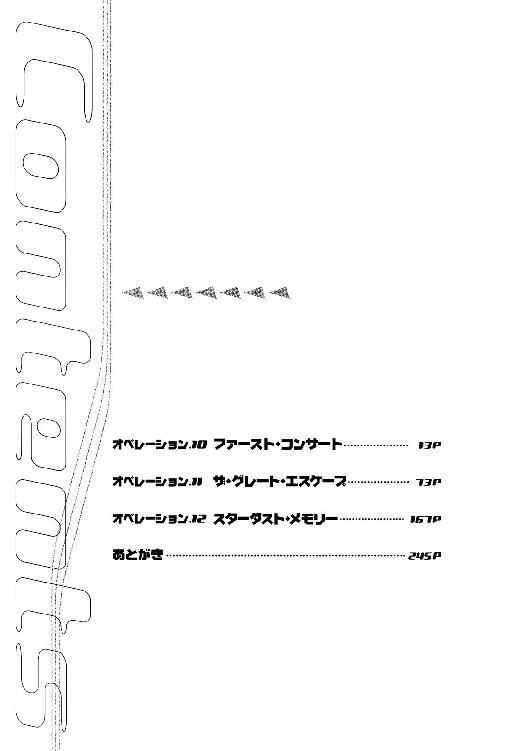
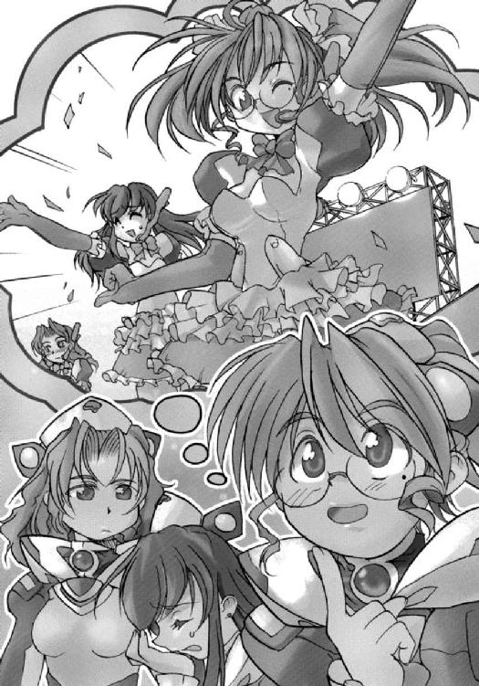

| スターシップ・オペレーターズ(3) (電撃文庫) | |
| 水野 良 & 山根 公利 | |
| (2013) | |
本書（電子版）に掲載されているコンテンツ（ソフトウェア／プログラム／データ／情報を含む）の著作権およびその他の権利は、すべて株式会社ＫＡＤＯＫＡＷＡおよび正当な権利を有する第三者に帰属しています。
法律の定めがある場合または権利者の明示的な承諾がある場合を除き、これらのコンテンツを複製・転載、改変・編集、翻案・翻訳、放送・出版、公衆送信（送信可能化を含む）・再配信、販売・頒布、貸与等に使用することはできません。
初出 スターシップ・オペレーターズオフィシャルサイト
URL:http://www.starshipoperators.com
電撃hp Vol.14, Vol.16（オペレーション10，11）

カバーデザイン◎荻窪裕司
編集◎フィールドワイ
キャラクターＣＧ◎内藤隆
オペレーション10 ファースト・コンサート
１
二三〇〇年五月三〇日 赤色矮星ＨＳＣ１８６３第二惑星軌道上──
第一艦橋のメインスクリーンの画面は大きくふたつに分割されていた。
そのひとつに映るのは、赤く輝く小さな太陽の姿。
フェニキア星系から、およそ五光年離れたところにある赤色矮星である。固有の名称はなく、ヘンリエッタ星域恒星カタログで１８６３のナンバーがつけられている。質量が小さいため主系列星にはなれなかった恒星で、低温ながら何百億年も静かに光を放ちつづける。
そして最後のときも、壮絶な超新星爆発など起こすことなく、穏やかに黒色矮星となり、恒星としての生涯を終える。
（わたしも、そんな生き方を送りたかったな......）
香月シノンは、今更とは知りつつ、心のなかでつぶやいた。
しかし、現状、考えられるもっとも確率の高い死に方は、超新星となる大質量星と同じ、宇宙空間での爆死である。
二分割されたもうひとつには、小型の貨物船が大きく映っている。アリマ・ジェネラル・インダストリ（ＡＧＩ）が所有する恒星間貨物船である。
三度におよぶ戦闘で消耗した物資を補給するため、植民惑星のないこの星系で合流したのである。
この星系に監視衛星でも敷設していないかぎり、王国が自由護衛艦アマテラスの存在を知るすべはない。
そして今のところ、アマテラスの監視任務についている重装巡航艦コンキスタドールは、まだこの星系に出現していない。
「まもなく、貨物船とランデブーします。補給作業、準備よろしく」
「──了解。搬入路確保後、補給作業を開始します」
補給担当の荻野セイが、主任通信員である氷坂アレイの伝達を復唱する。
作業がはじまってしまえば、あとは補給班の仕事だ。第一級戦闘態勢も解除となり、全艦は通常任務となる。
しかし第一艦橋はこのまま当直で、八時間の勤務が待っていた。
だが、今回は補給作業の監視という仕事があるので、退屈しなくて済むだろう。何も仕事がないときは、客の来ないコンビニの店員と同じで、眠気と戦うのが最大の仕事になる。
シノンはそういうときには仕事をするふりをして、何か、〝内職〟をすることにしている。軍事関係や兵器関係の書物を読むことがほとんどで、生まれつきの記憶力のよさにも助けられ、今では軍事評論家や戦史研究家と討論しても負けないだけの自信がある。
テスト航海のあと、ＡＧＩの造船所とフェニキア星系の宇宙港で簡単な補給を受けただけだったので、不足している物資もいろいろでてきている。
後方支援もなく単独で戦うこの艦の宿命ではあるが、「腹が減っては戦はできぬ」の諺は、宇宙空間での戦闘においても立派に通用する。
シノンは費用のことをほとんど気にせず作戦を立ててきたので、補給班長の荻野セイと会うと、かならず文句を言われる。その都度、謝ってはいるが、これからも方針を変えるつもりはない。勝利を最優先に考えて、作戦行動を提案する。
セイも、おそらくその方針は、承知しているだろう。ただ、彼女にも立場があり、注意をしないわけにはいかないということだ。
ヘンリエッタ星域を中心に、番組の契約者数はなんとか採算ラインに乗ったそうだが、銀河ネットはあくまで営利目的でこの艦と契約している。制作費は抑えたほうがいいに決まっているのだ。
自由護衛艦アマテラスが戦うべき相手は、王国以外にもいろいろあるということだ。たとえば番組の契約者数や視聴率であるし、国連安全保障理事国の動向や、全世界の人々の世論である。
「娯楽のために戦争をやっている」と非難する〝良識人〟をかわすため、報道と娯楽とにチャンネルが完全に分かれたこともあり、先日の護身術の試合ではないが、バラエティまがいの企画にも出演させられることになるかもしれないと、艦橋勤務の女子たちは実のところ、戦々恐々としているのだ。
（補給が終わったら、ミユリとアレイさんを誘って購買部にでも行こう）
シノンは重くなった気分を払拭しようと、そんなことを考えた。
宇宙時代においても、ショッピングは女性にとって一番のストレス解消法である。今回の補給で、品薄状態がずっと続いていた購買部も改善されるだろう。
軍事産業を最重要部門としているＡＧＩだけに、貨物船といっても軍事用の輸送艦とさほど変わらなかった。輸送のためのラインが伸ばされ、自由護衛艦の倉庫の搬入口へと接続される。
そしてこの艦から、乗員が貨物船へと乗りこんで、向こうで補給物資の検査を行うてはずとなっていた。
爆発物などが艦に運びこまれるのを防ぐためである。先方は不満そうだったが、セイは強引に了承させている。
民間企業から直接、補給を受けるというのが、そもそも異例なのだ。通常の宇宙戦闘艦なら、検査済みの物資を専用の補給艦から受けとるのである。
シノンはモニターで、作業の進行状況を監視しながら、指示を求められたらそれに対応するという仕事をこなしていった。
宇宙空間での補給作業は、誰もが初めての経験だったが、心配したほどのトラブルはなく、作業は順調に進行した。
補給物資は艦の倉庫に次々と運びこまれ、分類、保管されてゆく。アマテラスの物流システムは最新式のもので、人間の手を必要としない。各部署が必要な物資を請求すると、自動的に搬送されてくるという極めて便利なものだ。
もっとも、艦橋には、必要な物資はない。軽食や飲み物を、いくらかストックしてあるぐらいだ。それらの品物は物流システムを経由せず、シノンたちが食堂から調達している。
補給作業はとどこおりなく進んだ。シノンたちは適度に忙しい八時間の勤務を終え、第二艦橋の乗員との交替時間がやってきた。
そして引き継ぎを行っているさなかに、突然、荻野セイから通信が入った。
「──問題発生よ」
怒り心頭といったセイの顔が、第一艦橋のメインスクリーンに浮かびあがる。おそらく、第二艦橋のメインスクリーンにも同じ映像が流れていることだろう。
「報告して」
シノンは緩みかけていた気分をひきしめて、セイに返答する。
「──わたしが要請した補給物資が全部、とどいていないのよ」
「それは大問題ね」
シノンは苦笑を浮かべた。
「ＡＧＩはなんて？」
「──貨物船の搭載量が十分ではなかったんだって。トラファルガーとの戦闘で多機能装甲板を大量に消費したでしょ。その補給を最優先に指定してたんだけど、そしたら要求しただけの数を全部、搭載してきたのよ。おかげで優先順位の低いものが、積み残されたってわけ」
「優先順位の低いものって、どういう種類の物資なの？」
「──わたしのオーダーと輸送されてきた補給物資のリストを、そちらに転送するから、自分で確かめてみて。わたしはＡＧＩと交渉に入るから」
セイはそう言って、通信を切った。
「セイさん、本気で怒ってたね」
ミユリがシノンを振りかえる。
「ＡＧＩの担当者がかわいそうかも......」
荻野セイは経理関係のエキスパートで、この艦の乗員はおろか、母国キビの航宙自衛隊の全部署を探しても、あまりいないタイプの女性だった。
金儲けが趣味だと、彼女は日頃から公言している。それなら、民間企業に就職したほうがよさそうなのだが、航宙自衛隊は予算も多いので、働きがいがあると考えたらしい。
節約することも、金儲けのひとつということだろう。
「同情なんてしなくていいみたいよ......」
シノンはセイから転送されてきたふたつのリストをモニターに表示させ、そのふたつを検索してゆく。そして輸送されてこなかった物資を赤字で示すよう、操作を行う。
その結果を、シノンはミユリとアレイ、第二艦橋の三人のオペレーターのモニターに転送する。
「......ホント、シノンの言うとおりだ」
転送されてきたリストを見つめながら、ミユリが憮然とした声をあげた。
「──今から貨物船に乗りこんで、責任者をつるしあげにいこうぜ！」
第二艦橋勤務の近接防御管制員である七瀬ユキノの怒りに燃えた声が第一艦橋に響く。
「──主砲の発射許可を求めていいですか？」
副砲術士の若菜サンリの声が続いた。
まじめで物静かな彼女の発言とは、とても思えない内容だった。口調がいつもどおりだったので、かえって迫力を感じる。
（サンリ、性格、変わったかも......）
シノンは思った。
銀河ネットで桐生タカイに秘めていた想いを告白したことで、いろんな意味で気持ちがふっきれたのかもしれない。
飲み会などで、そのことを冷やかされても、わずかに顔を赤くするだけで、後悔したり、落ちこんだりする様子はない。
ユキノやイマリから聞いたところでは、サンリはタカイに対して、とても自然に話しかけられるようになったという。それだけでも大きな進展だと、彼女らは考えているようだ。
そのため、片想いを秘めたままにしているのは美容と健康に悪いという共通認識が、艦橋勤務の女子のあいだにできた。
「担当者をつるしあげるとか、主砲発射とか、キミたちはいったいなにを話しあっているんだ？」
アマテラスの艦長である神崎キスカが、顔をしかめながら訊ねてくる。
「ＡＧＩの協力がないと、この艦は運用できないんだぞ。すこしぐらいのミスで、そんなに目くじらを立てなくても......」
「すこしぐらいのミスじゃないから、目くじらを立ててるんです。ＡＧＩの担当者は兵器や装甲、機器関係の補充を優先させて、生活必需品をひとつも運んできていないんですよ。このままだと、すぐにも不足する物資がでてきます」
シノンはそう言って、営業用の笑顔を艦長に向けた。
その笑顔に別の意味があることは、さすがにキスカも気づきつつある。
「そうか、それは問題だな......」
と、うなずいたまま、キスカは意味もなくモニターに視線を落とした。
シノンはそれを見とどけてから、
「第二艦橋との引き継ぎが終わったら、わたしもそちらに向かいます」
と、個人回線を通じて、セイに連絡を入れた。
「──お願いするわ、艦長代理」
艦長補佐であるシノンを、あえて艦長代理と呼んだのは、キスカでは交渉にならないと判断したということだ。
（それと、男子にはあまり知られたくない問題だしね......）
シノンは心のなかでつぶやき、当面の問題にどう対処するか、考えを巡らしはじめた。
２
自由護衛艦の重力区画にある食堂に、勤務を終えて自由時間となったシノンたち第一艦橋の三人と、待機時間に入った間宮リオたち第三艦橋の三人が顔をそろえていた。
そしてＡＧＩの担当者との交渉を終えたばかりの荻野セイも同席している。
「あのＡＧＩの担当者、間違いなく出世しないわね。いいえ、わたしが左遷に追いこんでみせる！」
セイは怒りにまかせて、ブレンド茶の入ったマグをテーブルに叩きつけるように置く。
問題が発生した原因は、彼女が発注した品目にＡＧＩの担当者が優先順位をつけるよう求めてきたことにある。
セイは当然、その理由を問いただしたのだが、期間内に調達するために必要な措置であるとの返答だった。
しかし真実は、手配可能だった貨物船の搭載量を、セイの発注量が上回っていたからである。当然、積み残しがでるわけで、担当者は彼女が指定した優先順位に従って、機械的に搭載する物資を決めたのだ。
セイは当然、各種兵器や観測機器などのハードウェアに優先順位をつけていた。
だが、最低限、必要な量を確保したら、それらの品目もおのずから優先順位は下がるのである。彼女が計算したところでは、多機能装甲板〝スカラベ〟の搭載数を、たった一〇個減らしただけで、その他の物資をすべて搭載することが可能だったのだ。
だが、それを忠実に実行しては、ＡＧＩの利益に大きな差がでる。
スカラベ一個の単価は億の単位だが、同量の生活必需品は、その一〇〇分の一から一〇〇〇分の一ていどの価格でしかない。
貨物船にかかる費用を考慮すると、低価格商品の輸送は割に合わないのである。
「わたしから言質だけをとって、利益が最大になるように積荷を選択したってことよ」
「ＡＧＩは、わたしたちとの関係を長期間、継続する気はないということなのかしら？」
セイの言葉に、間宮リオが首を傾げる。
「その心配はないと思う。ただ、ＡＧＩの担当者は、営業部の人間だったのよ。そして目先の数字しか見えていないだけ。この艦がいかにＡＧＩに貢献しているかを理解していたら、あんな対応は絶対できないはずだもの」
セイはそう答えると、あんな無能な人間が星間企業に就職しているかと思うと、腹が立ってくると怒りをぶちまけた。
「わたしたちって、ＡＧＩに何か貢献してましたっけ？」
第三艦橋勤務の副航宙士である摩耶アキホが、気怠そうな口調でセイに訊ねた。もっとも、それが彼女の普段からの話し方である。
「この艦が王国の戦闘艦を撃破するたびに、ＡＧＩの株価が急騰しているって知っている？ 一株一二八〇円だったのが、今は三〇倍の値がついているのよ」
セイは、興奮ぎみの声で説明した。
「それって、すごいことなんですか？」
アキホが不思議そうに訊ねかえす。
「すごいことですわ」
リオが間髪を入れず答えた。
彼女は個人企業の経営者の娘であり、政治家を目指していることもあり、経済の仕組みには当然、精通している。
シノンにも実感こそないが、株価が三〇倍になることが、いかにすごいかは理解できた。競馬にたとえるなら、三〇倍の馬券を一点勝負で的中させたようなものである。去年の日本本国のダービーが、たしかそのぐらいの倍率だったはずだ。
「もし、この艦が沈むようなことがあったら、ＡＧＩの株価は暴落するってわけね......」
シノンがつぶやくと、そのとおりというように、セイは大きく相槌を打った。
「たぶん、ＡＧＩには戦闘艦の発注が殺到しているはずよ。それだけに、担当者も強気な営業をできたんだと思う。企業の業績がいいと、自分も偉くなったように錯覚する馬鹿は、いくらでもいるから。でも、そういう人間にかぎって、企業を離れたら、何ひとつできないのよね」
企業は人に機会を与えるし、役職は人を飾りもする。だが、企業を支えている人間と企業に支えられている人間のあいだには、雲泥の差があるのだ。
シノンは星間企業に入社して、そこそこ出世しそうな男と結婚することを（漠然とではあるが）夢見ていただけに、セイの言葉はけっこう痛かった。
「わたしたちが勝つことで株価があがるのなら、全財産を注ぎこんでＡＧＩの株を買っておけばよかったですね。負けたときには、暴落しようと関係ないんですもの」
「そのとおりよ」
アキホの言葉に、セイがニヤリとしてうなずく。
「今からでも、お金を出しあって買っておきます？」
「心配しないで、すでに購入済みだから」
セイは得意そうに、アキホに答えた。
「買ってあるんですかぁ？」
アキホは驚いて、いつも眠たそうだと評される目を精一杯、開いた。
「銀河ネットと契約を結ぶとき、いろいろと交渉したのよ。契約終了まで、わたしたちには基本報酬が約束されている。そして特別な仕事を依頼された場合にはボーナスもでる。チャンネルから発生するソフトその他にも、わたしたちの著作権を認めてもらっている。それからこれは裏技なんだけど、このチャンネルの名義でファンドを売らせてもらって、それで集めた資金をＡＧＩやこの艦の建造に関係した企業の株に投資しておいたわけよ。もちろん、銀河ネットとの違約金には足りないけど、契約を無事に完了することさえできたら、すくなくとも第二の人生の心配はしなくていいわよ。どうせ、どこかに亡命するしかないんだから......」
ファンドの分はすでに清算してあり、ＡＧＩの株も利益確定のため、いくらかは売却してある。だから、もはや損はない。あとは、どれくらい儲けられるかである。
オンラインバンクには、この艦の乗員それぞれの名義で口座を開設していて、かなりの金額がプールされている。それから、ＡＧＩの株をはじめとする有価証券だ。
セイは艦橋勤務の六人の女子にむかって、とくとくと説明した。
「みんなから委任をもらえたら、今回の問題は、ＡＧＩの次の株主総会で議題として提出することだってできる。営業部の責任者に抗議もするつもり。だけど、当面の問題は申し訳ないけど解決できないのよ。早急に、なにか手段を講じないとね......」
セイはしめくくるように言って、じっとシノンを見つめる。
「手段と言われても......」
セイの話に圧倒されていたシノンは、あわてて考えをめぐらせた。
「すぐに思いついた打開策はふたつだけかな。ＡＧＩに至急、不足分を輸送させるか。それとも、どこかの宇宙港に寄港するか。あたりまえの答えでごめんだけど......」
セイは、あっと驚くような解決策を期待していたのかもしれないが、いつもいつも思いつけるものではない。
「シノンが思いつかないのなら、他に方法はないってことね。そのふたつの打開策で探ってみましょ」
セイがため息をつきながら言った。
「ＡＧＩとの交渉は、わたしが進める。宇宙港のほうは、リオにお願いしていいかしら？」
「しかたありませんわね......」
リオは苦笑を浮かべながらうなずいた。
このアマテラスを受け入れる意志のある惑星国家や星間企業があるかどうかはわからないが、とにかく当たってみるしかないだろう。
「伯父様とも相談して進めますわ」
リオはそう言うと、椅子から立ちあがった。
それじゃあ、わたしもと言って、セイも続く。
「お願いね」
シノンはリオとセイに声をかけてから、残る四人と互いに顔を見あわせた。
「それで、わたしたちにできることだけど......」
シノンが苦笑をもらしながら、仲間たちに向かって言う。
「不足しそうな品物を、節約するしかないと思うの」
「ま、そうだろうな......」
氷坂アレイが相槌を打つ。
それがもっとも単純な、しかし、確実な対応策である。
「だけど、節約するのが難しいものもありますよぉ」
アキホが携帯端末を取りだして、問題のリストをチェックしながら言った。
「これとか、これとか、これなんか特に......」
「そうなのよ」
シノンは、困ったような顔でうなずいた。
普通に生活しているだけで、消費されていくものもある。しかも兵器などとは異なり、生活必需品のほうは、戦闘がなくても減っていくのである。
「ま、節約しようという気持ちを持っているだけでも違うと思っておこうよ」
シノンには、そう言うしかなかった。
あとは、セイとリオのがんばりに期待するしかない。
それにしても、とシノンは思った。
（子供のときから貧乏には慣れてたけど、まさかこんな高価な戦闘艦に乗ってまでひもじい思いをさせられるとはね）
３
補給担当の荻野セイと、自由護衛艦アマテラスの報道官でもある間宮リオの交渉は、それぞれに成果があった。
ＡＧＩの経営陣は今回の問題を重大視し、アマテラスの担当者を即刻、解雇。今後このようなことがないよう、陳謝した。
そして、アマテラスのために専用のチームを組織し、物資の補給から、新兵器の開発など万全のサポート体制を整えることを約束してくれたのである。
しかし今回にかぎっては、新しい貨物船を出すには時間がかかるため、軌道ドックのあるインカ星系まで、アマテラスのほうから来てほしいとの回答だった。そのために要する費用は、ＡＧＩ側が負担するとの条件付きである。
一方のリオは惑星国家キビ亡命政府の名で、ヘンリエッタ星域自治連合に所属する近隣の惑星国家に、宇宙港への寄港と補給を要請し、ひとつだけ了承の返事を受け取った。
惑星国家〝シュウ〟である。
第三惑星に五つの都市を有し、人口はおよそ五〇〇〇万人。その五割が中国系で、残りは東南アジア諸国からの移民で構成されている。
植民された時期も早く、地球化も高度に進んでいて、自然環境に近い状況で農作物や畜産、養殖業などが営まれている。また、それらを材料とした食品加工業もさかんで、自由護衛艦アマテラスの食堂にも、シュウで生産されたレトルト食品が大量に保管されている。
中華料理やエスニック料理の愛好家にとっては、まるで聖地のような場所で、グルメ目的の観光客もヘンリエッタ星域各地から大勢、押しかけている。治安もよく、都市も清潔、ただし物価は安くない。
アマテラスが身を潜めている赤色矮星からは、二回のワープで到着が可能だった。
ふたりの交渉の結果を受けて、第一艦橋に隣室する作戦室には、王国から首謀者に指名された五人が話しあいのために集まった。
艦長の神崎キスカ、桐生タカイと三上シントのふたりの副艦長、そして報道官の間宮リオと艦長補佐の香月シノンである。
「......つまり我々には、ふたつの選択肢が示されたということだ」
作戦室の中央に置かれたテーブルに肘をつき、顔のまえで手を組みながら、キスカは感情を抑えた声で言った。
それを見て、前回、作戦室で会議を行ったとき、スターシップライブでは今のような感じで放送されていたのを、シノンは思いだした。
キスカは番組で放映されている自分をはっきり意識している。ナルシストじゃないかと、女子たちのあいだでは噂になっているほどだ。
「インカまで航行するには、だいぶ日数がかかりそうだね。跳躍航法用の推進機関をフル稼動させたとしても、五週間から六週間は必要だと思う......」
航宙長の立場から、シントが意見を述べた。
途中でエネルギーの補給を受けないので、跳躍推進機関のジェネレーターがいっぱいになるまで、時間がかかるのだ。
「シュウまでなら二週間もあれば、衛星軌道上の宇宙港に着くよ」
「日数だけを考慮するなら、検討の余地はないってことだな」
そう言って、キスカは静かにうなずく。
「でも問題なのは、シュウ政府の最近の外交姿勢よ。自治連合には加盟しているものの、王国に対しては中立か、どちらかといえば友好的な印象がある。経済的にゆとりのある惑星国家だから、侵攻用の宇宙戦闘艦を建造するよう、連合から要請されていたんだけど、それも拒絶しているしね」
間宮リオは複雑な表情をうかべていた。
彼女自身が交渉しての成果である。だが、シュウ政府の真意が、完全には把握できていないのだ。
「最悪、罠にかけられる可能性もあるわけか」
ふたたび、キスカがうなずく。
「その可能性は否定できないわね。ただ、国民の世論はわたしたちに対して、同情的というより熱狂的みたいなの。このチャンネルの契約者数は総世帯数の八〇パーセントにも達していて、視聴率もかなりのものよ。もともと惑星国家シュウは、キビとは文化交流が盛んだったから。キビよりもシュウの国民のあいだで、人気の高いアイドルとかも多いようだし......」
「オレたち......いや、リオやシノンも、アイドルと同じに見られているってことか？」
タカイがリオとシノンを交互に見つめながら、ニヤニヤと笑う。
オヤジが入っていると言われる所以なのだが、本人にはまったくその自覚はない。
「あいにくだけど、あなたたちもよ。銀河ネットで、シュウ星系発信の個人サイトを検索してみたら、男子の名前もかなりひっかかってきたわ。いくつかダウンしておいたけど、試しに見てみる？」
リオはそう言って、意味ありげな笑いをうかべた。
「いや、やめておく。よく書かれてたら恥ずかしいし、悪く書かれてたら腹が立つからな。オレは他人が見たオレじゃなく、オレが信じるオレでいたい」
「今のセリフが放送されたら、ますますタカイの個人サイトが増えるよ」
シントが笑いながら指摘した。
「政府の姿勢と世論とが一致していないというのが、かえって悩ましいですね」
脱線しそうになった話題をさりげなく修正しながら、シノンは制御盤を操作して、シュウ星系から発信されているニュース・サイトを三つ、作戦室のスクリーンに表示させた。
とりあえず、トップニュースだけを日付の逆順で並べてみる。
ニュース・サイトのうちふたつは自由護衛艦を支持する内容が多く、もうひとつは表現に配慮しながらも王国を擁護している印象であることが、それでわかった。
「どうやら、大統領選挙が近いみたいだな......」
キスカがスクリーンを見つめながらつぶやく。
たしかにここ一週間ほどのトップニュースは、選挙に関連した内容が多い。
キスカはそのうちのひとつを自分の座席のモニターに転送し、詳細を表示させた。
「現大統領の対立候補は、国民の人気を利用して、自由護衛艦を積極的に支援しようと訴えかけているわ。ただ、その結果として、王国と戦争になるのではないかと、有識者のあいだから危惧の声もあがっているけどね......」
キスカが記事を読むよりも早く、リオが解説を加えた。
当然のことだが、リオは各星系から発信されてくるニュース・サイトもチェックしている。ヘンリエッタ星域の情勢を把握することは、アマテラスの報道官でもある彼女にとっては任務のひとつなのだ。
「キミの伯父様──間宮元総理はどのように判断されている？」
キスカがモニターの表示をオフにしてから、リオを見つめた。
「罠の可能性も否定しきれないけれど、おそらく大統領選挙を睨んでの人気取りだと推測している。伯父様はシュウの大統領と二度ほど直接、会談したこともあって、受けた印象は慎重派の現実主義者だそうよ。総選挙が終わるまでわたしたちを利用して、再選されたら現実路線に軌道をもどすつもりなんじゃないかしら。つまりは、王国の容認ね」
「だったら、かえって安心なんじゃないか？ 大統領が現実主義者で慎重な人物というなら、王国とも秘密裏に交渉しているかもしれない。ボクたちが寄港しても、王国が戦闘艦を派遣してくることがないようにね」
「わたしも、それは思ったの。だけど、確証がもてなくて......」
リオはそう言って、わずかに肩をすくめた。
「だから安全を期すなら、インカの軌道ドックだと思う。そうは思うのだけど......」
「でも、なんなんだ？」
めずらしく言葉を濁したリオに対して、キスカが先を続けるようにうながした。
「インカに到着するまでに、確実に底をつく物資があるのよ」
わずかに顔を赤くしながら、リオはキスカの視線から逃れるように、シノンを見つめた。
シノンも当然、事情を知っているので、リオと同じような表情になる。
「どの物資？ 致命的なものなのか？」
焦ったように、キスカはリオの肩に手をかけた。
「わたしたち、女子にとってはね」
キスカの手を振り払って、リオは怒った声で言いかえした。
「女子にとって致命的？」
キスカはわけがわからないという表情で、ふたりの副艦長を振りかえった。
「わからないのなら、気にしないでいいんじゃないかな。だけど、そういう理由なら、選択の余地はなくなったということだね。いくら王国でも、視聴者の見ている前で、騙し討ちなんかはできないだろう。彼らが本当に恐れているのはボクたちじゃなくって、国連宇宙軍が派遣されてくることだろうから」
キスカにそう答えて、シントが笑い声をあげた。
「ま、女子たちもみんな、健康でなによりってことだ」
タカイもニヤニヤと笑いながら、シントと合図しあって席を立った。
キスカはまだ事情をわかっていないような表情だったが、これ以上、追及するとまずいことになると本能的に察したのか、進路をシュウ星系に向けるとあわただしく宣言して、副艦長たちに続く。
そして三人は、作戦室をあとにした。
「ホント、タカイってオヤジ入ってるんだから......」
男子たちが消えた扉を睨みつけながら、シノンがぶつぶつとこぼす。
「なんで、サンリもあんな男が好きなんだろ？」
「彼女は本物のお嬢様だから、あいつの雑なところがいいのでしょ。それから、やっぱりキャラクターでしょうね。同じことをキスカが言ったりしたら、きっと大顰蹙よ」
リオの言葉に、シノンはふかくうなずいた。
キスカの場合、粘着質な性格なので、女子のあいだでは何かと評判が悪いのだ。タカイのほうがよほど失言が多いのだが、悪びれない性格なので文句を言う気にはならない。
もてるかどうかは本人の努力ではなく、生まれついての要素が多いということだ。もっとも、それは男子だけではなく女子も同じことだ。
「でも、これで最悪の事態は免れたわね」
リオは安堵の息をつきながら言った。
「だけど、大丈夫かしら。惑星シュウが、わたしたちを王国に売り渡すつもりなら......」
「大統領選をひかえているんだから、それはないと思いたいわね」
リオは自分自身に言い聞かせるような感じで言った。
「政治家って人種の大半は、自分の意志より、他人の評判のほうを気にするものだから」
「リオも、そうなの？」
シノンは興味にかられて訊ねた。
「シノンよりはね」
と、リオは微笑みながら答える。
「男子たちから自分がどう思われているか、あなた、考えたこともないでしょ？」
「あまり、ないかな......」
思いがけない切りかえしにあって、シノンは言葉をつまらせた。
「つまり、あなたはタカイと同じタイプってことよ」
「それって、誉め言葉なのかしら？」
「誉めてはいないけど、羨ましいって思うわ」
リオはそう言って、軽やかに笑うと、床を蹴って扉にまで飛んだ。そしてシノンに手を振って、作戦室をあとにする。
「そうなのかな......」
シノンは首を傾げながら、自問してみた。
彼女としては、リオの愛らしい容姿も、それでいて颯爽とした態度のどちらも羨ましく思えるのだが......
（あまり考えないでおこ）
シノンはそう結論づけると、自分も席を立った。
最悪、惑星国家シュウの戦闘艦と戦いになるかもしれないのだ。手に入るかぎりの情報を集め、検討しておく必要がある。
それこそが、この艦における彼女の役割なのだ。戦いに勝ちつづけないかぎり、すべての未来が閉ざされるのだから──
４
自由護衛艦アマテラスが、二回の跳躍航法により、シュウ星系に到着したのは、ＡＧＩの輸送船の（不完全な）補給を受けてから八日後のことである。
そして、アマテラスは通常空間を巡航推進によって進み、シュウ星系第三惑星を目指した。
当然、シュウ政府には量子共鳴通信で事前に連絡を入れてあるし、寄港を歓迎するとの返答も得ていた。
「......シュウの国民は、ものすごい騒ぎになってますよ」
銀河ネットワークの支局になったかのような通信室で、スターシップチャンネル２３００の娯楽部門を担当している放送作家にしてディレクターのトニー・ガリアーノは、チャンネルのエグゼクティブ・プロデューサーであるピーター・スパイクスに興奮ぎみの声で話しかけていた。
「どう、ものすごいんだ？」
さほど関心なさそうに、スパイクスは両生類に似た容貌の放送作家に訊ねかえす。
「地球から超有名アーティストを招いても、これほどの騒ぎは起きないんじゃないですか？」
「アーティストなんて、しょせんそのていどのものさ。スポーツに対する熱狂と比べても、ぜんぜん及ばねぇ。そしてスポーツってのは、戦争の代償行為でしかないんだからな」
「さしずめ、彼女らは二四世紀のジャンヌ・ダルクというところですか？」
「無事に年が越せたらな。今年は、まだ二三世紀だぞ」
ガリアーノの問いかけに、スパイクスはつまらなそうにうなずいた。
この放送作家はたとえがいちいち古くさくて、しかも独創性がないのだ。黎明期から発展期にかけてのアニメーション研究家だからかもしれないが......
「ネットワークのなかった当時でさえ、あのフランスの聖女は民衆から熱狂的な支持を受けていた。そしてこの艦の女どもには、オレたちがついている」
「彼女らに、惑星への上陸許可はおりますかね？」
「シュウの政府も、許可しないわけにはゆかないだろうさ。あれほどのもりあがり、大衆は娘どもをその目で見ないと収まるはずがない」
「あの熱狂ぶりなら、たしかにそうでしょうね」
ガリアーノは、喉の奥から絞りだすような笑い声をもらす。
「それなら、ただ上陸させるわけにはゆきませんねぇ」
「わかっているじゃないか。現地のイベンターに連絡して大至急、イベントの準備をさせろ。それから、娘どもにもな」
「了解です」
ガリアーノは調子に乗ってスパイクスに宇宙軍式の敬礼を返すと、制御盤のキーボードを猛然と叩きはじめた。
イベントの企画を立案するためである。
彼は頭のなかでじっくり考えるのではなく、ひたすら手を動かしてアイデアをモニターに並べてゆくのが性に合っているのだ。
彼が担当している娯楽のほうは、核になる番組がなくて、苦戦しているというのが現状だった。
しかし、若者を中心に熱狂的な視聴者が集まっているとの自信はある。
報道のほうでは真実をありのままに伝え、そして娯楽のほうではディープでマニアックな演出を加えて放送する。
それが、スパイクスの方針である。
真剣勝負の格闘技と娯楽としての格闘技を両方、用意しているようなもので、視聴者はどちらかにひっかかるだろうというのが、彼の読みだ。そして両方を歓迎する視聴者も、かなりの割合でいるに違いない。
若い世代は独自の文化を欲するが、同時にその文化に普遍性があることを、心のどこかで望んでいるものだからである。
この艦の乗員たちは、ただのアイドルではなく、カリスマにならなければならないのだ。
（理想のシナリオは、最後に乗員全員が壮絶な戦死を遂げることなんだけどね。それで、彼らは永遠になるのさ......）
ガリアーノはふたたび喉の奥から笑い声をもらしながら、タイプを叩きつづけた。
５
八時間の通常任務を終えて、香月シノンたち第一艦橋配属の三人の女子は、人工重力区画にある食堂へとやってきた。
食堂には、何人かの先客がいた。そして、そのうちのひとりが手招きをして、彼女らを呼び寄せる。
「ディータさん？」
スーツ姿のその女性を見て、香月シノンは驚いた顔をした。
彼女が食堂で食事をするのは珍しいからだ。
「どうしようか？」
「断るのも悪いよね」
「彼女ひとりだけなら、問題ないんじゃないか？」
シノンが訊ねると、ミユリとアレイから、それぞれ答えが返ってきた。
「それじゃあ、ご一緒させてもらおうか」
シノンはうなずいて、ディータのいるテーブルに腰を落ち着ける。
「お疲れさま......」
ディータは微笑みながらうなずくと、まわりの目を気遣うように、わずかに身を乗りだした。つられるように、シノンたちも身を乗りだす。自然、顔を寄せあう感じになる。
「突然で悪いんだけど、あなたたちって、なにか楽器はできる？」
「楽器......ですか？」
予想もしなかった問いに、シノンたち三人は怪訝そうに顔を見あわせた。
「ミユリは、たしか、ピアノを習ってたんじゃない？」
「小学校までよ。中高学校に入ってからは、天文ひとすじだもの」
「そう言うシノンちゃんは？」
「わたしは、ひととおり。お父ちゃん──いえ、父がそういう人だったんで......」
「ミュージシャンだったの？」
「そうではないんですけど......」
シノンの父親は音楽だけでなく、美術のほうでも非凡な才能があったし、優れた技術者でもあった。とにかく万能型の天才なのだ。もっとも、どれに専念しても超一流にはなれなかったと、本人は笑っている。
父と比べたら、シノンははるかに不器用だが、それでもたいていのことはこなせる。子供のころは、父が教えてくれるいろいろなことを無邪気に楽しんでいたからだ。
「アレイちゃんは？」
「楽器はまともにやったことはありません。だけど、ドラムなら叩けると思います。スティックでは、よく遊んでいたから......」
「素敵よ、みんな。これで、ユニットが組めるわね」
三人の返答を聞いて、ディータが満足そうにうなずく。
「ユニットですか？ なんか、悪い予感がするんですけど......」
「その予感はたぶん、正解よ。だけど、悪いことだとは思わないでほしいわ」
シノンの言葉に、ディータが優しく言いかえした。
「たしかに戦争より、ましかもね......」
アレイがかすれたような声で、ささやくように言う。
「はるかによ。あなたたちのような素敵な女の子が命懸けで戦争をしているなんて、ホント哀しいことだもの」
「それで、あの......、あたしたちでバンドとか組んで、歌ったりするわけですか？ もしかして、人前とかで......」
遠慮がちに、ミユリがディータに訊ねた。
「そのとおりよ」
と、ディータは苦笑まじりにうなずく。
「娯楽のほうで、突然、企画が持ちあがってね。惑星国家シュウで、ちょっとしたイベントを催すの。基本的にはトークなんだけど、それだけじゃもりあがらないでしょ？」
ディータ自身、そのことをトニー・ガリアーノから知らされたのは、つい先ほどである。彼の話では、会場の手配や入場チケットの発売などは、すでに終わっているらしい。
つまり完全な事後承諾というわけで、シノンたちには引き受けてもらうしかないのである。それで説得の役が自分にまわってきたのは、なんとも理不尽というしかないが、女子たちに毛嫌いされているガリアーノにまかせるわけにもいかない。
「もりあげないと、いけないものなんでしょうか？」
シノンが疲れた声で言った。
しかし、いいかげん、このパターンには慣らされているので、反論の声にも力が入らない。
「新規視聴者獲得と視聴率アップのためにね。このあいだの補給だけで、どのくらいの費用がかかったかは知っているでしょ」
ディータが申し訳なさそうな顔をしながらも、殺し文句を言った。
「ステージ衣装とか、着なくていいんなら......」
シノンはうなだれるように首を縦に振った。

「それは、大丈夫だと思うわ。みんなの場合、制服姿のほうが絶対にウケがいいもの」
ディータの言葉に、シノンはとりあえず礼を言ったが、それが喜ぶべきことかどうかは、彼女にもわからなかった。
今、身に着けている制服も、機能よりデザイン重視で、女子たちのあいだではなにかと評判が悪いのだ。
「そうと決まれば、今日からレッスンよ。申し訳ないけど、休息時間はないと思ってね。食事が終わったら、トレーニング・ルームのほうに来てちょうだい。専門の先生が量子共鳴通信の向こうで待っているから」
ディータは最後にもういちど微笑んでから、優雅に席を立った。
シノンたちは会釈をして、彼女を見送る。
それから、三人で顔を見あわせた。
「ついに、この日がきたって感じよね」
シノンが言うと、アレイもミユリも大きくうなずいた。
まるで身売りされてしまったような気分だった。それも、すべてはこの最新鋭戦闘艦の維持費を支払うためなのである。
６
自由護衛艦アマテラスは、シュウ星系に入って六日目に、第四惑星の惑星軌道付近で惑星国家シュウ宇宙軍所属の戦闘艦シェンロンとランデブーした。
緊張の瞬間ではあったが、シェンロンは奇襲をしかけてくるようなことはなかった。
艦長の神崎キスカと報道官の間宮リオのふたりが、小型艇に乗り組んでシェンロンへ渡り、艦長ウォン・ロウと一時間にわたって会談を行う。
ウォン艦長は実直な印象の軍人であり、アマテラスが単独で同盟宇宙軍と戦ってきたことに対し、敬意を表した。また、ウォン艦長は、アマテラスの寄港が許可されたのは、政治的な都合であることも素直に認めた。
「──将来は最悪、貴官らと戦うことになるかもしれないな」
と、艦長は冗談めかして言ったが、艦に戻ってきたリオの感想では半分は本気の発言だということだった。
軍人というものは、当人の意志とは関係なく、文民の下した決定に従って、行動するのが原則であるからだ。
しかしウォン艦長の話では、住民たちの熱狂ぶりは本当らしい。
若者を中心に、スターシップチャンネルの話題だけで、一日の会話のほとんどが費やされるという。シュウ国内最大のテーブルテニスのトーナメントが、開催中であるにもかかわらずだ。
そういった話をリオから聞いたシノンは、正直、複雑な気持ちがした。
王国との開戦前夜の惑星国家キビが、まさにそんな雰囲気だったからである。すこし違うのは、キビの場合、強硬だったのは国民と政府首脳および議会の主流派であり、慎重派はあくまで反主流だったということだ。しかし戦闘に負けたとたん、強硬派の何割かが変節し、王国擁護の側にまわった。
シュウの大統領をはじめとする首脳は、キビ政府の二の舞は演じたくないと考えているのかもしれない。
ある意味、矛盾しているのだが、そのためにこそシュウ政府は、アマテラスの寄港を許可して国民を懐柔しようとしているのだ。
それで人々の熱狂ぶりがピークを迎え、下り坂になってくれることを期待しているのだろう。
その判断は間違っていないと、シノンにも思えた。
（シュウ星系に滞在するのも、たぶん短期間になるだろうな）
シェンロンに護衛されながら、アマテラスがシュウⅢの衛星軌道にある宇宙港に入港したのは、ランデブーからさらに二日後のことである。
そして同じ日、シュウ星系の外縁に、重装巡航艦コンキスタドールが出現してきたが（そしてそのときの当直はやはり第三艦橋の間宮リオだった）、艦長エルロイからは今回も監視任務であり、交戦の意志はないとの通信が、シュウ政府とアマテラスの双方に送られてきた。
アマテラスは宇宙港に繫留されると、さっそく補給がはじめられ、乗員たちにも一班ずつ、宇宙港の施設利用許可がくだされた。
ただし、安全を期すため、乗員は複数で行動することが義務づけられ、同時にシュウ宇宙軍のＭＰが護衛としてつくことになった。
ただの護衛ではなく、監視も兼ねているのはいうまでもない。
そして惑星国家キビの亡命政府を代表して間宮タツマ元総理と艦長の神崎キスカ、そして報道官の間宮リオの三人がシュウ政府の公式歓迎式典に出席するため、軌道エレベータでシュウの大地へと上陸したのである。
第一艦橋に勤務の三人の女子、香月シノン、氷坂アレイ、秋里ミユリらもそれに同行したが、行く先は式典会場ではなく、首都の中心街にある巨大なコンサート会場だった。
そこで二万人の観衆を集めての、一般市民による歓迎祭が開催されるからだ。
「──それでは出番です」
イベント会社のスタッフの声に後押しされて、シノンたち三人はステージに上がった。
まぶしいスポットが全身を照らし、歓声が塊となってぶつかってくる。
（こういうのが、アーティストとかの気分なのね......）
シノンは案外、冷静に思った。
観客席は薄暗いので、人々の顔がはっきり見えないということもある。
イベント会社のスタッフとは、ステージでの進行について、入念な打ち合わせを行っている。演奏と歌はイベントのラストで、シュウで人気の高いスタンダード・ナンバーを三曲、そして信じられないことだが、オリジナル曲もふたつ披露することになっていた。
時間にしておよそ三〇分だが、シノンたち三人はシュウ星系内を巡航中、恐ろしく本格的なレッスンを受けた。
このままアイドルとかミュージシャンとして働かされるのではないかと、真剣に心配したほどである。
実際、娯楽チャンネルのほうでは、デジタル映像で自分たちが出演するバラエティ番組やら、音楽番組が放映されはじめているのだ。
もちろん、そんなものを撮影している暇はないわけで、銀河ネットと契約している制作会社の完全オリジナル映像である。
しかし出演料（正確には肖像権使用料）は、荻野セイがしっかり請求してくれているので、銀行口座には着々とお金が貯まっている。そしてその額は、すでに一〇〇万ドルの単位に達しているらしい。気にならないといっては噓になるが、気にしてもしかたがないと、シノンは自分に言い聞かせている。
宇宙の塵になるときに、お金を持っていってもしかたがないのだ。王国との戦いに勝利したときのボーナスだと考えるしかない。
「ようこそ、惑星国家シュウへ」
ステージの中央にまで進みでると、男性の司会者が北京語で話しかけてきた。
惑星国家シュウの現地標準語は広東語で、三つの国際標準語のなかでは北京語、英語の順で話せる人の割合が高い。
シノンとミユリは、フランス語を含めた三つの国際標準語をすべて話せるし、アレイも北京語と英語は話せる。
そういう理由から、肉声は北京語、同時通訳で英語が場内に流されることになった。銀河ネットでは当然、フランス語でも同時通訳が放送される。
「寄港を許可いただきまして、ありがとうございます。おかげで、飢えずにすみました」
シノンは営業用の笑顔をうかべ、かるく頭を下げた。
アレイとミユリのふたりも、シノンにならう。
その瞬間、客席からどっと声援がわきあがる。
「みなさんも、本当にありがとうございます。みなさんの熱意があればこそ、シュウの政府も動いてくれたのだと思います」
イベントの台本どおりに、シノンが観客席に呼びかけると、ふたたび割れんばかりの拍手と歓声がわきおこった。
「立ったままだと緊張するでしょうから、こちらの椅子へどうぞ」
司会者に勧められるままに、シノンたちはステージに用意されていた椅子に落ち着く。椅子の横には小さなスタンドがあり、飲み物も用意されていた。
「まずは、自己紹介をいただきましょうか？」
司会者にうながされ、シノンたちは順番に自己紹介をした。
そのたびに歓声が爆発し、司会者が観客席に向かって合図を送って、静めなければならないほどだった。
場内の数カ所に巨大なスクリーンが設置され、そこにスターシップチャンネルで放送された戦闘シーンのダイジェスト映像が上映され、迎賓館で行われている政府公式歓迎式典の模様、さらにはアマテラスからのライブ中継も入ることになる。
シノンたちの役割は、その映像を見ながら、司会者から求められたコメントに答えていくというものである。
王国と戦争をはじめた経緯や動機──
宇宙空間で実際に戦闘しているときの気持ち──
撃破した敵艦の乗員たちのこと──
キビに残っている家族のこと──
まじめに答えるしかない質問もあったし、自分たちのスリーサイズとか食べ物などの好き嫌いなどといったお約束の質問も入っていた。
それらの質問に、シノンは笑顔をまじえつつも、正直に答えた。ミユリもアレイも、多少は遠慮しながらも、やはり本音で答えているようだった。
それが伝わったのか、観客もしだいに真剣な表情に変わっていく。
「みなさんは、決して真似をしないでくださいね。戦争は、とっても危険ですから......」
シノンは冗談まじりに観客に向かって言ったが、観客席から返ってきた反応は、まるでサッカーとかベースボールの国際試合さながらの怒号だった。
彼らは、王国打倒を本気で考えているのだ。
しかし宇宙時代の戦争は、民衆が地上でいかに騒ごうとも、ほとんど影響がない。
たとえは悪いが、人々は重力という名の牢獄に縛られているのと同じなのである。
王国はまるで看守のように、軌道上から人々を見張っているだけでいい。そうしているだけで、惑星国家政府は例外なく自壊し、王国への恭順を申しでる。
アマテラスの行動を理解してもらおうというつもりは、シノンにはない。
それが正しいとは、まったく思っていないからだ。
そうでなければ、この計画がはじまったとき、あれほど強硬に反対していない。
しかし、王国ははっきり間違っているとも思っている。
いかに言葉を飾ろうと、侵略戦争に正義などない。
〝正義の戦争〟と謳われた戦争は、過去にいくらでもあるが、その正義の名のもとにどれほど残酷なことが行われたかは、歴史が示すとおりだ。
シノンたちの不安をよそに、イベントは予定どおり進行していった。
そしてラスト近くになって、いよいよシノンたちが演奏と歌を披露するときがきた。
観客たちにはそういうプログラムがあるとは、まったく知らされていなかったらしく、驚きと興奮で、しばらくのあいだ会場内は騒然となった。
その騒ぎが静まるまでのあいだに、スタッフたちが手早く演奏の準備を整えた。シノンはギターを、アレイはドラムを、ミユリがキーボードを担当する。
そして歌は、三人が歌う。
三人は声の質がまったく違うのだが、一緒に歌うと不思議と違和感なく聞こえると、彼女らにレッスンをほどこした歌の先生が感想を洩らしていた。
すべての準備が整い、最後にヘッドセット（艦橋で使っているのとまったく同じものだ）が、シノンたちに手渡された。
慣れた手つきで、彼女らはそれをつける。
艦橋で勤務しているときと同じ格好のままで演奏し、歌うわけだ。そのほうがファンは喜ぶと、無精髭のプロデューサーや両生類顔の放送作家は判断しているのである。
ステージ衣装は着たくないという、シノンの希望が通ったわけではない。
（あの無精髭は、最初からこういう展開を視野に入れて、制服を選んだのだろうな）
シノンは思った。
そして音楽が、はじまった──
シノンたちは予定されていた五曲を、休むことなく歌った。
音楽が止まった瞬間は、会場は完全な静寂に包まれていたので、観客たちは白けているのではないかと不安になったが、すぐに拍手と歓声がわきあがり、やがてアンコールを求める手拍子に変わっていった。
予定にはなかったが、それに応じないと収まらない雰囲気だった。進行から指示が入り、シノンたちはオリジナルの二曲をふたたび演奏し、歌った。
そして三人のユニットによるファースト・コンサート（？）は無事、終演となった。
もりあがる観客を静めるのに苦労しながらも、イベントはフィナーレへと進んでいく。
メインスクリーンは二分割され、アマテラスの第二艦橋と迎賓館の歓迎式典の模様が映しだされる。
シノンたちも、背後のスクリーンを振りかえった。
歓迎式典に出席しているリオや、第二艦橋で通常任務にあたっているサンリたちと挨拶をするためである。
それで、このイベントは幕となる予定だった。
しかし、スクリーンを振りかえったとたん、シノンたちは異常を感じた。
サンリたち二艦の女子の表情が強張っており、それぞれのモニターを食い入るように見つめている。歓迎式典の会場のほうも、音声回線は入っていないものの、騒然とした雰囲気に包まれている。
「何があったの？」
シノンはヘッドセットのマイクに向かって、大声で叫んだ。
だが、しばらく待っても応答がなかったので、
「すいません、アマテラスと音声をつないでください」
と、舞台袖のスタッフを振りかえった。
了解のサインが返ってきて、さきほどまでシノンたちの歌と演奏を流していたスピーカーから、第二艦橋の音声が流れてきた。歓迎式典のほうとは音声はつながっていないが、それは混信を避けるためだろう。
「イマリ、聞こえる？」
観客が混乱するのを避けるため、日本語を使って、シノンがもう一度、呼びかける。
と、カメラが動いて、遠距離防衛管制員である神谷イマリの顔がアップになる。
「何かあったの？ 歓迎式典のほうも様子がおかしいんだけど？」
観客たちは最初、予定どおりの展開だと思ったらしい。
だが、シノンの声が切迫しているのに気づき、ざわめきはじめている。
「──やられたよ」
イマリから、やはり日本語で返ってきた第一声はそれだった。
「やられた？」
意味がわからず、シノンは訊ねかえす。
「──やはり、これは王国のしかけた罠だったんだ。ただ、罠にかけられたのは、わたしたちだけじゃない、シュウの政府も一緒なんだ......」
イマリの悔しそうな声が、会場のスピーカーから大音量で響く。
「どういうこと？」
「──一〇分ほど前、重装巡航艦コンキスタドールから報道官へルマンが銀河ネットを通じて声明を行ったんだ。ヘンリエッタ星域惑星国家同盟は、惑星国家シュウの敵対行為に対し、正式に宣戦を布告するって......」
「なんですって！」
シノンは驚いて叫び、舞台に上がっていることも忘れて、そのまま呆然となる。
惑星国家シュウに対して宣戦布告を行う。それが、いったいどのような意味を持つのかはあきらかだった。
自由護衛艦アマテラスを、この星域から離脱させないためである。
惑星国家シュウを防衛するための責任を負わせること。それで、王国は自由護衛艦を束縛できるのだ──
７
二三〇〇年六月一二日 新宿特別行政区メガバックスモール内スクリーンホール──
スクリーンホールの観客席は、怒号に包まれていた。
ホールの正面にある巨大スクリーンビジョンには、惑星国家シュウで行われている自由護衛艦アマテラスの歓迎祭の模様が量子共鳴通信を使った中継で映しだされている。
そして、歓迎祭の最後で思いもかけないアクシデントが生じた。
王国──ヘンリエッタ星域惑星国家同盟が、惑星国家シュウをテロ支援国とみなし、宣戦布告したのである。
第一艦橋配属の三人のオペレーターは、すでにステージからひけており、今は警備員が横一列にズラリと並んでいた。
先ほどまでオペレーターたちの歌と演奏に歓声をあげていた観客たちは、「王国打倒」のシュプレヒコールをあげながら、出口へと殺到している。
そして、一五〇〇光年離れたシュウ市民の怒りが飛び火したかのように、ホールに集まった観客たちも王国を非難する声を轟かせていた。
そんなスクリーンホールのステージに、ひとりの若者が駆けあがっていく。
佐竹マサラである。
このスクリーン・コンサートを企画・主催したのは、実は彼なのだ。
「アマテラス」の命名者であり、学生団体「ヘンリエッタ星域戦争を考える会」の主宰であることや、銀河ネットに開設した個人サイト「スターシップ・オペレーターズ」のヒット数が数百万件に達したことなどから注目を浴びたらしく、銀河ネットの日本支局から直接、連絡がきて、このコンサートの企画と主催を正式に依頼されたのだ。
この日本でのスクリーン・コンサートの模様は、スターシップチャンネル・エンタテイメントで放映されることが決まっていて、マサラ本人にも取材が入っている。
自分が取材の対象になるとは思ってもいなかったが、アマテラスの乗員を救うためならなんでもやるとの誓いを立てているので、銀河ネットに協力することにした。
考える会も、スターシップ・オペレーターズ・ファンクラブも、加盟者数はうなぎのぼりで、マサラは下宿の近くに事務所を借りて、何人かの有志に手伝ってもらっている。
親友でもあり悪友でもある片山イアイと彼の恋人の美里アミィも、最初はマサラのことをあきれていたが、今では積極的に協力してくれている。
とにかく、三年のあいだにヘンリエッタ星域戦争を終わらせることを目標にしているので、ゆっくりとはしてられないのだ。
「王国の横暴は、今、目にしたとおりだ......」
マサラはマイクを片手に、ホールに集まった観客に向かって呼びかけた。
「王国が、人類のすべての国家の征服を目指しているのは明白だ。にもかかわらず、日本政府も国連も、非難声明を繰りかえすだけで何の行動も起こそうとしない。ボクたちの怒りを、日本政府の首脳に、官僚どもに見せつけてやろうじゃないか！」
そしてマサラは観客に向かって、霞が関までのデモを呼びかける。すると、全員が一斉に立ちあがり、拳を突きあげた。
もちろん、デモなどする予定はなかったのだが、あんなシーンを見せつけられては、何も行動しないではいられなかったのだ。
もしも、王国が艦隊を派遣してきたら、アマテラスは惑星国家シュウを守るため、戦うしかないのである。逃亡することは、シュウの市民と視聴者を裏切ることになるから。たとえ相手が、一〇隻もの大艦隊であっても、だ。
そうなっては、いくら最新鋭の戦闘艦であるアマテラスといえどもおしまいである。マサラのこれまでの活動も、無駄に終わることになる。
（そんなこと、認められるものか！）
マサラは心のなかで叫び、観客たちの拍手に迎えられながらステージから降りる。
イアイとアミィをはじめ、一〇人ほどのスタッフがマサラのもとに集まってきて、指示を求めてきた。
「イアイとアミィはここに残ってイベントの後始末を頼むよ。あとのみんなは、ボクと一緒にデモの整理をお願いしたい。無許可のデモだから、警官に止められるだろうけど、なんとか霞が関まで頑張ろう。責任はすべて、ボクが取るから」
「わかった」
「捕まったら、差し入れ持っていくから」
イアイとアミィが笑顔でうなずき、ホールの事務所へと走っていく。
マサラはそして、残ったスタッフにデモのルートを説明した。
新宿通りを半蔵門まで出て、内堀通りに入って霞が関の官庁街へと向かう。ルートに選んだ通りは歩道も広いが、あえて車道を通って行進するつもりだった。
おとなしく行進などしていては、デモの意味がない。
マサラはホールに集まっていた三〇〇〇人を超える群衆の先頭に立って、ホールの階段を下りた。そして巨大ショッピングモール・メガバックスを抜けていく。
「自由護衛艦アマテラスを見殺しにするな！」
「王国の横暴を許すな！」
「政府はただちに行動せよ！」
「ロシアのウォッカは飲まないぞ！ 中国料理も食べないぞ！」
などといったシュプレヒコールをあげながら、マサラは群衆の先頭に立って、新宿通りへと入った。ちなみにロシアと中国は、国連安保理の常任理事国のなかで王国容認の立場をとっている国家なので非難しているのだ。
通行人たちは足を止めて、何ごとかと見守っていたが、シュプレヒコールを聞いて、拍手を送ったり、声援をかけてくれる者もいた。
日系の惑星国家である〝キビ〟が、王国に征服されて以来、日本の世論も反王国にかたまっているのだ。もっとも、車線をひとつ塞がれたドライバーたちからは、怒りのクラクションが鳴らされたりもしたが......
一〇分ほど行進していると、数人の警官隊がデモ隊を先導しているマサラのところにやってきた。
「デモの許可は取っているのだろうな？」
横柄な態度で、年配の警官が声をかけてくる。
「おまわりさんも、ご一緒に！」
マサラは質問には答えず、シュプレヒコールを行った。
笑いまじりに群衆も、それに応じてくれる。
警官は渋い表情になり、部下のひとりに無線で確認するよう命じる。
「......届けは出ていないそうです」
しばらくのあいだ無線で通信したあと、部下が答えた。
「無許可のデモ行為は法律で禁じられとるんだ！」
怒りの表情をのぞかせて警官は、マサラに言った。
「侵略戦争は国際条約で禁じられとるぞ！」
マサラはふたたびシュプレヒコールで返す。
違法なのはわかっているから、警官の質問に答えるわけにはいかないのである。逮捕されるまで、とにかく一歩でも先に行くつもりだった。
「ふざけておるのか？」
警官は大声で怒鳴るとただちにデモを解散するように命じた。
だが、マサラは応じるつもりはない。警官を無視することにして、シュプレヒコールを続ける。
マサラがおとなしく応じないとわかると、警官はいきなり困惑の表情となった。何しろ、数千人もの群衆が続いているのである。しかも、二〇代の若者がほとんどだ。
リーダーである人間を連行でもしようものなら、暴動となるかもしれないのである。そうなっては、責任問題なのだ。
上と相談するしかないと決めたようで、年配の警官は自身の無線で連絡をはじめた。そのあいだにも、警官の数はどんどん増え、事故を起こすわけにもいかないと思ったのか、交通の整理をはじめてくれる。
「おまわりさん、ご苦労様です」
マサラは一回だけ、シュプレヒコールに加えた。
やがて、上司の判断が下ったらしく、先刻の警官がマサラのもとにやってきた。
「道路交通法違反の現行犯で、おまえを逮捕する」
警官は言って、マサラの腕を摑んで、手錠をはめた。
しかし、デモを解散させるつもりはないのか、他の警官はあいかわらず交通整理を続けている。
「あとは、任せたから」
マサラは側にいたスタッフのひとりに笑顔で声をかけた。
そしてマサラはパトカーに乗せられる。
「まったく、馬鹿な真似をしおって！」
警官は、得意げな表情で言った。
公権力を行使することに快感を覚える虚無政治時代によくいたタイプの警察官のようだ。
「ヘンリエッタ星域で侵略戦争を続けている軍人や、それを阻止できない世界の国々の首脳より、よほどましだと思いますよ」
マサラは冷静に答えた。
「若造が、知ったような口をきくな！」
警官が顔を真っ赤にして怒鳴る。
「おとなしくしていないと、始末書だけではすまないぞ！」
別に暴れているわけではないのだが、マサラの言動が、よほど気に入らなかったのだろう。
こういうタイプには何を言っても無駄だと思い、マサラは無言を貫くことにした。
五分ほど走って、パトカーは新宿署に到着した。ローカルの刑事ドラマではよく舞台となる場所である。
「さ、降りろ」
警官が傲慢に言って、マサラの脇腹を小突いた。
しかし、そのとき、
「──〇一三号車、応答願います」
と、パトカーに無線が入った。
「はい、〇一三号車」
助手席に座っていた若い警官が、無線を取る。
「──公安から命令があり、逮捕した青年を移送するようにとのことです」
「公安から？」
無線から流れてくる連絡に、マサラをパトカーから降ろそうとしていた警官が怪訝そうに眉をひそめる。
マサラもさすがに驚いた。しかし、政治的な活動もしているわけだから、ある意味、覚悟しておくべきだったかもしれない。おそらく、公安はマサラの活動をマークしていたのだろう。
「移送先を教えてください......」
助手席の警官が無線に向かって言う。
そして本部から返答された移送先を聞いて、マサラも、そしてパトカーにいた警官全員も自分の耳を疑うことになる。
移送先が、霞が関にある首相官邸だと告げられたからだ──
オペレーション11 ザ・グレート・エスケープ
１
二三〇〇年六月一二日 惑星国家シュウ宇宙港──
惑星国家シュウの軌道宇宙港は、厳戒態勢下にある。
自由護衛艦アマテラスが入港しているためだ。一般の旅客船、貨物船の入出港は制限され、星域内最大を誇る免税品売り場にも、人の姿はあまりない。
「こういうのって、気分いいですよねぇ」
第三艦橋で副航宙士を担当している摩耶アキホは、いつも眠たそうだと評される目を満足そうに細めながら、閑散としている売り場を見渡す。
「わたしは混雑しているほうが、嬉しいけどなぁ」
同じく第三艦橋で浮遊物監視員を担当する里見レンナが、不思議そうに同僚を見つめる。ショッピングというのは遊園地と同じで、適度に人がいないと楽しめないと思っているのだ。
「そんなのいつだって経験できるじゃないですか。でも、今日みたいに売り場を貸し切りみたいにするなんて、二度と経験できないかもしれないんですよ。ショッピングの女王って、気分になりません？ それ、全部いただくわ、みたいな」
「それは、そうだけどね」
レンナはアキホの言葉にうなずきはしたが、居心地の悪さがそれで収まることはなかった。
自分は根っからの庶民だと思う。
もっとも、アキホの実家もそれほど裕福というわけではないから、性格の違いということだろう。
五時間ほど前までは宇宙港への入港作業で、アマテラスは全艦、第二級警戒態勢にあり、一六時間の勤務をぶっつづけでこなした。だから、ストレスもたまっているし、彼女のテンションが高いのもわからないでもない。
航宙管制を担当する第三艦橋は、当然のことだが、もっとも忙しい部署だった。
しかも宇宙艦を操艦して入港作業を行うのは、まだ数えるほどしかない。香月シノンが操艦シミュレーターで残した伝説ではないが、艦と宇宙港双方を大破させるようなことがあっては、笑い話ではすまないのだ。
しかし航宙長にして副艦長でもある三上シントの腕には、三艦勤務の女子は全幅の信頼を置いている。だから、さほど緊張することもなかったし、現実に入港作業は何事もなく終了した。
そして第三艦橋と第一艦橋は、今は自由時間となっている。八時間の待機時間を終えた第二艦橋が現在は当直だ。
もっとも艦長の神崎キスカは、星間気象観測員とアマテラスの報道官を兼任している間宮リオとともに、シュウ政府主催の歓迎式典に出席しているし、香月シノンたち一艦勤務の三人の女子は、シュウ市民との交流とかで、今頃、ファーストコンサートのステージを踏んでいるはずだ。
だから、艦橋勤務の女子で、ゆっくりしているのは、レンナとアキホのふたりだけである。その事実も、レンナには後ろめたいのだが、アキホにとっては、だからこそ気分がいいのだろう。
与えられた状況下で最大限に楽しむことができるタイプだと、レンナは心のなかでアキホの個人情報につけくわえた。
そして、思わず苦笑をもらす。
（そんな任務は、とっくに終わっているのにね）
心のなかでつぶやきながら、レンナはアキホに従って次の店へと入っていく。
彼女らふたりには、身辺警護のため（そしておそらくは監視も兼ねて）、シュウ宇宙軍のＭＰが四人同行していた。
当然、彼らも店に入ることになる。しかし、ふたりは店の入口に残って、周囲を警戒する。
彼らは三時間も、アキホの買い物につきあわされているわけだ。ご苦労なことだと、心の底から思う。
シュウ政府の配慮なのか、四人とも若くてなかなかにいい男である。
最初に紹介されたとき、このままホテルに誘おうかと、アキホが冗談を言ったほどだ。
しかし、彼らにとってはあくまで任務である。アキホがさかんに話しかけたが、彼らはまったく応じようとしなかった。アキホもあきらめて、いい男を連れ歩いているとの優越感だけで満足することにしたようだ。
アキホはひとつの店で、最低でも二〇分は時間をかける。そしてすべての店を回ると宣言しているので、まだ二時間はかかるはずだった。
レンナにしても、ショッピングはもちろん嫌いではない。しかし、アキホほどには時間をかけない。
店内をざっと見回し、フィーリングが合ったものを見つけたら、迷わず買うことにしている。そして値段はさほど気にしない。
中高学校のときの女友達から、男らしい買い方だと評されたことがある。もっとも、それが誉め言葉かどうかは、微妙なところだ。
レンナは店内をざっと見回して、この店には気に入ったものがないことを確認した。そのあとはすることもないので、店内に置いてあったスツールに腰をかけ、まるで棚卸しでもしているように、ひとつひとつの品物をチェックしているアキホの姿を眺めた。
そのとき、彼女の護衛についているＭＰが、時計をチェックするのに気がついた。
（さすがに、うんざりしているのだろうな）
レンナは心のなかで、彼に同情する。そして自分も時計を確かめてみる。
（そろそろ、シノンたちのコンサートも終わったかな......）
今のところ〝芸能活動〟は一艦の三人が中心だが、自分たちにもいつ順番が回ってくるかと、二艦と三艦の女子も戦々恐々としている。
悪いことに、レンナは中高生までダンスを習っていて、コンクールの入賞経験もある。アキホとリオも、バレエを習っていたとかで、偶然だが三艦の女子だけでも、ダンスユニットができてしまうのだ。
露出の多いレオタード姿を銀河ネットで放送されたりしたら、厳格な父親は卒倒するのではないかと、レンナは不安に思っている。
レンナの父は航宙自衛隊に勤務する一佐で、アマテラスに送られてきた情報では、自衛隊解散のあと、自宅で軟禁状態にあるらしい。それが、娘である彼女の責任なのは明らかだ。
アマテラスの他の乗員の家族にも、政府の監視がついているらしい。
おそらく、どの家でも、スターシップチャンネルがつけっぱなしになっているだろう。そしてどんな気持ちで、息子や娘のことを見ているのだろうか。
王国との戦いをはじめて、三カ月あまり。自由護衛艦アマテラスは、すでに三隻もの敵戦闘艦を沈めている。誰も予想しなかった戦果だが、王国はまだ二〇隻ちかくの戦闘艦を擁しており、新造艦の建造も進められている。
戦いは、まだまだこれからなのだ。
レンナはため息をつきながら、ふたたびアキホに視線を向ける。すると、彼女の側に立つＭＰが、また時計を確かめているのに気がついた。
（どういうこと？）
時間が気になるようなことでもあるのだろうか。
しかし、彼らの任務は、自分たちがアマテラスに帰るまで継続するはずだ。そして待機時間に入る時刻は、外出するときに最初に伝達してある。
その時刻まで、まだたっぷり三時間ある。今の時点で何度も時計を確かめる必要などないはずだ。特別な理由でもないかぎり......
レンナの心のなかで、警報が鳴り響いた。
（ＭＰだからといって、油断はできないということね）
疑い深い自分の性格に、心のなかで苦笑を洩らしながらも、レンナはさりげなく他のＭＰの様子を探ってみる。
他の三人は、別に時計を気にしているような様子はない。あくまで、任務を忠実にこなしているという印象だった。
（この男だけに、時間を気にする理由がある......）
それはなんだろうと、レンナはいろいろ予測してみたが、何も思いつかなかった。
そのとき、レンナが携帯している通信機が、軽い振動を伝えてきた。
アマテラスから通信が入ってきたのだ。高度に暗号化されて送受信されるので、傍受されても解読される心配がない。
（何事だろ）
悪い予感が膨らむのを意識しながら、レンナは通信機のスイッチを入れ、耳に当てる。
「──レンナ？」
第二艦橋勤務の遠距離防御管制員神谷イマリの声が聞こえてきた。
「どうしたの？」
「──今、王国の報道官が緊急の記者会見を行ったんだ。海賊を支援する国家は、海賊の味方だって。そして惑星国家シュウに対して、宣戦を布告した......」
「まさか！」
レンナは言葉を失った。たぶん、顔色も変わったことだろう。
「それで、艦長やリオは？ シノンとは連絡が取れたの？」
側にいるＭＰに聞かれないよう背を向けて、声を落としてレンナは訊ねた。
「──さっき取ったところ。シュウ政府は、まったく予期していなかったらしく、かなり混乱しているの。最悪の事態も予測されるから、すぐに帰ってきて」
「わかった、そうする......」
レンナは答えると、通信を切った。
そして、アキホの背後に立つＭＰに一瞬、視線を向ける。そういうことかと、心のなかでつぶやきながら......
それから、側にいる自分のＭＰを振り返って、微笑みかけた。
そのＭＰは四人のなかでは最年長で、おそらく階級も上であるらしく、他の三人に指示を与えている。
「アマテラスで、ちょっとしたトラブルが発生したようですので、すぐに艦にもどります」
レンナが申し出ると、ＭＰは承知しましたと答えた。
そして真剣な顔で商品を吟味しているアキホに歩みよると、アマテラスからの連絡を耳打ちした。
「うそっ!?」
アキホは一瞬、息を吞んだようだった。
「それから、あなたのガードについているＭＰだけど、どうも様子がおかしいの。他の三人はともかく、彼だけはこのことをあらかじめ知っていたのかもしれないわ」
「王国が宣戦布告をすることを？ それって......」
「シュウ宇宙軍のなかに、内通者がいるってことよ。クーデターが発生する可能性も考慮しておかないといけないかもね」
「まさか？」
アキホは信じられないというような表情をする。
それが普通の反応だと、レンナは思った。自分みたいな疑念を抱く人間は、一〇〇人いてひとりしかいないだろう。
そしてそのひとりは自分と同業者であるに違いない。
「あくまで可能性よ。でも、クーデターの標的になるとしたら、一番はこの宇宙港よ。今は、アマテラスも停泊しているしね」
レンナはＭＰに怪しまれないよう微笑みをうかべながら、アキホに言った。
「とにかく、アマテラスに急がないと。艦内に入ってしまえば、ひと息つけるから」
「わかった」
アキホもぎこちなかったものの、微笑をうかべてうなずいた。
だが、その瞬間──
空気を打ち砕くような轟音が轟いた。
そして宇宙港全体が地震のように揺れる。だが、ここは地表から数十万キロ離れた宇宙空間なのだ。
「な、なんなの！」
アキホが耳を塞ぎながら悲鳴をあげる。
「爆音よ！」
レンナは声をかぎりに叫び、そして自分の悪い予感が当たったことを確信した。
そして、彼女は機会を逃すことなく、すぐに行動に移る。
アキホの護衛についていたＭＰの後頭部に、携帯していた拳銃をつきつけたのである。そして首筋には左手の中指にはめている指輪を押し当てる。
強く押し当てると宝石の部分がひっこみ、電極が出てくる仕掛けになっている一種のスタンガンだ。非合法の護身用具ではあるが、レンナはＭＰに護衛されて外出すると決まったとき、持っていくことにしたのだ。本当に役に立つとは思ってもいなかったし、役に立ってほしくもなかったのだが......
ＭＰである以上、男も首筋に触れているものが、安物の宝石だとは思わないだろう。
「動かないで！ 武器を捨てて!! あなたの目的はわかっているんだから」
おそらく、この男に与えられた任務は、自分たちを拉致して人質とすることだ。
宇宙港を占拠し、あわよくばアマテラスを奪取しようという意図があるのかもしれない。そして隣に停泊している惑星国家シュウの宇宙戦闘艦シェンロンも......
後ろを向いているので、男の表情はわからないが、おそらく歯がみをしていることだろう。たぶん、一瞬でも行動が遅れていれば、立場がまったく替わっていたはずだ。
レンナの本気が伝わったのか、男はおとなしく銃を捨てる。
それをレンナは素早く足で遠くへ蹴りとばす。人工大理石の床を、銃はくるくると回転しながら滑っていった。
「すごい！ まるでスパイ映画みたい!!」
アキホが場違いにはしゃいだ。
「わたしもまさか、こんな真似をすることになるとは思ってもいなかったわ」
レンナはため息まじりに答えた。
だが、情報部員の仕事というのは地味な情報収集であって、派手なアクションをすることではないのだ。
「お嬢さん、いったいどういうつもりなのですか？」
レンナの護衛をしていた最年長のＭＰが、流暢な日本語で訊ねてきた。
そして当惑の表情を見せながらも、残るふたりのＭＰは、レンナとアキホに自動小銃の銃口を向ける。
日本語は国際標準語ではないから、彼らにとって覚える必要のない言語であるはずだ。だから、彼らと話をするときには、レンナは北京語を、アキホは英語を使った。
惑星国家シュウでは、広東語と北京語と英語が多く使われる。北京語と英語は国際標準語だから、このふたつをマスターしておけば、銀河のどこに行っても誰とでも意志疎通ができるわけだ。
もうひとつの国際共通語はフランス語だが、ヘンリエッタ星系にはフランス語を標準語にしている惑星国家はふたつしかないので、惑星国家キビの住人は英語と北京語を国際標準語として選択する人間が多い。
だいたい、人口比率から言えば、フランス語が国際標準語に選ばれるはずなどなかったのである。スペイン語かポルトガル語のいずれかが選ばれるべきだった。
だが、フランスが強硬な態度を貫き、ロシア、イギリス、ドイツがそれを支持し、国際共通語の地位を獲得した。
だから、フランス語を標準語としている国家が少ないのは当然のことなのだ。
しかしアキホが選択している外国語は、英語とフランス語である。もっとも彼女のことだから、とくに理由があって選んだわけではないだろう。
シュウ政府があえて日本語のわかるＭＰをつけたのは、厚意などではなく、アマテラス乗員の日常会話の内容を探るためだ。
「今、アマテラスから連絡が入って、王国──ヘンリエッタ星域惑星国家同盟が、シュウ政府に対して宣戦を布告しました。そして、シュウ政府軍のなかに、王国に内通している一派がいると考えられます。さきほどの爆音も、おそらくはその一派の仕業のはずです」
レンナの言葉に、三人のＭＰもさすがに動揺を見せた。
普通に考えれば、彼女の話は常軌を逸したものである。だが、突然の爆音と王国が宣戦布告をしたとの話を聞いたあとでは、真実のように聞こえたのだろう。
そして彼らに与えられた任務は、あくまでアマテラスの乗員であるふたりの護衛である。命令の変更がないかぎり、彼女らに危害を加えるわけにはいかない。
「本部に連絡を......」
レンナとアキホに銃を向けたまま、ＭＰの隊長が部下のひとりに命じる。
「了解しました」
命じられたＭＰは緊張した声で復唱し、通信機で連絡をとる。
そして短い通話のあと、
「彼女の言ったとおりでした」
と、わずかに震える声で報告を行った。
「惑星国家同盟から政府に、宣戦布告の通達が送られてきたそうです。また、地上軍の一部が蜂起し、宇宙港の地上施設を占拠したとの未確認情報も入っています」
「だとすると、あなたの言い分にも信憑性があるというわけだ。しかし、ユンが──わたしの部下が同盟に内通しているというのは、なにを根拠にしたのかね？」
「この人は、先ほどからさかんに時計を気にしていました。まるで王国がシュウ政府に宣戦布告することを知っていたかのように。それとも彼が気にかけていたのは、さっきの爆音のほうかもしれません。根拠はそれだけですが、可能性がある以上、こういう対応をさせていただきました。彼が無実のときには、謝罪させていただきます」
レンナは冷静に答えた。
「それで、キミたちの要求は？」
「この人を拘束して、この場に残ってください。さきほどの爆音が、わたしが予想したとおりなら、反乱軍がすぐにもここにやってくるでしょう。同じ国の人間どうしで殺しあうことはありませんから、投降することを勧めます」
「配慮は嬉しいが、わたしたちの任務は、あくまでもキミたちの護衛だ。無事に、アマテラスまで送りとどけねばならん」
「今のところは──ですよね。しかし、シュウ政府の決定によっては、わたしたちを拘束しろとの命令が下るかもしれません。それに、あなたがたが一緒にいては、銃撃戦に巻きこまれる危険性が大きくなります。わたしたちはわたしたちの判断で、アマテラスに帰ります。そのほうが安全だと思いますし、最悪の事態になっても自分の判断ミスだと納得できます」
「なるほどな......」
ＭＰの隊長は、深くうなずいた。
そして部下に命じて、レンナが銃をつきつけている男に、手錠をかけさせた。
「我々としても、命は惜しい。反乱軍がここに来たら、素直に投降することにしよう。それまでは、この場から一歩も動かんよ」
「ありがとうございます」
レンナは宇宙軍式の敬礼を送ると、アキホに合図をした。
「さっそく行動よ」
「行動って？ ただ走って帰るんじゃないの？」
アキホがきょとんとした顔をする。
「こんな目立つ格好で走っていたら、すぐに捕まるか、殺されるに決まってるでしょ。わたしに考えがあるから、黙って従って。結果は保証しないけど、最善はつくすから」
「わ、わかった」
アキホはこくりとうなずくと、感心したような視線をレンナに送る。
「なんていうか、本当にスパイ映画みたくなってきたね。それにレンナも、なんか本物みたいだし......」
「だって、本物だもの」
レンナはさらりと言うと、彼女の手を引いて走りはじめた。
「ＴＶで見ているかぎり、彼女らはアイドルとしか思えなかったがな......」
走り去ってゆくレンナとアキホのふたりを見送りながら、ＭＰの隊長である男は、ひとりごとのようにつぶやいた。
「なかなかどうして、立派な軍人じゃないか。王国の戦闘艦が三隻も沈められたのは、自由護衛艦とやらの性能だけではないかもしれんな......」
「そうですね」
部下のひとりが答え、拘束したままの同僚の処遇について訊ねる。
「そのままにしておくだけでいい。反乱軍がやってきたら、どのみち真相はわかる」
隊長はそう言うと、先ほどまでレンナが座っていたスツールに腰を下ろした。
クーデターを起こした軍人たちは、おそらく国家のために行動していると、主張するだろう。だが、何が国家のためかを考えるのは、民主主義下においては、軍人の仕事であってはならないのだ。
ヘンリエッタ星域惑星同盟の意図しているところは、明白である。
アマテラスは無傷で接収し、乗員は生きたまま捕らえて軍事法廷で裁きたいのだ。シュウ政府に宣戦布告し、内通者にクーデターを起こさせたのは、すなわち脅しである。
（さて、大統領閣下はどのような判断を下されるかな）
そう心のなかでつぶやくと、隊長は部下のひとりに近くの免税品店から特上の葉巻を一箱取ってくるように命じた。
これぐらいの役得はないとな、と自分に言い訳しながら──
２
「大変なことになったな」
アマテラスの第一艦橋で主任通信員の任務についている氷坂アレイが、独特の声と口調とで言った。
「問題はシュウ政府がどのように対応するかね」
アレイの言葉に、第一艦橋の同僚で艦長補佐を務める香月シノンが、親指を唇に押し当てながら相槌を打つ。
「あたしたちを迎え入れたせいで、宣戦を布告されたんだもの。最悪、あたしたちを捕らえて、王国に引き渡すってことも考えとかないと」
同じく第一艦橋で主任観測員を担当している秋里ミユリが、ため息まじりに言った。
彼女ら三人は、惑星国家シュウの首都にあるコンサート会場の舞台裏にいる。
つい先ほどまで、三人はステージの上で、楽器を演奏し、歌を歌っていた。
市民との交流を名目としていたが、オリジナル曲まで用意されていたのだから、実質的なファースト・ライブである。
今後は、こういった芸能活動もやらされることだろう。
このパターンには、さすがに慣らされたので、シノンはもはや愚痴を言う気にもならない。
「観客は、今やほとんどデモ隊よ。たぶん、このまま大統領府まで行進してゆくんじゃないかしら......」
ステージの袖から観客席の様子を盗み見たミユリが、不安そうに言う。
ステージの上には銀河ネットの現地スタッフが用意していた警備員たちがずらりと並び、暴徒さながらの観客たちさえも、誰ひとり上がらせずにいる。
もっとも、観客たちの怒りは王国に向いているので、ほとんどの人間が会場の外へ飛びだし、官庁街を目指して行進をはじめている。
「クーデターが起こってるぐらいだから、きっと警官隊と衝突することになるでしょうね。たぶん、戒厳令がしかれるんじゃないかな......」
アマテラスからは、クーデター軍によって宇宙港がすでに占拠されているとの連絡が入っている。
クーデター軍は宇宙港の軌道施設にもすでに侵入しているらしく、施設の警備をしていた警察および軍とのあいだで散発的な銃撃戦も行われているとのことだ。
宇宙港の軌道施設に外出していた乗員たちは、大半が無事に帰ってきたが、港から遠い免税品売り場に出かけていた第三艦橋配属のふたりの女子、摩耶アキホと里見レンナが、行方不明になっているらしい。
クーデター軍に捕まったのでは、とシノンは不安に思っている。そして、観客たちの行動にも、彼女は心を痛めていた。
ある意味、彼らは自分たちのファンなのである。
コンサート会場で見たシュウの市民の熱狂ぶりはすさまじいもので、自分たちがいかに彼らから支持されていたか理解できた。
だが、彼らを王国との戦争に駆りたてたいと思っている者は、アマテラスの乗員のなかには誰もいない。
市民レベルでいかに反王国の運動が高まっても、たいして意味がないことを知っているからだ。
王国は惑星国家を直接支配するわけではない。
政府に対して、王国への参加を働きかけるだけである。参加の条件は、軍事力の放棄と王国に対しての軍事費の供出のみ。
王国は国家から軍事力を独立させることを目的としているのだ。
広域経済と情報とが国家の枠組みを超えてしまっている現在、軍事力のみが国家に従属しているという状況を、彼らは改革したいのかもしれない。
（その理念はわからないではないけど......）
シノンは思う。
宇宙時代になっても、国際機関は二〇世紀末からそれほど変わっていない。その体制に限界が来ていることは、誰もがわかっている。だからこそ、王国の暴挙にも、なんら有効な手だてが講じられないのだ。
もしかすると、時代は超国家機関の出現を望んでいるのかもしれない。だとしたら、王国こそが時代の必然といえる。
（わたしたちは、時代の流れに逆らっているだけなのかもね......）
しかし、たとえそうだとしても、王国のやり方は絶対に間違っている。
時代は最終的には、あるべき形に落ち着くのだろうが、それまでには様々な衝突が繰りかえされるはずだ。
「シノンってば、また深刻ぶってる......」
ミユリの声がして、シノンは我に返った。
「今は考えるより、行動に出るべきだろうな。警官や軍が、ここにやってくるかもしれないんだから......」
アレイも笑いながら声をかけてくる。
公式の歓迎式典に出席していた艦長の神崎キスカと、アマテラス報道官の間宮リオ、そして惑星国家キビ亡命政府元首の立場にある間宮タツマの三人は、迎賓館に軟禁されているらしく、連絡さえとれない状況だそうだ。
もしも、シュウ政府が王国に恭順するつもりなら、首謀者に名指しされている三人を差しだすということは十分に考えられる。
そしてシノンも、首謀者のひとりとされているのである。シュウ政府としては、捕らえておいて損はないはずだ。
「捕まるわけにはいきませんしね......」
アレイの言葉にうなずいて、シノンは急いで考えを巡らせる。
「服を替えて、髪型も変えて、群衆にまぎれてこの会場を脱出する。この星の大気は呼吸可能なまでに地球化が進んでいるから、宇宙服は必要ない。街の外に出て、シャトルで迎えに来てもらう──それで、どうかな？」
「最高だね」
シノンの提案に、アレイは満足そうに微笑んで親指を立てる。
「この髪型、変えていいんだ」
ふたりの会話を聞いたミユリが嬉しそうに言って、すぐポニーテールを解く。
「着替えの服ならいっぱい用意してありますよ」
三人の側で会話を見守っていた、銀河ネットの現地スタッフの女性が声をかけてきた。
「あまり目立たないのを持ってきてくださいますか？」
「普段着のまま、シュウの首都を観光するという企画もありましたから、いろいろと揃ってますよ」
女性スタッフは答えて、アルバイトをふたり走らせる。
「それと皆さんにカメラマンを同行させてもいいですか？ ボスからそういう指示が出ているもので......」
「それも、目立たないようにお願いします」
シノンはがっくりとうなだれながら了承した。
自分たちの脱出劇も、あの無精髭は番組に使うつもりなのだ。だいぶ理解してきたつもりだが、ＴＶ屋というのはつくづく恐ろしい人種だと思う。
「脱出するのはいいけど、不足している例の品物だけは買っておいたほうがよくはない？ 補給作業もまだ途中なんでしょ」
ミユリが遠慮がちに意見を言った。
「そういう問題もあったわね......」
シノンは一瞬、額を押さえてから、
「コンビニに寄って調達しよう」
と、覚悟を決めたように言った。
しかし、その品物は値段はたいしたものではないが、大量に買いこむとなると、かなりかさばることになる。
「乗り物がいる！ それもオフロードを走れるヤツ。シャトルが着陸できる場所が、街の近くにあるとはかぎらないしね」
まるで駄々をこねる子供のように、シノンが言った。
アマテラスに搭載されている着陸艇は、あらかじめブースターを装着しておくと、大気圏脱出も可能となる。
どういう状況のときに使うのかと、シノンは疑問だったのだが、つまりはこういうときであったわけだ。
ブースターは使い捨てで、しかも高価な代物だから、シミュレーション以外では着陸も離陸も行った者は誰もいない。
しかし、航宙長の三上シントなら、簡単にやってくれるだろう。
「乗り物については現地調達するしかないな」
アレイが答えて、意味ありげな笑みをうかべる。
「どんどん派手にやってください。民事的な賠償については、銀河ネットが全額、引き受けます！」
女性スタッフが嬉しそうに言った。
「ホント、ボスが言っていたとおり、みなさんは最高の素材ですね」
それは誉め言葉じゃないと心のなかでつぶやきながら、シノンはありがとうございます、と答えておいた。
そしてシノンたちは、アルバイトが運んできた普段着に着替えて、髪も楽屋でまだ待機していたヘアメイクに簡単にさわってもらった。
別人とまではいかないが、東洋系の多いシュウでは目立たないていどの変装はできた。
そして彼女らは裏口ではなく、客席からいったん出て、会場をあとにした。
シノンはミユリと一緒にコンビニを目指し、アレイは会場近くに路駐されている車を調達するために別方向へと走りはじめたのである──
３
「どうして、ボクたちがこんな目に遭わないといけないんだ！」
自由護衛艦アマテラスの艦長である若者が、真っ赤な顔をしながら拳を振りあげた。
「シュウ政府も混乱しているのよ。同情してあげてもよくはない」
ウェーブした髪をブロンドに染め、ブルーのカラーコンタクトを入れている娘が、優雅に椅子に腰かけたまま若者に声をかける。
神崎キスカと間宮リオのふたりだ。
ふたりは今、惑星国家シュウの迎賓館の一室に閉じこめられている。リオにとっては実の伯父となる惑星国家キビの元総理、間宮タツマも別室で軟禁状態にある。
シュウ政府主催の歓迎式典のさなかに、突然、王国──ヘンリエッタ星域惑星国家同盟──から、「惑星国家シュウにたいして宣戦を布告する」との声明が発表された。
その発表が伝わった瞬間、和やかだった会場の雰囲気は一変し、シュウ政府の高官たちは無様に狼狽えた。大統領を糾弾する声が各所からあがり、式典の会場は混乱を極めた。
そしてキスカとリオは、今ふたりがいる部屋に閉じこめられたのである。
間宮元総理が別室とされたのは、シュウ大統領ラウが単独の会見を申しこんだからである。おそらくふたりは、今頃、高度に政治的な交渉を続けているだろう。
「それにしても、王国も手段を選ばなくなったものね」
リオは艦橋にいるときと、まったく同じ口調で言った。
「シュウ政府は最初から、王国と密約をかわしていたんじゃないか？」
キスカがいつもより甲高い声で問いかえしてくる。
「そんなものがあったのなら、シュウ政府の高官が、あそこまでの醜態はさらさないわよ。外務省の女性長官なんて、ヒステリックにわめきちらしていたでしょ。あんな女性が閣僚にいるようじゃ、この国の政府もたかが知れたものだわ」
「そのたかが知れた政府に、ボクたちの運命は握られているってわけだ？」
責めるような目で、キスカはリオを見つめる。
「そのとおりよ。だから、覚悟ぐらいは決めておきましょ。まともな政府なら、わたしたちを王国に引き渡すような真似はしない。けど、外務長官があの様子だと、どんな決定が下っても驚くわけにはいかないわ......」
リオはそう言って、キスカに椅子に座るよう勧める。
こういうときには何も考えないのが一番なのだが、彼にそんな精神修行ができているとは思っていない。
しかし目の前を行ったり来たりされていると、彼女のほうまで苛々してくるのである。
「キミはボクのことを、あの外務長官と同じだと言いたいのだろ？」
リオに言われたとおり椅子に腰を落ち着けてから、キスカは拗ねたような顔で言った。
「そんなつもりはないわ。会場にいたときは、あなたは堂々としていたもの。ＳＰに連行されるときも、しっかり胸を張っていた。よく我慢したと、むしろ感心しているぐらい。この部屋には、わたしだけしかいないのだから、言いたいことを言ってくれてかまわないわよ」
「そりゃあ、ボクにだってプライドというものがある」
「だから、それをわかっているあなたは立派だというの」
そう言って、リオは優しくキスカに微笑んだ。
アマテラスの乗員にはなにかと評判が悪いが、キスカは艦長としてよくやっていると思う。彼は確かにわがままだが、決して独善的ではない。自分より適任だと思う仕事は、他人に任せることもできる。最近では任せっきりという悪評さえ流れているぐらいだが、それでもキスカは自分のやり方を変えないだろう。
手柄を自分のものにするつもりもない。ただ、艦長である自分の立場を尊重してほしいとは思っていることだろう。
その点では、ふたりの副艦長にしても、香月シノンや荻野セイにしても、配慮が足りないと思う。
おかげで、キスカはいつもストレスをためており、そんな彼を癒す役割までもが、リオに回ってくるわけだ。
しかしリオには肉親であり、子供の頃から可愛がってもくれた伯父が艦にいる。いざというときは伯父に甘えてしまえばいいと悟ったので、精神的にはずいぶん余裕がある。
その余裕をすこしばかりキスカに分け与えても、たいした負担にはならない。
そしてキスカの才能を正しく評価できるのは、自分だけだということに、リオは自負も感じている。うまく扱ってやりさえすれば、キスカの才能は間違いなく役に立つのである。
将来、もしも自分が政治家として打って出るときには、キスカには自分の秘書になってほしいと真面目に思っている。
そのために、彼を夫に迎える必要があるというなら、そうしてもいい。
現実問題として、最近、キスカが女として自分を求めはじめていることに、リオは薄々、気がついている。そういうことには不器用な男だから、その感情（そして欲望）をどうすればいいのか困っていることだろう。
リオのほうもそういうことに器用なわけではないので、もうすこし彼には困ってもらおうと思っている。
だが、キスカから女として求められていることには、まったく嫌悪感はない。とくに嬉しいということもないが、ドラマや映画になるような恋愛とは、自分が一生、無縁だというぐらいの自覚はあるし、そういうものに憧れる気持ちもない。
好きな男性とではなく、夫としてふさわしい男性と結婚するのが、間宮の家に生まれ、間宮の教育を受けて育った彼女としては当然のことなのだ。
もっとも、今の状況を思うと、将来のことまで考える必要はあまりないかもしれない。
シュウ政府が、王国から首謀者に指名されているキスカや自分、そして伯父を引き渡すという決定を下せば、それで一生は終わるのだから。
しかも、その可能性は案外、高いかもしれない。
シュウ政府の大統領や閣僚は、自分たちの政治的生命を長らえるため、王国と密約を交わし、アマテラスを受け入れるという今回の決定を下した。
だが、それは王国の罠だった。
それは他の惑星国家に対する警告だろうし、またシュウ政府の決断いかんでは、王国が手を汚すことなくアマテラスを拿捕し、乗員を捕らえられるかもしれない。
そしてもしもシュウが王国との開戦を決意したとしても、撤退という選択肢のない戦いにアマテラスを引きずり出すことができるのである。
巧妙な罠であることは認めてもいい、とリオは思っている。
しかし、王国は彼らにとっての本当の敵が、アマテラスではなく国際世論であることを忘れているのではないかとの疑問はある。
もしも、自分たちが王国に引き渡され、処刑されたとしよう。それで、人生は終わるわけだが、政治家としてはそれは決して敗北ではない。
国際世論は王国の非難にかたむき、アマテラスは立場を容認されよう。そしてこれを機に、国連宇宙軍が戦闘艦の派遣を決定するかもしれない。
そうなれば、王国は終わりなのだ。アマテラスの他の乗員は、勝利をつかむことができる。
（だとしたら、わたしの命と引き替えだとしても惜しくはない）
リオは心のなかでつぶやき、そして微笑もうとした。
しかし──
「間宮......」
キスカが驚いたような顔をして、声をかけてきた。
「なに？ どうかしたの？」
リオはキスカを見つめかえす。
「おまえ、もしかして泣いているのか？ それに手だって震えているし......」
「わたくしが......」
そんなはずがありませんわ、とリオは言いながら、とりあえず顔に手を当ててみる。
それで、たしかに頰が濡れていることに、彼女は気がついた。同時に自分の手が、かすかに震えていることも......
（あ、あなたが、いろいろと考えさせるから......）
リオは心のなかで、キスカを責めた。
伯父に、自分のなかにある若さを指摘されたときと同じだった。そして彼女は両手で顔を覆い、肩を震わせることで、自分の弱さを素直に認めることにした。
「間宮......」
番組に出演している自分の声と口調とを真似て、キスカが声をかけてきた。
そして、しばらく間をおいてから、
「リオ......」
と言いなおす。
そういう不器用さは、番組の演出にはない、彼本来のものだ。
しかしその不器用さに、リオは救われたような気がした。
キスカがためらいながら肩に手をかけてくる。
（あなたには、もうすこし困ってもらうつもりだったのに......）
不覚だったわ、とリオは思った。
このぐらいの男を手玉にとれないようでは、政治家としても女としても、まだまだ未熟だというしかない。
しかし、リオは自分のほうから顔をあげて、すぐ目の前にあったキスカの顔に唇を寄せていった。
（こんなことで、不安が和らぐのだから......）
アマテラスの艦長である若者と唇を重ねながら、人間なんて単純な生き物だと、リオは心の底から思った。
４
高級ブティックのショーケースにディスプレイされていたマネキンを丸裸にして、里見レンナと摩耶アキホのふたりは、アマテラスの制服から一万ドルを超えようかというブランド物のスーツに着替えていた。
爆音や銃声に驚いたのか、店員はどこかへ逃げ去っている。
俗に言うところの火事場泥棒だが、今はそんなことを気にかけている状況ではない。さほど遠くない場所では、まだ銃撃音が響いているのだ。職務に忠実なシュウ宇宙軍の兵士や警官隊がクーデター軍と交戦しているのだろう。
「こんな服で、アマテラスへもどるんですかぁ？」
ブティックの試着室を仕切るカーテンの向こうから、アキホの声が聞こえてくる。
「制服で逃げるよりましでしょ」
レンナは制服のスカートを脱ぎながら答えた。
着るのにも脱ぐのにもやたら時間がかかるデザインで、それも艦橋勤務の女子のあいだでこの制服が不評な理由のひとつである。
「この格好なら、免税品店の店員に見えなくもないでしょ。逃げまどうふりをしながら、貨物の搬入路に向かう」
レンナとアキホのふたりがいるのは、免税品店がひしめく商業エリアだ。不幸なことに、アマテラスが停泊しているシュウ宇宙軍の軍事基地からもっとも離れた場所に位置している。
しかも、その途中には宇宙港の軌道施設と地上施設とを結ぶ軌道エレベーターがあり、そのエリアはすでに、クーデター軍によって占拠されているはずだ。
もっとも、クーデター軍の主力は軍事基地の制圧に向かったらしく、おかげでレンナたちはまだ発見されずにすんでいるといえる。
しかし、いつまでも発見されずにすむという保証はどこにもない。
貨物エリアには、まだクーデター軍の手が回っていないことに、レンナは賭けるつもりなのだ。
「銃撃戦のなかに飛びこんでいくことになりません？」
隣の試着室から、アキホの声だけが聞こえてくる。
「その可能性は、なくはないわ」
レンナは正直に認めた。
「宇宙空間で爆死するなら苦しまないだろうと思ってたんですけど、銃弾で撃たれて死ぬのは痛いでしょうねぇ......」
「撃たれた経験がないから、わからないわよ」
場違いなアキホの問いに苦笑しながらも、レンナは律儀に答えた。
「ところで、里見さん。さっき、わたしが本物のスパイみたいと言ったら、本物だって答えましたよね。あれって、どういう意味なんですか？」
「どういう意味って、そのまんまよ。わたしは惑星国家キビの航宙自衛隊情報部に所属していたの。だから、アキホが言ったとおり、本物のスパイってこと。アマテラスに残ると決めたとき、除隊届けは提出しているけどね......」
しかし、それが受理されたかどうかはわからない。
「どうして情報部員が防衛大学に？」
「王国がどのように成立したかは知っているでしょ？ だから、キビの政府は、宇宙戦闘艦の乗員となる人間に対して徹底した身元調査を行っているの。大学時代に危険思想を持つようになる人間もいるしね......」
「つまり、里見さんは、わたしたちを監視していたってことですか？」
「そういうことになるかしら」
レンナは、苦笑をうかべた。
「わたしが防衛大学に合格したのは、アキホたちより一年早い、第七二期なのよ。留学を理由に一年間、入学を遅らせたことになってるんだけど、ホントのところは情報部員としての訓練を受けていたわけね」
彼女は一般採用で航宙自衛隊に入隊し、情報部に所属することになった。
彼女が選ばれた理由は単純で、当時の情報部の要職に、彼女の父親がいたからである。防衛大学に合格したのだから、在学期間、学生の個人情報を収集するよう命じられたのだ。
レンナは軽い気持ちで、それを引き受けた。
惑星国家キビの成立まで遡る〝軍人〟の家系に生まれたこともあり、子供の頃から自分も航宙自衛隊に入るものだと思いこんできた。
そして子供心に、王国に対して怒りを覚えていた。あんな思想に共感するような人間は、ぜったい護衛艦に乗せさせはしないとの使命感に燃えたのだ。
「でも、学生生活をはじめて、三カ月で後悔したな。みんなは仲間だと思ってくれているのに、わたしのほうはみんなの個人情報を集めて、情報部に通報していたのだから......」
「そういえば、里見さんて、あまり友達をつくっていませんでしたね」
「特定の友達をつくると、他の人の情報を集めにくくなるしね。それに、友達を裏切りたくないじゃない？」
「その気持ちはわかりますけどぉ。それって、裏切っていることになるんですか？」
アキホの不満そうな声が、隣の試着室から聞こえた。
「今の話を聞いても、わたしはべつに気になりませんけど。むしろ、かっこいいって思います」
アキホの言葉は、レンナにとって嬉しくないはずはなかった。
しかし、そう言ってくれるのは、彼女だからこそと思う。第七三期生全員が、彼女のように考えてくれるかどうかは疑問だった。
「話の続きは、あとでゆっくりね」
レンナは言って、自分の着替えが終わったことをアキホに伝える。
「ちょっとだけ待ってください。このスカートのホックが......」
アキホは焦った声で言ったが、かなり苦戦しているらしく、なかなか姿を現さない。試着室を仕切るカーテンが揺れ、その下から覗く彼女の足がばたばたと動いている。
どうやら、スカートのサイズが小さかったようだ。
アキホは胸も腰も豊かで、男子の邪な視線を浴びることが多い。スレンダーな体型のレンナとしては、彼女のスタイルは正直言って羨ましい。
レンナは着衣室の陰から通路のほうを確かめてみる。そして、銃を手にしたふたりの兵士が、自分たちのほうに向かってきているのを認めた。
レンナは、その事実をアキホに伝える。
「ホックが閉まらないのは、あきらめて。このまま店の裏から通用路に抜ける。それから、貨物エリアを目指すわ」
「わ、わかりました」
アキホはあわてた声で言うと、着衣室から飛び出てきた。
たしかに、スカートの布地が腰のあたりで弾けている。
「上着を着たら、隠れるよ」
レンナはアキホに笑いかけた。
そしてふたりは店の奥へと入り、そこにあった扉を開ける。
店の裏は、派手な装飾とライティングが施された表とは打って変わって無機的な雰囲気の通路になっていた。
免税品店の従業員らしい数人の男女が、怯えたように廊下には立ち竦んでいる。幸いなことに兵士の姿はなかった。
（クーデター軍は、たいした戦力ではないのかもしれない）
レンナは思った。
クーデター軍は宇宙港の地上施設を防衛するためにも兵力を割かないといけないし、厳戒態勢下にあった軍事基地を制圧するのも簡単ではないだろう。非戦闘区域の警戒まで、手が回せないに違いない。
（つまり、わたしたちには、まだ運があるってことよ）
レンナは自分自身にそう言い聞かせる。こういう状況で重要なのは、自分の行動に自信を持つことなのだ。
ふたりは、廊下の表示に従って、貨物エリアのほうへと向かう。
その途中、宇宙港の職員や免税品店の店員と何人かすれ違ったが、皆、動揺しているのか、レンナたちを不審に思う人間はいなかった。
しかし貨物エリアの入口にたどり着いたとき、ふたりの警官が緊張した面持ちで立っているのに気がついた。
「どうするんですか？」
アキホが不安そうに訊ねてくる。
「あの警官が、王国の支持者じゃないことを祈るしかないわね......」
アキホにはそう答えたものの、状況から警官隊がクーデターに荷担している確率は少ないと、レンナは判断していた。
ふたりは警官のほうにゆっくり近づいてゆく。
「止まれ！」
と（広東語で）叫んで、警官は拳銃を向けてきた。
（さすがに殺気だっているわね......）
レンナは心のなかでつぶやく。
しかし、警官隊が武装解除されていないところを見ると、クーデター軍はまだこの区画には侵攻していないのだろう。
「わたしたちはアマテラスの乗員です。あなたがたがクーデターに関係していないのなら、協力をお願いします」
レンナはまず両手を挙げて、抵抗の意志がないことを示してから、北京語で答えた。
「アマテラスの？」
ふたりの警官は驚きの声をあげて、互いに顔を見あわせた。
「第二艦橋勤務のオペレーターですよ。レンナ・サトミとアキホ・マヤ！」
ふたりのうち、若いほうの警官がレンナたちをもう一度、確かめてから、興奮した声でもうひとりの警官に説明する。
「本人に、間違いないか？」
「間違いありません！ 自分もあのチャンネルは、いつも見てますから」
「なんでしたら、ＩＤを提示しますが......」
レンナは艦長の神崎キスカと会話するときの香月シノンを思い出しながら、営業用の笑顔をつくってみる。
「いえ、むしろＩＤは見ないほうがいいでしょう。腰抜けの政府首脳が、おふたりの逮捕を命じるかもしれませんから」
若いほうの警官が、あわてて言った。そして、おそらくは上司であろう年配の警官に同意を求める。
部下の提案に、上司である警官は嫌な顔ひとつせず、首を縦に振った。
「協力、感謝いたします」
レンナは宙自式の敬礼をふたりの警官に送った。
「これが、銀河ネットの力なんですね......」
レンナに倣いながら、アキホがそう囁きかけてきた。
「こんなふうに守ってもらえるなんて、生まれてはじめてです。女冥利につきますよね」
「まったくね」
レンナは苦笑しながらうなずいた。この状況で、そんな感想を抱くあたりが、いかにもアキホらしいと思う。
「クーデターが鎮圧されるまで、全力をあげておふたりをお守りいたします」
若い警官が勢いこんで言った。
その熱意はありがたいが、警官隊の装備ではクーデター軍に敵うはずがない。
「わたしたちとしては、可能ならアマテラスに帰還したいと思います。宇宙港の見取り図などお持ちではありませんか？」
レンナはそう訊ねてみた。
「民間施設の地図ならあります。しかし、軍事基地のほうは機密ですので......」
若い警官は答えて、胸ポケットから携帯端末を取りだした。四つ折りにたたまれているそれを開いて、表示部を全画面に拡大する。
そして厚さ二ミリ、Ａ四サイズのディスプレイが完成した。
そこに、惑星国家シュウ宇宙港の見取り図が映しだされる。
警備のためのものだけに、見取り図は詳細なものだった。しかも、電気系統や上下水道の配管など、普通の地図では記載されていない情報まで引き出すことが可能になっている。
「......やっぱり、ここからでも基地を抜けていかないと帰り着けないみたいね」
しばらくの時間、その地図を睨みつけたあと、レンナはつぶやいた。
民間の宇宙船は旅客と貨物とは別ルートで搬入されるようになっていたのだが、軍用の宇宙船については、人も貨物も軍事基地で集中管理する仕組みになっていた。
そして基地内部については、この地図でもわからない。
「軍事基地での戦いは、どうなっているのかしら？」
「防衛隊は苦戦しているようです。敵は完全装備のうえ、地上軍の軍人で、この種の戦闘を専門としていますから......」
地球本星を除いた惑星国家すべてに共通して言えることだが、陸海空の三軍はその存在価値はほとんどない。地上から宇宙戦闘艦を撃破するのは不可能に近く、反対に宇宙戦闘艦から地上の目標を攻撃するのは容易だからである。
惑星国家シュウにおいては、陸海空軍は地上軍の名称で統一されており、その予算は宇宙軍の五分の一にも満たなかったはずだ。
それだけに、宇宙軍に対して劣等感を抱いている軍人も多い。
おそらく地上軍の上級士官の誰かが、王国での出世を約束されるなりして決起したのだろう。たとえクーデターに失敗したとしても、王国が宇宙空間での戦闘に勝利すれば、体制派となれるわけだから、首謀者である人物にとっては分の悪くない賭けと言える。
国民の意思を無視して私益に走ったわけだから、売国奴と非難されても弁解の余地はない。捕らえたら即刻、軍事法廷にかけて、銃殺刑にすべきだわ、とレンナは心のなかで怒りをぶちまける。
「クーデター軍が、いつここにやってきてもおかしくないということよね......」
レンナは宇宙港の見取り図を睨みつけたまま、必死になって考えを巡らせた。
地上軍の兵士が相手では、警官隊がいかに抵抗しても無駄である。自分たちのせいで、警官隊に犠牲者を出したくはない。
と、そのとき──
「はい、アキホです」
という声が、背後から聞こえてきた。
「ダメよ、アキホ！ すぐ通信を切って!!」
レンナは振りかえって、アキホの手から通信機をもぎとった。そして電源を切る。
「通信内容は解読できなくても、逆探知されたら電波の発信源は特定できるんだから......」
その言葉に、アキホは顔色を変えた。
「す、すいません」
「ううん、こういう事態には慣れていないんだもの。しかたないわ」
レンナはアキホを慰める。念を押さなかった自分も、うかつだったのだ。
しかし、もはや一刻の猶予もない。
「これは、貨物搬送用のコンベアにでも載せておくわ。そして定期的に電波を発信させる」
通信機には所持者の位置を知らせるため、定期的に電波を発信する機能が付加されている。不足の事態のとき、味方に発見してもらうことを目的としているが、今は敵を攪乱するために使うわけだ。
「問題は、わたしたちがどこに隠れるかなんだけど......」
「隠れるんですか？」
アキホはまだ申し訳なさそうな表情をしていたが、レンナの言葉が意外だったらしく、そう問いかえしてきた。
「アマテラスまで帰りつけないのなら、そうするしかないでしょ。戦闘エリアを突破するわけにはゆかないんだから......」
ドラマやムービーとは違うのよ、とレンナは苦笑まじりにつけくわえた。スパイは超人でもなんでもないのだ。
「わたしだって、銃撃戦のなかに飛びこみたくなんかありません。でも、軍事基地内を通らなくても、アマテラスまで帰ることってできません？」
「宇宙港の見取り図は、あなたも見てたでしょ」
「ええ、見てました。だから思ったんです。基地の外を回ったら問題ないなって」
「基地の外って......」
アキホの言葉の意味が理解できず、レンナは彼女の目を見つめた。
それから、ふたたび見取り図に視線を転じる。
軍事基地のあるエリアは赤で塗りつぶされていて、その外側は空白になっている。
しかし、次の瞬間、レンナもあっとなった。
空白はなにもないことを示しているわけではないと気づいたからである。
そこには、確かにあるのだ。
漆黒でも真空でもない宇宙空間が......
「宇宙服を手に入れないと！」
レンナはそう叫んで、アキホに抱きついた。
「よく気づいてくれたわ」
「まぐれですよ」
アキホは照れながら笑う。
「わたしって単純にできてますから」
「クーデター軍が地上軍なら、宇宙服の訓練なんて受けているはずがないもの。追撃される心配もない」
レンナは興奮した声で言いながら宇宙服の格納スペースを探し、そして発見した。
「この先に行くと、無重力の貨物倉庫があるわ。ここに、宇宙港の外へ出るためのエアロックが設置されている。当然、宇宙服の格納スペースも、ね」
レンナはアキホに説明しながら、表情を硬くした。
「なにか問題でも？」
レンナの表情の変化に気づいたアキホが、心配そうに訊ねる。
「貨物用の軌道エレベーターに近いでしょ。戦闘は行われていないと思うけど、クーデター軍の兵士がいる可能性はあるかな、って......」
レンナはアキホに答え、隠れるほうがいいか、可能性に賭けてみるか、と自問するようにつぶやいた。
どこに身を潜めようと、発見される可能性は少なくない。専用の機材さえあれば、隠れている人間を捜すことなど簡単なのだ。そしてクーデター軍が、そういった機材を用意していないとは思えない。
「とにかく、行ってみましょうよ。見張りがいないことに期待して」
「それもそうね......」
楽観的なアキホの言葉に助けられるかっこうで、レンナの心は決まった。
見張りがひとりもいないなら問題はないし、大勢いるようならどこかに身を隠すしかないということだ。
「一緒にいてくれたのが、アキホでホントよかったわ」
「おだてないでくださいよぉ......」
アキホが顔を赤くしながら、ちろっと舌を見せる。
「貨物倉庫まで本官らが護衛いたしましょうか？」
「いえ、わたしたちだけで行きます。それよりも、通信機の処理をお願いできますか？」
若い警官に答えて、レンナは定期発信機能をオンにしてからアキホが持っていた通信機を手渡した。
「承知いたしました」
警官は敬礼したあと、レンナから通信機を受け取る。
「おふたりに会えて光栄でした。それから、あの......、ミユリ・アキサトによろしくお伝えください」
「わかりました。伝えておきます」
レンナはにっこりと微笑んで、警官たちに別れを告げた。
そして貨物倉庫へ向かって歩きはじめる。
「あの若い警官、秋里さんのファンだったんですね」
くすくす笑いながら、アキホが言う。
「やっぱり、一艦の三人は人気ありますね」
「おもしろくない？」
「いえ、彼女らもいろいろ大変だって聞いてますから」
宇宙港がクーデター軍に占拠されているわけだから、香月シノンたち第一艦橋配属の三人の女子も、惑星シュウからアマテラスにもどってこられないはずだ。
リオやキスカにいたっては、間宮元首相とともに惑星国家シュウの政府に軟禁されているのである。
艦長のキスカはともかく、リオとシノンがいなくなれば、アマテラスはこれまでのようにやっていけないだろう。
（みんな、無事でね）
レンナは心のなかで、彼女らに呼びかけた。
自衛官としての資質を問うなら、アマテラスの乗員は皆、失格である。軍人は、決して暴走してはならないのだ。だが、すでに暴走している軍人を止めるためには、彼らの行動こそが正しいとレンナには思えた。
だから、彼女も除隊届けを提出し、アマテラスに残ることに決めたのだ。
（そういえば、アキホには艦に残った理由を聞いてなかったな）
しかし、その質問をしたら、きっとアキホは答えに困ることだろう。彼女のことだから、直感で行動したに違いないから。
レンナとアキホは、貨物の搬送コンベアにそって通路を進み、人工重力エリアを抜けて、無重力エリアに入った。
もっとも、アマテラスで生活している彼女らにとって、無重力環境で行動するのはさほどの苦労ではない。
そして、ふたりは貨物倉庫にたどりついた。
倉庫の向こうには貨物用の軌道エレベーターがあり、そのさらに向こうは軍事基地となっている。
倉庫は巨大な吹き抜け構造になっていた。貨物を収納するためのスペースが蜂の巣のように整然と並んでいる。収納スペースの扉には借り主の企業名やトレードマークがペイントされていて、見ていると目がくらんできそうだ。
この倉庫にも何百人という職員が働いていたはずだが、ひとりの姿もなかった。逃げ去ったか、クーデター軍に拘束され、どこかへ移されたのだろう。
すでに、クーデター軍に制圧されたわけだが、幸いなことに兵士の姿はひとりもない。銃撃音も聞こえてこない。
「どうやら、わたしたちに運があったみたいですね」
アキホが嬉しそうに言った。
レンナも笑顔でうなずいたが、運があったとしたら、アキホの前向きな性格のおかげだろう、と思う。
ふたりは巨大な倉庫の床を滑るように進んだ。目指すエアロックまでは、数百メートルというところである。
しかし、そのとき──
エアロックのドアが突然、開いて、中からふたりの兵士が姿を現した。
装備を見ただけで、地上軍の兵士だとわかる。
「さすがに、見張りを残していたようね......」
エアロックも出口には違いないから、念を入れたのだろう。その指揮官の判断が正しかったことは、まさに今、証明されている。
「どうしましょう？」
アキホが焦った声で訊ねてくる。
見張りの兵士は、まだ自分たちに気づいていないようだが、派手なスーツに身を包んでいるだけに、いつ発見されてもおかしくない。
「このまま強行突破するか、投降するかのいずれかね。わたしは強行突破するほうに一票」
レンナとて危険は冒したくないが、捕虜になるわけにもいかないのだ。
クーデター軍はアマテラスに無理な要求をつきつけるだろうし、それが拒絶されたら、見せしめとして自分たちを容赦なく処刑するはずだ。
犠牲者が出たりしたら、アマテラスの乗員のなかには、覚悟の揺らぐ者が現れるかもしれない。
防衛大学では、自衛官としてのスキルや知識は身につくが、精神までは鍛えられない。レンナは情報部員としての訓練を受けるなかで、ある意味、軍人としての洗脳を受けているが、他の乗員たちの精神は学生のままなのだ。
「強行突破って、あの人たちと戦うってことですよね？」
「そういうことよ」
レンナはあえて突き放すように答えた。
「わたしが囮になって飛び出すわ。相手は地上軍の兵士よ。無重力状態での戦闘は、間違いなくわたしたちのほうが慣れている」
学生とはいえ、自分たちは宇宙軍の軍人となるべく訓練を受けてきている。無重力環境での戦闘で、地上軍の兵士に負けるわけにはいかない。
「そんな！ わたし、銃なんて撃てません。相手は生身の人間なんですよ！」
声が高くなりそうなのを必死で抑えながら、アキホは言った。
「アマテラスは......、わたしたちはすでに何百人もの人間を殺してきているのよ。プラズマキャノンのトリガーを引いたのは、わたしたちじゃないとしてもね」
「それはわかっています。わかっていますけど......」
アキホは目に涙をにじませながら答えた。
（ま、しかたないか......）
こういう反応は、レンナも予想していたので、すぐあきらめがついた。
宇宙戦闘艦どうしの戦いと、銃撃戦はまったく別なのだ。人の命を奪うという実感の差である。
第二次世界大戦下のアメリカ軍において、戦場で引き金を引けなかった兵士の割合は、数十パーセントに達していたという。その教訓から、アメリカ軍では戦後、兵士を殺人機械に変えるための訓練が考案されている。
「だったら、わたしひとりでやるわ。わたしが死んだら、あとはあなたの判断で行動して。幸運を祈っている」
「レンナさん！」
アキホの悲鳴にも似た声を聞きながら、レンナは手で床を押して、高く飛んだ。
それに気づいたクーデター軍の兵士たちが、大声で怒鳴る。
現地の言葉で制止を命じているようだが、慣性で空中を飛んでいるわけだから、もはや止まりようがない。
レンナは腹をくくって、相手が銃を撃ってくるのを待つことにした。彼女が所持している拳銃では至近距離からでないと命中は難しいのだ。
三度ばかり警告を発したあと、ふたりの兵士は発砲してきた。
発砲するのはひとりで、もうひとりがそれを支えるのが、こういう状況下での鉄則なのだが、地上軍の兵士だけに、そういう訓練は徹底されていないようだ。銃弾が空気を切り裂く音が、レンナのすぐ間近を通り抜ける。
しかし、命中はしなかった。無重力下では銃を構える動作だけでも身体のバランスが崩れ、狙いが狂うものなのだ。
そして銃撃の反動で、ふたりの兵士の身体は床に叩きつけられ、バウンドして空中に浮かびあがる。そして回転をはじめた。しかも、その回転は次第に速くなる。
人間の反射で、異常事態になると身を縮めるからだ。しかしそれをやっては、回転のスピードはかえって速くなる。回転しはじめたら、むしろ全身を伸ばすのが正解なのだ。そして全身をゆっくり動かして、回転を打ち消すのである。
ふたりの兵士は今、自分がどういう状況下にあるのかも把握できないでいるだろう。海で波に巻かれたときと同じである。
いかに職業軍人とはいえ、彼らにとっても初めての実戦であるはずだ。アキホと同じく、人に向けて銃を撃つということに、ためらいや迷いもあるかもしれない。
無重力下においては、絶対に命中させられる距離まで発砲は我慢しなければならない。だが、敵が発砲してくる状況だと、そのためにはかなりの度胸がいる。
壁に向かって、車を全速で走らせる度胸試しのようなものだ。
回転を止めることができず、ふたりの兵士は完全にパニックに陥ったようだった。味方を誤射する危険さえ忘れて、銃を乱射しはじめる。そのため、もはや無制御の回転に陥る。
「特殊部隊の兵士でなくてよかったわ」
レンナはスカートの下、ストッキングに挟んでおいた拳銃を抜き、安全装置をはずす。そして身体のバランスに気をつけながら慎重に照準をつける。
相手は回転しているものの、慣性で漂っているだけだ。標的としてはそれほど難しくはない。ただ、防弾具はつけているはずだから、胴体や頭部に弾丸を撃ちこんでも、相手を無力化することはできない。
レンナが所持している拳銃は、宇宙軍仕様のもので、無重力環境で使用するための切り替え機能がついている。無重力モードでは、反動は抑えられるが、銃弾の威力は低くなる。それを補うための推進弾も開発されてはいるが、今度は命中率が悪くなる。
世の中、そう都合よくできてはいないということだ。おそらく、幸いなことに......
一〇数メートルのところまで近づいたとき、レンナはひとりの兵士の顔に狙いをつけた。そして引き金を絞る。
新しい銃声が響き、反動でレンナの身体は回転をはじめる。レンナは伸身宙返りの要領で、大きく背筋をそらし、手足や首を動かすことで回転を打ち消してゆく。
そのあいだに、最初の標的から、赤い液体が飛沫となって広がっていくのが確認できた。
五回転ほどで、レンナはもとの姿勢にもどった。そしてもうひとりに照準をつける。
同僚が撃たれたのを知ったのか、もうひとりの兵士が意味不明の言葉で大声をあげた。そしてふたたび銃を乱射しはじめる。
レンナの身体の近くにも何発かの銃弾が通過していくが、レンナは射撃訓練を思いだしながら、全神経を照準に集中させる。距離はもう四、五メートルといったところだ。
兵士の身体は銃を乱射していることもあり、車輪のように回転している。無防備な顔に照準をつけるのは難しそうなので、連射することに決める。
レンナは一発撃つたびに後方に回転し、そして身体が一回転したところで、ふたたび拳銃を撃つ。しだいに回転速度が速くなってくるが、体操選手さながらに姿勢を崩すことなく拳銃を発射した。
しかし、五発目を撃ち終えたとき、右足に衝撃と焼きつくような激痛が走った。そして身体の回転が激しく乱れる。
「里見さん！」
アキホの悲鳴が、耳にとどく。
レンナは歯を食いしばって苦痛に耐えながら回転を抑えた。そして、さらに三発の弾丸をクーデター軍の兵士に叩きこむ。
それで、敵の銃撃が止まった。
「アキホ！ 無事？」
レンナは苦痛をまぎらわせるため大声をあげた。
「わたしは大丈夫です。すぐ目の前を銃弾が跳ねたりしたんで、生きた心地もしませんでしたけど。でも、それって生きてるってことですものね......」
アキホの声は涙で掠れていた。そんな状況でも、彼女の言葉はどこかしら照準がずれている。
（そんなじゃ、射撃管制員にはなれないわね......）
痛みのため脳内麻薬でも放出されたのか、レンナも状況にそぐわない感想を抱いた。
レンナは残った弾丸を通常モードに切り替えて発射して、ふたたび床（正確には外壁だが）にもどった。
そして衝撃防止と移動のため網状になっている床を摑んだ。何度か揺れて、レンナの身体は制止する。
「大丈夫ですか？」
涙を流しながら、アキホが声をかけてきた。そして、ごめんなさいと繰りかえす。
彼女は結局、一発の銃弾も発射できなかったのだ。
「見てのとおり、大丈夫じゃないわ。想像していたより、はるかに痛いわよ。でも、謝らないでちょうだい。アキホが悪いんじゃないから」
人間に向かって銃を撃てるほうが異常なのだ。
「でも、ひどい出血なんですけど......」
「このぐらいなら、動脈にはいってないと思う。いってたら、こんなもんじゃすまないはずだから......」
死ぬかもしれないという恐怖より、今は苦痛のほうが優先順位がはるかに高かった。むしろ、死んだほうがましぐらいに思う。
だが、ここでうめいているわけにはいかない。
「エアロックに急ぐわよ。今の銃撃音を聞きつけて、新手がやってくると思うから」
レンナは額に脂汗を滲ませながら、アキホの豊かなヒップを叩いて、彼女をうながした。
「は、はい......」
鼻をすするような声をあげて、アキホはうなずく。そして網状の床を摑んで、梯子を昇るときの要領で移動を再開した。
レンナも苦痛に耐えながら、前を行くアキホの足首を摑んだ。自分で動くだけの気力は、さすがになかったのだ。
「ドアのなかに入ったら、まず血止め、それから、宇宙服に着替えて、宇宙遊泳よね......」
レンナは声に出して言ってみて、そして自分の言葉に気が遠くなるのを覚えた。
「しかも、アマテラスに帰還したら、待っているのはミナセときているものね」
防衛大学の研修医である篠原ミナセには、圧倒的に経験が不足している。動物や献体以外に執刀するのは、もしかしたら初めてかもしれない。だいたい、専攻は外科ではなく、宇宙医学だったはずだ。
医務室の世話になるときには覚悟を決めようと、香月シノンにメールしたことが思いだされる。
「足手まといになるようなら、置いていってね」
レンナは足の付け根を指で押さえて簡単な止血を試みながら、アキホに声をかけた。
「そんなことしません！ ぜったい連れ帰りますから」
あいかわらずの涙声で、アキホが答えた。
こんなに泣く娘だと思いもしなかったので、レンナにはすこし意外だった。
（変わったところもあるけど、根は素直で優しい......）
レンナはアキホの個人データにつけくわえておくことにした。
そして苦笑を洩らしながら、
（でも、女スパイはもう廃業。わたしは今日からオペレーターに専念するわ）
と、心のなかでかたく誓った。
５
自由護衛艦アマテラスは、第一級戦闘態勢下にあった。
つい一時間ほど前まで、艦内には和やか空気が流れていたのだが、今は雰囲気がガラリと変わり、殺伐としたものになっている。
（よりにもよって、こんな状況でオレが艦長代理かよ）
作戦時には射撃管制を担当する第二艦橋で、砲術長でもあり、副艦長のひとりでもある桐生タカイは髪の毛をかきむしる。
第二艦橋には今、三人の女子と、もうひとりの副艦長三上シントの姿がある。
「レンナとは、まだ連絡つきません。アキホの通信機からは定期信号が送られているのですが......」
副砲術士を担当する若菜サンリが、泣きそうな表情をしながら、タカイを振り返った。
アキホから一度だけ応答があったが、それもすぐに途絶えている。なにか問題が生じたとしか思えないような唐突さだった。
「通信機を落としたんじゃないだろうな！」
近接防御管制員の七瀬ユキノが雄叫びにも似た声をあげる。
「摩耶さんならやりそうだけど、里見さんが一緒だからね」
ユキノの言葉に、三上シントがいつもどおりの穏やかな口調で応じた。
「シントとこの女子だろ。そんな吞気に言ってていいのかよ？」
ユキノが、シントを振りかえって睨みつける。
「シュウ政府に拘束されている間宮さんより、状況はましだと思っているからね。たぶん、通信機はわざと捨てたんじゃないかな。電波の発信位置から居場所を特定されるのを嫌ったんだろ。定期信号を発信しているのは、敵を混乱させるためだよ」
シントはユキノに向かって穏やかに微笑みかえす。
「なんで、そんなことわかるんだよ？」
「生存術の講習は、キミだって受けたはずだけど」
シントに指摘され、ユキノはうっとなる。
受けたことは受けたが、そんな知識が必要になるとは思ってもいなかったので、すっかり頭のなかから消え失せていた。
「それで、クーデター軍の動きはどうなんだ？ アマテラスに攻撃をしかけてくる様子は、ないのか？」
「軍事基地の制圧に時間がかかっているみたい。ゲートは封鎖してあるし、その向こうには浮遊物破砕用のパルスレーザー・ユニットを設置しておいた。あれを見て、近づいてくる人間がいたら、正気を疑うよ。それに核とか反物質弾頭でも使わないと、この艦を沈めることなんてできないもの。だけど、そんなの使ったら、それこそ宇宙港まで対消滅だよ」
タカイの質問に、神谷イマリが答えた。
反物質弾頭は、アインシュタインの有名な方程式に従い、質量を一〇〇パーセントの効率でエネルギーに変換するのだ。
だが、反物質を安定的に閉じこめるのがたいへん難しく、反物質弾頭が実用されるまでには、凄惨な爆発事故が何度となく起こっている。ほとんどの企業が実用化を断念したなかで、日本国籍のベンチャー企業が高電圧式反物質弾頭の実用化に成功し、無国籍企業にまで成長を遂げた。
その企業こそ、ＡＧＩ──アリマ・ジェネラル・インダストリなのである。反物質弾頭の特許は今でも有効で、ＡＧＩは独占的に生産している。アマテラスでも〝魚雷〟の弾頭に使用している。
「シェンロンの様子は？」
シュウ政府軍の宇宙戦闘艦シェンロンは、アマテラスの隣のゲートに接岸している。一光秒を基本とする宇宙戦闘を考えたら、ほんの目と鼻の距離だ。
「完全に沈黙している。でも、この距離ならどんな武器だって外れっこないしね。魚雷の一発で十分だし、やっぱり対消滅だよ」
「王国が喜ぶ顔が目に浮かぶようだぜ」
イマリの言葉を聞いて、ユキノがケッと吐き捨てる。
（なるほど、二艦は体育会系のノリだなあ）
タカイと女子たちの会話を聞いて、シントは思った。
シントが勤務する第三艦橋は、彼自身もそうだが、三人の女子もマイペースな性格である。全員がそうだと、それはそれでチームワークが取れるから不思議なものだ。
「シュウ政府やクーデター軍から通信はまだ入ってこないのか？」
タカイが苛立ったような声で、サンリに訊ねる。
「まだ、入っていません」
そう答えてから、サンリは穏やかに微笑んだ。
「落ち着いて、タカイくん。今は、あなたがこの艦の責任者なんだから」
「す、すまない」
タカイはため息をついて、座席に腰を下ろす。
（責任者だからこそ、落ち着かないんだと思うけどなあ）
理不尽なことを言うものだ、とシントは心のなかでつぶやいた。
一方的に告白しただけなのだが、サンリはすでにタカイの恋人になったつもりでいるのかもしれない。
（思いこみの激しい女性には、よくあるしね。それにタカイも案外、押しに弱いから......）
シントは肩をすくめながら、ため息をついた。
「アマテラスからも、シュウ政府には連絡を入れてるんだろ？」
シントはタカイの後ろに立って小声で訊ねた。
「何度もな。だけど、まともな返答がないんだ。情報が混乱しているとか、状況を把握するまで待てとか繰りかえすだけで......」
「タカイらしくないなあ。はっきり言って、それはなめられているんだよ。もっと強硬に主張しなきゃ」
「強硬にって言われてもな」
「話し合いに応じない相手は、恫喝してやればいいんだよ。被害の出ないところに、魚雷の一発でも叩きこんでみるとかさ。きっと、大慌てで交渉に応じると思うよ」
「いくらなんでも、それは行き過ぎじゃないか？ オレたちは外交に関して素人なんだぜ」
タカイは焦ったように言った。
「だったら、その事実も伝えてやればいいんだよ。艦に残っているのは外交の素人ばかりだから、どう交渉していいのかわからない。だから、正規の外交手続きを無視した行動を起こしても容赦願いたい、とかさ。しかしながら、その責任は亡命政府元首と艦長と報道官の三人を不当に監禁している貴国にある、とか言ってやればいい」
シントは涼しい顔をして言った。
その言葉に、タカイは苦悶の表情を見せて、獣じみた唸り声をあげた。
「おまえの言っていることが正しいのかもしれないが、却下させてくれないか」
「今はキミが艦長代理だからね。従うよ」
シントは素直にうなずく。
タカイがこの手の交渉事を得意としていないことは、さすがにわかっている。素手の喧嘩とは勝手が違うということだ。
「今さら言うのもなんだけど、艦長と間宮さんをふたり一緒に降ろしたのは失敗だったかもね......」
シントは、ため息をつく。
「艦長だけを行かせればよかったんだよ！」
ユキノが怒りの声をあげた。
「香月にも、残っていてほしかったぜ」
タカイがしみじみと言った。
香月シノン、氷坂アレイ、秋里ミユリの三人は、シュウの首都にあるコンサート会場を抜けて、今は首都の郊外に広がる原野を、オフロード車で走っているとの連絡が入っている。
アマテラスに搭載のシャトルが着陸可能な地点に到達するまで、あと三時間ほどだ。
そのシャトルだが、今は格納庫で大気圏を離脱するためのブースターをとりつける作業が行われている。整備班がマニュアル片手に総がかりで奮闘しているが、まだ時間はかかるようだ。
それが完了しだい、シントはシャトルに搭乗し、生まれてはじめての大気圏突入および離脱を行うことになる。
（まったく、香月さんも勝手なことを言ってくれるよ）
シントは表情には出さず、心のなかだけで苦笑を洩らした。
（ボクだって、神様じゃないのになあ）
操艦や操縦に関して、アマテラスの全乗員が信頼してくれているのは嬉しいが、それに応えるのは正直、神経がすりへるのである。
しかも、それを口にするわけにもいかないので、いつも自室で胃薬を貪ることになる。
シノンの連絡を受けてから、シントはあわてて（しかし人目にはのんびりと）シミュレーターに走り、大気圏突入と大気圏離脱の手順を身体が覚えるまで繰りかえした。
しかし加速度までは体感していないので、それで完璧とは思えない。
しかも正規の空港ではなく、砂漠地帯に着陸しないといけないのだ。おまけに航法プログラムも、科学士官の結城シメイが作成した即席のもので、パラメーターの精度はそれほど高くはないときている。
誤差は手動で修正するしかないわけで、この送迎サービスはシントにとって、これまででもっとも高度な技術を要求されるフライトなのである。
シノンたちの脱出劇においても、もっとも危険な場面のはずだ。
（演出しだいでは、最高のクライマックスになると思うけど......）
しかし残念なことに、シントを除いてそのことに気づく人間は誰もいない。
あの抜け目のない銀河ネットのプロデューサーでさえ、そんな発想はまったくないだろう。宇宙港からホテルまで、リムジンで送り迎えするのと同じ感覚でいるはずだ。
「格納庫の様子を見に行ってくるよ」
シントは言って、タカイの肩をぽんぽんと叩く。
「ああ、気をつけてな」
タカイは振り向きもせず、気のない返事をよこした。
三人の女子たちは、シントを振りかえって、口々に労いの言葉をかけてくるが、その顔には心配している様子はまったくない。
「まかせておいて」
シントは四人にかるく手を振って、さっそうと第二艦橋をあとにした。そんな自分に、ひどい嫌悪感を覚えながらも......
６
惑星国家キビ亡命政府の元首の立場にある初老の政治家が、惑星国家シュウの大統領と向かいあっている。
「これが、あなたの国の歓迎のしかたなのですか？」
皮肉たっぷりに間宮タツマは、シュウ大統領ラウに言った。
「......無様なところをお目にかけました」
ラウは素直に謝罪した。
「まさか、こういう結果になるとは思っておりませんでした。政治家として、恥ずべきことですがな」
シュウの現政権は現実主義の立場から、数年前から王国を容認する方向で動いてきた。そして最近まで国民のあいだからも大きな反対はなかったのである。
しかし惑星国家キビが征服されて、アマテラスが自由護衛艦となってから、突然、シュウの国民のあいだで王国を糾弾する声が高まったのである。
シュウとキビとはもともと文化的交流が盛んだったことに加えて、アマテラスと王国との戦争を放送するスターシップチャンネルが大反響を呼んだせいだ。
シュウの政府は、この思いもかけぬ事態にひどく戸惑った。しかも、これを好機として、野党が反王国をスローガンに、政権の奪取を画策したのである。
そして大統領選が間近に迫ったとき、アマテラスから補給のため宇宙港への寄港を許可してほしいとの連絡が入ったのである。
「あのままでは、わたしは次の大統領選に当選することは難しかったでしょう。そして我が国は、同盟との開戦におよんでいたかもしれません」
「そして、あなたは危険な橋を渡ろうとして、今や谷の上で宙づりの状態にあるわけですな」
ラウの言葉に、間宮タツマは冷ややかな表情を浮かべる。
「そのとおりですよ。そしてわたしはその危機から逃れられずにおります」
「そのために、わたしと姪、それからアマテラスの艦長である若者を、同盟に差し出そうというわけですか？ 念のために申しておきますが、それは国際条約に反する暴挙ですぞ」
「国際条約に反しているかどうかは、あなたがたを亡命政権と認めればです。しかし、キビの現政権は、あなたがたを反乱軍と呼んでいる。同盟にいたっては、宇宙海賊であり、テロリストであると糾弾しております。あらゆるテロ行為を禁じる国際条約は、二一世紀に成立されておりますぞ」
ラウはそう言って、わずかに身を乗りだす。
「つまりは、あなたの判断しだいだと言いたいのですな」
ラウの発言はあきらかな脅しだったが、間宮タツマはまったく動じなかった。
「結論だけを申しましょう。即刻、わたしたちを解放するのです。そしてクーデターを鎮圧する。さもなくば、あなたはわたしたちではなく、同盟でもなく、あなたの国民を敵にまわすことになりますぞ」
その言葉に、シュウ大統領はわずかにうなだれた。
彼らふたりがいる部屋にも、群衆と警官隊とが衝突している物音が聞こえてきているほどなのだ。
「あなたとわたしで共同声明を出さないかぎり、この混乱は収拾できませんぞ」
「同盟との交戦を宣言しろと？」
「他に方法が、ありますかな？」
間宮タツマは静かに問うた。
「わたしは、あなたとは違う。勝利の見込みのない戦争に、軍人を送りだすことなどできません」
「ならば、貴国の戦闘艦を自沈させればよろしい。武器がなければ、戦いようもありませんからな」
「いずれにせよ、わたしの政治生命は終わりということですか......」
ラウは呻くように言って、かたく拳を握りしめた。
「政権を延命することを目的としたときに、政治家ではなくなるものです。あなたはあなたの信じる政策を掲げて、堂々と大統領選に臨むべきだった。それで、あなたは落選したかもしれない。しかし政策なき野党など、すぐに失政したでしょう。あなたが返り咲く可能性は十分にあったはずだ」
しかし、もはや彼にその目はない。
「同盟が目指しているのは、ヘンリエッタ星域の統合です。そして最終的には、全世界の軍事力の統一でしょうな。連合加盟国が団結できなかったことが、今日の状況の元凶なのです」
「わたしの国には、その流れを止めるだけの力はありませんよ。それは、国連が果たすべき役割のはずだ......」
それはただの恨み言でしかなかったが、ラウとしては言わずにおられなかったのだろう。
オーギュスト・ペリエという野心的な軍人が現れ、宇宙戦闘艦の価格が戦争の抑止力とならなくなったとき、それに対応できた惑星国家はひとつもなかった。
自由護衛艦アマテラスは、国家の枠組みを外れたからこそ、出現しえたのである。
「同盟の戦闘艦と戦うか、シェンロンを自沈させて降伏するかは、ウォン艦長に決してもらうとしましょう。わたしにはもはや彼らに命令する資格がない。高官たちの説得に専念するのみです」
高官たちの会議は別室で行われているが、その場はもはや責任のなすりつけあいだった。しかし大統領である彼が全責任を負うと言えば、その泥仕合も終わりである。一連の騒動が片づきしだい、大統領を辞職する。
（おそらく、次の大統領選は、同盟の監視下で行われるのだろうな）
いずれにしても、この運命は避けられなかったのかもしれない。
目の前にいる間宮タツマでさえ、結局は王国に敗北しているのだ。そしてキビの現政権は市民運動を弾圧してまで、同盟の加盟国でありつづけようとしている。
シュウ大統領は古風なデザインの電話を取ると、別室で待機しているシェンロン艦長ウォン・ロウを部屋に呼んだ。
そして彼に、先ほどの選択を委ねる。
シェンロン艦長の答えは、同盟との戦闘であった。シュウ国民の大半が、それを望んでいるからと、彼は静かに理由を述べた。
しかし、シェンロンが沈められたときには、ただちに同盟に降伏してほしいとの要望を、ウォン艦長は大統領に伝えた。
その理由を大統領に訊ねられたとき、シェンロン艦長はこう答えた。
「それで、アマテラスはこの星域から脱出できるようになりますから......」
その返答を聞いたとき、間宮タツマは無言のまま艦長に握手を求めた。
おそらくそれは、同盟にたいしての、そしておそらくは母国にたいしてもの、彼なりの異議の表明なのだろう。
民主主義国家の軍人として、それが彼に許された唯一の方法であったから......
７
「見舞いにきてくれたの？」
病室に姿を現した五人の女子を見て、レンナはベッドを操作して、上体を起こした。
ここは自由護衛艦アマテラスの人工重力区画にある医務室だ。入院しているのは、今のところ、レンナひとりだけ。
クーデタ軍の兵士との銃撃戦で負傷したあと、レンナはアキホに引っ張られて、貨物エリアのエアロックに入った。
負傷箇所を確かめ、ハンカチとストッキングで応急手当を行ったあと、レンナはアキホに手伝ってもらいながら宇宙服を身に着けた。
そして、エアロックを解放し、宇宙空間へと飛びだしたのである。
レンナもアキホも船外作業員の資格は持っていない。宇宙遊泳の実習も、卒業間近の訓練航海のときに、一時間ほど行っただけである。
ふたりは命綱で互いを結びながら、宇宙空間を移動した。
戦闘の影響で生じたらしい高速移動する浮遊物にぶつかりそうになること二回、方向転換に失敗して、命綱がからまること三回。
やっとの思いでアマテラスに到着したかと思うと、危険物と判断したらしく〝パルスレーザー〟近接防御兵器の銃口が自分たちに向けられた。
第二艦橋で近接防御管制員を担当する七瀬ユキノが、マニュアルどおり船外モニターで確認作業を行ってくれたからよかったものの、緊張と多忙とでその作業を忘れていたら、レンナもアキホも、パルスレーザーを照射され、蒸発していたことだろう。
宇宙服を着ていたこともあり、携帯用の通信機を操作することもできず、レンナは子供の頃に習った手話やら、防衛大学で無理矢理、習わされた時代遅れの手旗信号やら身体を折り曲げて、〝レ〟の字を作ってみるなどして、ユキノに合図を送ってみた。
勘のいいユキノは、その合図を読みとってくれて、罠ではないかと疑う艦長代行の桐生タカイを説得して、船外作業用のエアロックを開放してくれた。
ようやく、アマテラスに転がりこんだレンナは、ただちに医務室に運びこまれ、防衛大の研修医である篠原ミナセの緊急手術を受けることになった。
結局、手術は三時間にも及び、最後の縫合というときに安心感やら疲労やら痛みやらで気を失った。
手術の詳細については、思い出したくもない。アマテラスの乗員の士気にも影響するから、他言もできない。
麻酔は完全ではなかったし、傷の処置も素人目に見てもひどいものだった。いじられているのが自分の身体だと思うとあまりに悲しいので、献体の解剖に立ち会っているだけだと自分に言い聞かせたぐらいである。
気がついたのは一時間ほど前で、そのときには今のベッドに寝かされていた。銃で撃たれた右足はギプスで硬く固定され、まったく動かすことができない。
訪ねてきたのは第一艦橋に配属の香月シノン、氷坂アレイ、秋里ミユリの三人の女子。そして第三艦橋勤務の同僚である摩耶アキホと間宮リオのふたりだった。
「みんなも無事でなによりだわ」
彼女らを安心させようと、レンナは可能なかぎり元気な声で言った。
「アキホから聞いたけど、レンナたちがいちばん大変だったみたいね」
レンナの言葉に答えながら、シノンはベッドの側に移動する。リオがその隣に立ち、あとの三人は彼女らの後ろに並んだ。
「アマテラスのなかで、名誉の負傷者第一号よ。ついでに篠原大先生が執刀した患者の第一号だったりね」
レンナはそう言って、深々とため息をついた。
「シノンたちやリオは、どうやって脱出できたの？」
「わたしたちは、シントに地上まで迎えに来てもらったのよ」
シノンがまず、レンナの問いに答えた。
「大変だったけど、楽しかったな。アレイさんが、路駐してあったピックアップトラックを調達して、その荷台にわたしたちが、不足していた例の品物をコンビニで買い占めて、どんどん載せてゆくの......」
「普段なら、ぜったい通報されてたよね」
シノンの言葉に、ミユリが苦笑まじりに相槌を打つ。
「だけど、シュウの首都は政府に対する抗議デモとかで戒厳令一歩手前の状態だったから、ほとんどの人はそれどころじゃなかったみたい。それでも、何人かに不審に思われて、何してるんだって訊ねられたけど、値上がりしそうな物を買い占めしてるんだって答えたら、全員、納得してくれたよね」
「そのあとはシュウの市内を離れて、オフロードをひた走りさ。シュウの首都から五時間ぐらい離れた砂漠地帯に、普段は干上がった塩湖があってね。そこに、シントが着陸艇で降りてくれたんだ」
アレイが独特の声と口調とで言った。
「発進するときも空軍機が出撃してきたりして、なかなかのスリルだったよ。でも、向こうはジェット推進だし、搭載されているミサイルより、こちらのほうが速かったんじゃないか」
「ブースターに点火したとき、胸がつぶれたかと思ったもの。あのまま、小さくなってくれたらよかったんだけど......」
ミユリがため息まじりに言って、自分の胸を両手で押さえてみせる。
「そんなこと言ってると、いろんな人を敵に回すよ」
それを見たシノンが苦笑いする。
ミユリは自分の胸が大きすぎると悩んでいるのだが、もうすこし胸がほしいと思っているシノンには羨ましいかぎりなのだ。
「わたしは、瞬間で敵に回ったわ」
レンナが冗談めかして言った。
彼女は艦橋勤務の女子のなかで、いちばん細身の体型なのである。しかも三艦配属のふたりの同僚が女性的なプロポーションをしているので、ことさら際立つのだ。
「ご、ごめんなさい」
ミユリははっとなって頭を下げる。
（そこで、謝られるのもなんだかだけど......）
しかし、彼女に悪気がないことはわかっている。
「わたしも副操縦士として着陸艇に同乗したんですけど、操縦しているほうは大変だったんですよぉ。航法プログラムが完全じゃないんで、細かな調整は手動で計算したんですから。アマテラスのビーコンに摑まえてもらったときには、ホッとしましたよ。さすがの三上さんもだいぶ参っていたみたいです」
アキホが横道にそれていた話を軌道修正する。
「しかも、そんな大騒ぎをして帰ってみたら、リオもキスカもアマテラスにもどってたりしているし......」
「そうとわかっていたら、コンサート会場でおとなしくしていたんだけどな」
シノンとアレイが顔を見あわせて、うなずきあう。
「それは、あくまで結果論ですわ。軟禁されている身にもなってくださいませんこと？ 他人に自分の運命を握られているのですから......」
ふたりの会話を聞いたリオが憮然となる。
迎賓館に幽閉されているときの不安は、まるで死刑執行をひかえた囚人のようなものだった。その不安に耐えかねて、リオはキスカに救いを求めた。おかげで、彼から求められたとき、拒むのが難しくなってしまった。
「つまり、クーデターは鎮圧されたということね？」
「八時間ほど前にね。あなたの手術が終わってから、もう一二時間が経過しているもの」
レンナの問いに、リオは静かに答えた。
「そんなに、眠っていたんだ......」
第三艦橋の同僚である間宮リオの答えに、レンナは驚いた。
ミナセが薬の分量を間違えたんじゃないかと、疑問に思う。
「クーデターの首謀者は、国家反逆罪で軍事法廷にかけられているわ。クーデターに参加した一般の兵士にも重い処分が下されるそうよ。もっとも、政府が転覆したら、どうなるかはわからないけどね」
リオが皮肉っぽく言う。
彼女は伯父である間宮タツマ、アマテラス艦長の神崎キスカとともに、一時間ほど前に軌道エレベーターでアマテラスにもどってきた。
その三〇分後に、一艦の三人の女子が、着陸艇で帰ってきている。
「惑星国家シュウは、王国との交戦を選択したわ。そして王国所属の三隻の戦闘艦が、この星系にすでに出現している。第五惑星軌道付近で監視任務についているコンキスタドールが戦闘に参加するとすれば、二対四の戦いになるわ」
「シェンロンとの共同作戦になるってこと？」
レンナの質問に、リオは静かに首を縦に振る。
「シェンロンのウォン艦長自らが決断したそうよ。国民がそれを望んでいるのなら、それに従うのが軍人の務めだって......」
国民の熱狂ぶりについては、迎賓館に囚われていたとき、リオは自らの目で見ている。
シュウの地方放送の調査によると、国民の九割以上が王国との交戦を支持しているそうだ。しかし、実際に王国と戦うのは、シェンロン艦長以下、二三八名の乗員だけである。
「わたしは、真似しないでって言ったんだけどなぁ」
リオの隣で、ふたりのやりとりを聞いていた香月シノンがため息まじりに言葉を挟んだ。
「番組は見てなかったけど、ファースト・コンサートは大成功だったんでしょ？」
「意地悪言わないでよ。自分でも、いったい何やってんだろって感じなんだから......」
シノンはため息まじりにレンナに答えた。
「番組の契約者数とか視聴率とか、銀河ネットに言われるままに協力してきたけど、結果として、わたしたちはシュウの国民を、戦争に駆りたててしまったのかもしれない。わたしたちの番組がはじまるまえは、ラウ大統領の政策は批判されつつも容認されてたんだから」
「たしかに、責任は感じるね。でも、王国と戦わないといけないのは、わたしたちだけなのかな？ 王国の勢力拡大をここまで許したのは、ヘンリエッタ星域の全惑星国家とその国民の......ううん、全人類の責任だと思う」
「遅かれ早かれ、この惑星国家は王国に〝征服〟されていたはずですわ。クーデターが起こるぐらいですもの、軍だけでなく政治家や官僚にも内通者は大勢いるはずですもの」
リオは政治家としての顔を見せて、そう発言した。
「今は圧倒的な世論のまえに沈黙しているだけ。状況が変化すれば、ぞろぞろと姿を現しますわね」
「その状況の変化って、わたしたちが負けるということ？」
レンナの問いに、リオは不満そうにうなずいた。
「ウォン艦長がシェンロンを自沈させる決断をしてくれていたなら、わたしたちもこの星系から脱出できたのですけどね」
「ウォン艦長は、きっとこの戦いに勝つつもりなのよ。それが宇宙軍の軍人としての誇りだし、部下に対する義務だもの......」
リオの言葉に、シノンは冴えない表情で応じた。
「シノンは、自信ないの？」
レンナに問われて、シノンは申し訳なさそうに首を縦に振った。
「正直に言えばね。でも、最善はつくす。敵が四隻ぽっちの戦闘艦で戦いを挑んできたことを後悔させてやるつもり。これから、シェンロンに行って作戦を協議してくるわ......」
シノンは言って、レンナに手を差し出した。
レンナはその手を握って、しばらく離さなかった。
「レンナ......」
彼女のそういう反応を予測していなかったので、シノンはちょっと驚いた。怪我をして、さすがに気弱になってるのかな、と思う。
しかし、それは違った。
「シノンに謝らないといけないことがあるの」
と、レンナは言ったからだ。
「謝るって？ わたしには覚えないよ」
「わたしのほうにはあるの。シノンだけじゃなく、アマテラスの乗員全員にもね」
「さ、里見さん、その話は......」
アキホがあわてたように言って、何度も首を横に振る。
彼女は、誰にもあの話はしていないのだ。そして今さら、あの話をする必要もないとも言いたいのだろう。
「ありがとう、アキホ。でも、言わせてちょうだい。でないと、みんなの仲間ではいられないから......」
レンナはアキホにそう微笑んでから、自分の正体を──情報部所属の軍人として第七三期生の個人データを収集していたことを──病室に見舞いにきてくれた女子に告げた。
その告白を聞いて、事情を知らない四人は、さすがに驚いて顔を見あわせる。
「しかし、そのぐらいのことはしても当然かもね。護衛艦に危険分子を乗せるわけにはいかないんだから」
氷坂アレイが他人事のように言った。
「知られて恥ずかしいことはいろいろあるけど、やましいことは別にないもの」
秋里ミユリが顔を赤くしながらも、アレイの言葉に相槌を打つ。
「わたしはやましいことだらけだわ。いろいろと規則違反をしていたから......」
シノンはバツが悪そうに、レンナを上目遣いで見る。
「シノンとメール交換するようになったのは、だからなの。実は、危険人物として、あなたのことをマークしていたから......」
「危険人物って、わたしが？」
シノンは目を丸くしながら、空いていた左手で自分自身を指差した。右手はまだレンナと握手したままだ。
「そもそも、シノンのお父さんが公安から無政府主義者の疑いをかけられていたのね。大学を優秀な成績で卒業したにもかかわらず、どこにも就職しようとせず、保父を仕事として選んだでしょ。しかも、あまりにも自由な教育姿勢が、反権力的だと判断されたんだと思う。そういう人物の娘であるあなたが、防衛大学の宇宙兵科に、しかも首席で入学したもんだから、航宙自衛隊の情報部もずいぶん警戒したのよ。だから、わたしは偶然を装ってあなたに近づいて、メール友達になった」
「ぜんぜん気づかなかったわ......」
シノンは呆然とした顔で言った。
彼女自身は、レンナとメール交換をするようになったきっかけさえ覚えていない。記憶力には自信があるほうだから、よほど自然な成り行きでそういう関係になったということだ。
それが仕組まれたことだったとしたら、さすが情報部と言うしかない。
「でも、わたしは......」
「わかってる。あなたは無政府主義者でも反体制派でもない。ただ、政治に関心がないだけ。あなたのお父様もね」
シノンの言葉を遮って、レンナはうなずきながら言った。
「だって、あなたには自衛隊に入る意志がなかったんだものね。星間企業に就職する人は、惑星国家キビにとって、ありがたい納税者だわ。無政府主義者であろうが反体制派であろうがぜんぜん問題ない」
宇宙時代になってからの国際規約で、星間企業の社員は所得税は母国に、住民税は勤務地に納めるというシステムになっている。それゆえ母国から出て星間企業で働く人のことを、惑星国家キビでは〝出稼ぎ〟との俗称で呼ぶこともある。
「つまり、シノンが自衛隊に入る意志がないとわかった時点で、あなたをマークする必要はなくなったの。だから、そのあとは普通にメル友していただけ。わたしは任務の都合上、友達を作るわけにはゆかなかったから、あなたとのメール交換は純粋に楽しかったわ」
レンナはそう言って、握手しているシノンの手に、もう一方の手をそっと重ねた。
「本当のことを話せる機会はぜったいこないと思っていたから、なんか、すごくすっきりしたわ。でも、今までシノンのことだましてきて、ホントにごめんね......」
「突然だから、どう答えていいのかわからないけど......」
シノンは右手を、レンナの頰にそっと当てた。
「わたしは、そんなにショックを受けてないよ。きっかけが何であれ、レンナがわたしのことを、ホントの友達だと思ってくれていたなら。それに、わたしだって、みんなを裏切りたくないから、あんまり友達、作れなかったし。立場はぜんぜん違うけど、あなたも同じ悩みを抱いていたんだとしたら、ちょっと救われたって感じ......」
そう話し終えたあと、シノンは自分の言葉に噓はないことを確信して、安心したように本物の笑顔を浮かべた。そして、レンナの手に右手を重ね、かたく両手で握手する。
「ありがと......」
レンナは照れたように笑って、シノンの手をそっと離した。
それを待ちかまえていたかのように、リオがレンナの手を無言で握った。
それから順番に、アレイが、ミユリが、アキホが、リオの手を握ってゆく。彼女ら三人も、無言だった。言葉にするより、そのほうが本心が伝えられると思ったから。
「ありがと、みんな......」
レンナは微笑もうとしたが、ひどい痛みが足に走って、顔をしかめた。
「──そろそろ面会時間は終わり。傷口の具合を確かめたいから、みんなも持ち場に帰って」
そのとき、病室に設置されたスピーカーから、防衛医大の研修医である篠原ミナセの声が聞こえてきた。
「大先生の回診みたいね......」
シノンが肩をすくめながら、レンナに囁いた。
「みんなのために、彼女に経験値を稼がせてあげてね」
「銃創の処置の経験値があがっても、あんまりみんなの役には立たないと思うけど」
レンナが苦笑を洩らす。
「ミナセに我慢できなくなったら、遠慮なく言って。惑星国家シュウの宇宙軍病院に、あなたを入院させる許可はとっておいたから......」
リオがやはり小声で囁く。
「それは、とても魅力的な提案だけど、こういう状況だからこそ、みんなと一緒にいたいな。今度の戦いには役に立たないかもしれないけど、お願いだから、仲間はずれにしないで。ひとりだけ生き残るなんて、ぜったいに嫌だもの」
「心配しないで。香月提督が、なんとかしてくれますわ」
澄ました顔で、リオは言った。
その言葉を聞いて、シノンはうっとなる。
「最善なんてつくさなくてよろしくてよ。適当に勝ってくださいましね」
リオから、さらなる追い打ちを受けて、シノンは両手で頭を押さえた。
リオがお嬢様言葉を使うと、反論を許さないほどの迫力がある。それが〝サムライ〟間宮の血なのだろう、とシノンはほとんど無条件であきらめている。
「診察の邪魔だから、さっさと病室を出る」
そのとき、背後の扉が開いて、篠原ミナセの声が響いた。
シノンたち五人はもう一度、レンナに見舞いの言葉をかけて病室をあとにした。
オペレーション12 スターダスト・メモリー
１
二三〇〇年六月二〇日 シュウ星系第五惑星軌道付近──
重装巡航艦コンキスタドールの作戦室には、ヘンリエッタ星域惑星国家同盟宇宙軍に所属する五人の提督が集まっていた。
ひとりは同盟の報道官にして、今回の作戦の司令官に任じられたハンス・ゲオルグ・ヘルマンである。
あとの四人はそれぞれ同盟宇宙軍の戦闘艦の艦長だ。
作戦の旗艦となる重装巡航艦コンキスタドールの艦長デュール・エルロイ。
装甲砲撃艦レイテを指揮する同盟最年少の艦長リー・ユン・スク。
高速攻撃艦マリアナの艦長ルイス・ベルモント。
そして機動突撃艦リサの艦長ハルラール・ナジャ。
この四隻で、自由護衛艦アマテラスと惑星国家シュウ宇宙軍所属の戦闘艦シェンロンとの宇宙海戦を戦うことになる。
〝宇宙塵作戦〟と作戦司令ヘルマンは命名している。
アマテラスとシェンロンの両艦を宇宙の塵にするための戦いだから、とヘルマンは先刻、高らかに演説した。
（はたして、スターダストになるのはどちらかな......）
その演説を聞きながら、コンキスタドール艦長エルロイは思ったものだ。
「アマテラスを確実に沈めるには、もう一隻、戦闘艦の派遣を要求するべきではありませんかな？」
演説を終え、作戦会議をはじめるとヘルマンが宣言した瞬間、エルロイはそう発言した。
「我らだけでは、勝てないとでもいうのか？」
エルロイの発言に対し、マリアナの艦長ベルモントが怒りの表情をあらわにする。
「わたしは確実に、と言ったのです。今回の作戦の主目的は、自由護衛艦アマテラスを沈めることにあります。そのためには、最低でも三隻の戦闘艦をアマテラスに当てるべきだと考えます」
「海賊船ごときを葬るために、か？」
ベルモントが軽蔑したように鼻を鳴らす。
「その海賊ごときに、同盟宇宙軍の戦闘艦がすでに三隻、沈められていることをお忘れなきように。工廠艦プレペザ、突撃駆逐艦トラファルガー、そして不沈と信じられた潜航艦アブキール......」
「それは、あの海賊船が最新鋭の戦闘艦であり、その戦闘力が未知数であったうえ、一対一で戦ったからだ。今回の作戦では敵艦の性能も判明しており、数的優位も我が方にある。今の戦力で負けるはずがないわ」
「エルロイ提督の意見は正しいと、わたしも思います。しかし五隻の戦闘艦を投入し、確実に勝てるという状況をつくれば、肝心の海賊船が逃亡する恐れがあります。そして例の番組の視聴者や惑星国家シュウの国民も、海賊どもの行動を支持するでしょう。それでは海賊船をこの星系から脱出できない状況に追いこんだこれまでの計画が無駄になります」
作戦司令ヘルマンが和やかな表情で発言した。エルロイとベルモントの意見の衝突を仲裁しているつもりなのだ。
「逃亡させればいいのです。番組の視聴者も、シュウの国民もたしかに理性では、彼らの行動を認めるかもしれない。だが、感情では納得しないでしょう。あの海賊たちが超人でも英雄でもないことを世に知らしめれば、奴らの人気は次第に衰えてゆくでしょう。そして、シュウ政府も降伏に応じる以外の選択がなくなる。戦闘艦シェンロンを無傷で接収できるのですから、同盟にとっても決してマイナスではないはずだ」
「アマテラスを見逃すことなど、ぜったいにできん。ファレス提督の無念を、貴君は忘れたのか？ ペリエ長官も、海賊どもとの徹底抗戦を命じておられるのだぞ！」
同盟宇宙軍のなかでも古参の艦長であるベルモントがいきりたって言う。
「わかりました......」
これ以上、反論しても無駄だとエルロイは悟った。
三隻もの戦闘艦を沈められてもなお、最高会議はアマテラスの実力を過小評価している。〝王国〟が成立して一〇年。〝国王〟オーギュスト・ペリエが老いたように、王国そのものも老化しつつあるのかもしれない。
理念が実益のまえに形骸化し、誇りが驕りにとってかわる。歴史を見ても、多くの国が建国者の老いによって弱体化し、その死とともに滅んでいる。
「でしたら、アマテラスには、貴艦ら三隻で向かってください。シェンロンは、このコンキスタドール一隻で沈めてご覧にいれましょう......」
「そ、それこそ確実性を欠きます」
エルロイの言葉に、ヘルマンが顔色を変えた。
「一対一での戦闘は、基本的には五〇パーセントの勝率ではありませんか？」
「三対一での戦闘は、ほぼ一〇〇パーセント、勝利できる。そして味方に被害がでる確率は、二〇パーセント以下だ。たとえ、この艦が沈んだとしても、八〇パーセントの確率で、ふたたび三対一の戦いを挑むことができますし、おそらく、そのときにはシュウ政府は降伏を申し出ていましょう。つけくわえるなら、このコンキスタドールはこれまで一対一での戦闘を三度経験し、そのすべてに勝利しております。五〇パーセントの勝率などとは思わないでいただきたい」
「よくも、そのような大口が叩けるものだな......」
ベルモントは憮然として言ったが、エルロイの提案そのものには反対しなかった。
コンキスタドールが沈んでも、なんら心痛を感じないからだ。むしろ傍若無人な裏切り者と口先だけの演説屋がいなくなるのなら、祝杯をあげたいくらいだろう。
「わたしはエルロイ艦長の提案に賛成です。この作戦の最優先事項は海賊船を沈めることなのですから......」
機動突撃艦リサの艦長ナジャが意見を述べた。そして右隣にいるレイテ艦長リーに視線を向け、発言をうながす。
それに応じて、
「あくまで最優先事項をアマテラスの撃沈とするならですが、わたしもエルロイ艦長の提案は正論だと思います」
と、同盟宇宙艦隊のなかで最年少の艦長であるリーが慎重に言葉を選んで言った。
同盟宇宙軍士官学校第一期を首席で卒業した人物で、同盟宇宙軍のエリートコースをまっすぐに走りつづけている。
ペリエの次の〝国王〟が誰になるかはわからないが、次の次の〝国王〟は彼に間違いないと噂されている。
もっとも、世襲などという愚かな制度が採用されないかぎりは、だ。
実は、ペリエの息子も同盟宇宙軍に所属しており、着々と昇級している。問題なのは、それが彼の実力なのか、それとも上官が最高以外の評価を下すことができないのか、である。
「コンキスタドール一隻に、それほどの危険な任務を負わせるわけにはいきません。あなたとあなたの艦は、同盟宇宙軍のなかでも特別な存在ですからね」
ヘルマンが意味不明の笑みをうかべながら、エルロイに向かって言った。
「それはどうも......」
と、エルロイは帽子を取って、軽く会釈を返した。
この銀髪の演説屋が言ったとおり、徹底抗戦を決定した祖国を裏切って同盟に投降したエルロイとコンキスタドールは、ヘンリエッタ星域惑星国家同盟が惑星国家スパルタ一国によって支配されているのではなく、超国家的な組織であることの象徴（あるいは宣伝）なのである。
実際、コンキスタドールの投降のあと、ふたつの惑星国家がヘンリエッタ星域自治連合から離脱し、同盟に参加している。それは無傷の戦闘艦を二隻、手に入れたことをも意味しているのだ。
そのコンキスタドールが危険な任務を押しつけられて、沈むようなことがあれば、敵対する宇宙戦闘艦の投降がこれから期待できなくなるかもしれない。
ヘルマンはそれを憂慮していると言ったわけだ。
しかし、それはあくまで表向きの理由でしかない。本音を言えば、コインの表か裏かに、自分の命を賭けたくなかったのだろう。
だいたい、今回の作戦は、彼が得意の弁舌でどのように理由をつけようと、惑星国家シュウに対する騙し討ちなのである。
これからは連合加盟国の離反は期待しにくくなるし、好意的中立の態度を表明する国もいなくなるだろう。ヘンリエッタ星域のすべての惑星国家に、「敵か味方」と問いかけたも同然なのである。
コンキスタドールが沈もうと、もはや影響はない。
「旗艦がもっとも危険な任務を負うのは当然ではありませんか？ ご心配なら、作戦司令殿には高機動突撃艦リサにお移りいただいてもけっこうですよ」
高機動突撃艦リサは、戦闘時には艦橋部が小型艇として分離し、本体は無人艦となり遠隔操作される。つまり、戦闘によって沈められる危険はまったくないのである。
「わたしとて同盟宇宙軍の軍人です。命を惜しんで言っているのではありません！ 海賊船とシェンロン双方に、二隻ずつの戦闘艦を差し向けるだけで、勝率はそれぞれ八割を超えているのです。それで、十分ではありませんか？」
額に汗をにじませながら、ヘルマンは力説する。
三人の艦長は、誰も彼の意見に反対しなかった。しかし、それは彼の言葉を信じたからではなく、それぞれに別の理由があるからだ。
リサ艦長ナジャは、ペリエ最高会議議長の信任の厚いヘルマンに恩を売っておきたかったのだろうし、宇宙軍の軍人の模範のようなレイテ艦長リーは、コンキスタドール一隻が危険を背負うことをよしと思わなかったのだろう。そしてペリエの次を狙っているベルモントは、ヘルマンが乗艦するコンキスタドールに、最大の戦功をあげさせたくなかったのだ。
「しかたがありませんな。作戦司令の提案に従いましょう。しかしこの作戦会議は公式に記録させていただきます。録音した内容を自動で文章化して送りますので、全員の署名をお願いいたします」
それは同盟宇宙軍の規則でもあったので、誰も異論を唱えなかった。
作戦会議はその後もしばらく続き、一隻が長距離から砲撃戦で牽制し、もう一隻が高速で近距離まで近づき、敵艦を沈めるという、同盟宇宙軍の基本にして、実績もある戦術が採用されたのである。
かくして四隻の宇宙戦闘艦は二隻ずつに散開し、シュウ星系第三惑星を目指して加速を開始した。
しかし、その様子は惑星国家シュウの観測衛星や自由護衛艦アマテラスの光学観測主器によって、完全に捕捉されていたのである。
２
自由護衛艦アマテラスの第一艦橋のメインスクリーンには、シュウ星系の詳細な立体宇宙図が映しだされ、そこに四つの赤い点が表示されている。
「──敵は二隻ずつに分かれて、こちらに向かってくるみたいです」
主任観測員の秋里ミユリが、艦長である神崎キスカと艦長補佐の香月シノンのふたりを振りかえり、報告を行った。
「二対一の戦いを、王国はお望みのようね......」
シノンはひとりごとのようにつぶやいた。
「ボクの言ったとおりだろ。向こうだって、一隻の被害も出さずに勝ちたいのさ」
キスカがシノンにたいして勝ち誇ったように言った。
「そのようですね」
シノンは営業用の笑みをキスカに返した。
敵は三隻と一隻に分かれて進行してくると、シノンは予想していたのだ。
そしてそのときには、アマテラスとシェンロンも二手に分かれ、アマテラスのほうが三隻を引き受けると覚悟を決めていたのである。
チャンネルの視聴者もシュウの国民も、それを期待しているに決まっているからだ。シェンロンに不利な戦いを押しつけて、それでアマテラスが生存したとしても大衆の支持を失うのは目に見えている。
それでは、戦略的に敗北なのである。
もうひとつの戦術として、シェンロンとアマテラスが一緒に行動して、四隻の敵艦隊を迎撃するというのもあったが、電子の賢者の単純な試算では生存率も勝率ももっとも低いという結果だった。ただし、敵艦を一隻以上、撃破する確率はもっとも高い。
なにを優先事項とするかで、作戦というものはおのずと変わってくるということだ。
王国が二隻ずつ分かれて侵攻してきたのは、自軍に損失の出る確率をもっとも低くする戦術を採用したからである。だが、その戦術には完全敗北を喫する確率も、ごくわずかではあるが、存在するのだ。
（王国の艦隊司令官は、キスカと同じメンタリティの持ち主なのかしら）
シノンが抱いていた王国の軍人のイメージとは異なる発想のように思えた。
しかし、敵艦隊が採用した戦術は、彼女が想定したシチュエーションのなかでは最悪のものではない。それどころか、アマテラスの生存を優先事項とするなら（そしてシノンは実際にそうしたのだが）、それを達成できる確率がもっとも高い展開である。
つまりは〝望むところ〟なのだ。
四隻で密集してこられるとか、三隻と一隻に分かれて進行されたほうが苦しかった。
とはいえ、数的優位は向こうにあるわけだから、状況が苦しいことにかわりはない。
（その数的優位を有効にさせないための戦術を考えないとね）
シノンは自分自身に呼びかける。
「アレイさん、敵艦がここまでくるのに、どのくらいの日数がかかるか計算願えますか」
シノンの言葉に、アレイは無言でうなずき、制御盤を操作しはじめた。
「ミユリは、敵艦の性能分析をお願い」
「了解です」
ミユリは笑顔で答えて、各種観測装置に必要な指示を与えていく。
観測装置が集めたデータをイソップが解析し、敵艦の性能を割りだすのだ。もちろん、人間の判断もそれに加えられる。
「他にしておくことは......」
シノンは声に出してつぶやき、考えを巡らせた。
思いついたことで、損にならないものはすべてやっておくつもりだった。
「戦略防衛兵器を集められるだけ集める。それを輸送船に搭載して、敵艦の進行方向に展開させる......」
それは、第一次キビ星系宇宙海戦で、惑星国家キビ所属の第二護衛艦マイヅルの氷坂艦長が採用した戦術である。
キビの自衛隊が解散となったときのどさくさで、航宙自衛隊情報部の誰かが、戦闘記録を転送してくれたので、シノンはそれを知ることができたのだ。
氷坂艦長としては、一対三という数的不利を埋めるための苦肉の策だったようだが、予想外の戦果をあげた。
王国の掃宙艦サラミスが〝機雷〟から発射されたＸ線レーザーの直撃を受け、大破戦闘不能に陥ったのである。機雷の有効射程の判断を誤ったのだ。
しかも、それにより、もう一隻の戦闘艦も戦略防衛兵器を回避するために大きく迂回を強いられ、マイヅルのプラズマキャノンの直撃を受けて沈められている。
だが、もう一隻の工廠艦プレペザの超遠距離からの軌道式電磁加速砲の攻撃により、マイヅルは蜂の巣にされ、大爆発を起こし沈んだ。しかし、それを覚悟した戦術を氷坂艦長は採用したようだ。自艦の生存は放棄し、敵艦の撃破を優先したのである。
以上が、第一次キビ星系宇宙海戦の記録だ。
続く、第二次キビ星系宇宙海戦で、工廠艦プレペザも沈んでいるわけだから、キビ星系での一連の戦闘は王国の完敗と言うしかない。
そして王国にとっては、成立以来、初めての敗北のはずだ。
思いがけない大戦果をもたらした〝機雷〟だが、シノンが調べたところでは、アリマ・ジェネラル・インダストリ（ＡＧＩ）が製造した最新式のものである。有効射程は、通常の機雷の二倍で六万キロを超えている。もっとも、価格は五倍もするから、数をそろえる必要がある戦略防衛兵器としての有効性はいささか疑問だ。
惑星国家キビの兵器思想は、日本本国の自衛隊と同じく、たとえ、高価でもとにかく高性能の兵器をそろえるというものである。
その兵器思想が正しいかどうかは疑問だが、現実に戦果がでている以上、「無駄遣い」と非難することはできない。
シノンたちも、この超高価な最新鋭艦の性能のおかげで、生き残ってこれたのだ。
中高生の頃には、国家予算のなかで防衛費の占める割合の高さにひどい憤りを覚えたものだが、今となっては防衛庁の官僚に抱きついてキスをしたいぐらいである。
もっとも、今回の戦いでは、戦略防衛兵器を展開しても直接の効果は望めない。第一次キビ星系宇宙海戦での戦訓を、王国とて生かさないはずはないからだ。
「でも、敵艦の足を遅くすることはできる......」
戦訓があればこそ、敵艦隊が過剰に反応してくれる可能性もある。一対二の戦いを、二回の一対一の戦いに分割することもできるかもしれないのだ。
（この方向で、戦術を組み立ててみよう）
シノンは、心のなかでつぶやき、大きくうなずいた。
そして営業用の笑顔を、キスカに向ける。
「なにか？」
キスカがシノンに発言をうながす。
その表情には、余裕のようなものが感じられる。
（シュウ政府の歓迎式典から帰って以来、ずっとじゃない？）
シノンは疑問に思った。
自信のようなものがみなぎっているし、機嫌もいい。今は、自分の予測のほうが当たっていたこともあり、なおさらだった。
「模擬戦の相手をお願いできますでしょうか？ 艦長ならきっと、敵の司令官の考えがおわかりだと思いますので......」
「いいとも」
シノンの申し出に、キスカは大きくうなずいた。
「ボクが敵艦隊のほうを受け持てばいいんだな？」
シノンは、はい、とキスカにうなずいてから、ミユリを振りかえった。
「データは正確でなくてもいいから、敵艦の性能が判明しだい、どんどんシミュレーターにデータ入力していって」
データが変化すると当然、シミュレーションの結果は変わるが、有効な作戦を見つけだすには、たとえ仮のデータであっても、シミュレーションを繰りかえしてみることが重要なのである。アマテラスの宇宙戦闘用シミュレーション・プログラムは非常に優秀で、入力されたデータさえ正確ならば、戦闘結果を一〇〇パーセント正確に予知できると、科学士官の結城シメイは豪語している。
もっとも完全に正確なデータなど観測だけで得られるはずがないから、一〇〇パーセントということはありえない。あとは人間がいかに経験なり直感なりで補うかだ。そしてデータの精度をあげてゆくのである。
しかし、敵がこちらの予想もしなかった戦術をとると、シミュレーションはまったく意味をなさなくなる。そうならないためには、できるだけ多くの状況を想定して、シミュレーションを繰りかえすしかない。
宇宙戦闘艦どうしの戦いが、ゲームにたとえられる所以である。
（さて、キスカにはさっさと機嫌悪くなってもらわないとね）
シノンはキスカとともに、第一艦橋に隣接する作戦室に移動しながら、心のなかでつぶやいた。
キスカはシミュレーションで敗北すると、ひどく機嫌が悪くなるのだ。しかし彼を上機嫌にしたままでは、アマテラスに未来はないのである......
３
「お疲れ様......」
料理を載せたトレイを持って、シノンが食堂を歩いていると、突然、間宮リオに呼びかけられた。
テーブルの真横を通ったというのに、シノンはリオの存在に気づきもしなかったのだ。
「あ、ごめんね」
シノンはあわてて言って、リオの向かいの席に腰を下ろした。
「なんか、魂が抜けたような顔をしてたわよ」
リオが心配そうに言う。
「あなたがそんな顔をしていると、みんなの士気に影響するんだから」
「それじゃあ、キスカをここに呼ぶといいわ。絶好調って、顔をしているもの......」
シノンは憮然として答えた。
「模擬戦の結果が、好ましくないのね？」
リオはあたりをはばかって、小声でささやきかけた。
「二〇戦して、アマテラスの生存はゼロ。敵艦二隻撃破もゼロ。一隻を撃破するのが、やっとという感じ。それさえも七回だけだし......」
「一対二での戦闘だと、勝率は二割ほどではなかった？」
「戦闘艦の性能を同じに設定して、正面から向かいあって、決闘みたいに撃ちあった場合はね。敵艦が別方向から攻めてきた場合は、勝率はぐんと悪くなるのよ。この艦って、ほら重量あるじゃない。旋回性能は、それほどよくないのね」
「そういえば、王国の報道官が一度だけだけど、この艦に対して〝戦艦〟という単語を使っていたわ。あとは〝海賊船〟ばかりだけどね......」
「王国は、高速、高機動の小型艦がお気に入りなのかもね。今回、派遣されてきている四隻のうち、二隻がそのタイプよ」
「あとの二隻は？」
「例のコンキスタドールは、万能型の大型艦。もともとは連合に加盟していた惑星国家の戦闘艦だから、設計思想はアマテラスと同じで、とにかく欲張りな艦よ。もう一隻は重装甲の中型艦で、遠距離からの支援を目的に建造されているみたい」
「二隻ずつに分かれて、進攻してきてるのよね。組み合わせは？」
「コンキスタドールと小型艦、長距離支援の中型艦と小型艦で組になっている」
「一隻が長距離で撃ちあいつつ、もう一隻が高速で接近してくるという戦法？」
「キスカはその戦法で二〇連勝しているわ」
シノンは不機嫌に言った。
「今も作戦室で、戦闘艦の進攻速度と進攻方向の微調整を行っているわ」
キスカは三時間ほどの仮眠をとっただけで、この二日間ひたすらシミュレーションの勝率をあげるための努力をしている。
「なんか、あいつ、はりきっているのよ。自信というか余裕みたいなものも感じるし......」
そう言って、シノンは疑惑の目でリオを見つめた。
「シュウの歓迎式典で、何かあったの？ たしか、リオって、キスカと仲よかったよね」
「あやうく、王国に引き渡されて処刑されるところでしたもの。腹が座ったのではありません？」
リオは涼しい顔をして答えた。
痛いところをつかれたぐらいで動揺していては、政治家など務まらないのである。
「なんか、今、政治家の顔をしてたけど......」
シノンが鋭く指摘をする。
「政治家ですもの。今、惑星国家シュウに対する王国の宣戦布告を巡って、条約違反や違法性が追及できないか、伯父様と相談していたところだしね」
「それで、そっちのほうはどうなの？」
シノンは期待を込めて訊ねた。
国連の安保理が非難声明でも出してくれれば、王国も艦隊を退いてくれる可能性もあるのだ。
「王国が惑星国家シュウを騙し討ちにしたのは間違いないところだけど、密約ではどうしようもないわ。それに王国はわたしたちを海賊──テロリストと糾弾しているから、惑星国家シュウは、テロ支援国ということになるから......」
議論は結局、アマテラスがテロリストであるか否かに、帰結するのである。つまり、これまで嫌というほど繰りかえしてきて、平行線に終わっている論争である。
「やっぱり、戦うしかないわけね」
シノンはため息をついて、すっかり冷めてしまった食事に手をつけた。
「キスカの戦術は、完成したのでしょ。次は、シノンの反撃の番じゃない？」
「がんばってみるわ。キスカが機嫌悪くなったら、フォローはお願いね」
「喜んで。そのときには、アマテラスが生き残る可能性があるってことでしょ」
リオは笑顔で答えて、空の食器が載ったトレイを手にして、席を立った。今は待機時間だが、定例記者会見や視聴者との討論会など、報道官としての仕事が詰まっているのだ。
「リオも、がんばってね」
シノンは小さく手を振って彼女を見送った。
敵艦隊は第五惑星で合流するため、いったん減速したこともあり、第四惑星軌道に到達するまで、まだ三日はかかると、電子の賢者は計算している。
予想される戦場は第三惑星と第四惑星の軌道の中間地点。出発までまだ、四八時間の猶予がある。
リオが言ったとおり、勝負はこれからなのだ。
４
惑星国家シュウ宇宙軍所属の戦闘艦シェンロンは、軍事基地の専用ポートに接岸したまま、出航のための最終の整備点検を行っていた。
その艦橋で、シェンロンのウォン艦長は苦笑を洩らしながら、アマテラスから送られてきた要望書に見入っていた。
「戦略防衛兵器を運ぶための輸送艦はわかるとして、旧型のシャトルやブースターなど、いったいなにに使うつもりなのかな？」
側にいる副長に向かって、ウォンは訊ねてみる。
「さあ、わたしにもさっぱり」
遠距離からの撃ちあいで、敵の中型艦を沈める。そして接近してくる小型艦を近距離で迎撃する。
それが、シェンロンの立てた戦術である。
戦略防衛兵器を敵艦の前面に展開するという案は有効だと思えたので、シェンロンも採用している。そのために、廃艦寸前だった旧式の輸送艦を引っ張りだし、大急ぎで整備点検を行った。
しかし、それで敵艦を撃破できるとは考えていない。やらないよりまし、ぐらいに考えている。
一対二の数的不利を補うのは、幸運しかないのだ。
今、シェンロンには、シュウ国内でもっとも著名な風水師が訪れていて、この艦の運気を高めてもらっている。
ウォン自身は風水の効力を信じているわけではないが、部下の士気がそれで上がるのならばと思って、政府に働きかけた。
シェンロンの艦体には怪しげなお札が貼られ、艦内には悪趣味な色をした壺などが運びこまれている。
（これで、シェンロンが生き残ったとしたら、彼の名声はさらにあがるだろうな）
ウォン艦長は漠然と思った。
「艦長、アマテラスからカンザキ艦長とコウヅキ艦長補が到着しました」
副長に呼びかけられ、ウォン艦長は鷹揚にうなずいた。
「おふたりを作戦室に案内してくれたまえ」
神崎キスカと香月シノンのふたりは、作戦の最終確認のためにやってきたのだ。
出航予定時間まで、あと二四時間を残すところとなっている。
ウォンは副長ひとりをともなって作戦室へと移動し、アマテラスの両名を出迎えた。
ふたりともこれまでに二度、作戦を協議するために訪れている。ウォンのほうも一度だけだが、アマテラスを表敬訪問していた。
形式的な挨拶をかわしたあと、全員が作戦室の席につく。そして簡単な操作で、テーブルの全面がディスプレイとなった。
そこにシュウ星系の星図が示され、敵艦の現在位置が示される。
「なんだね、このマンガみたいなシンボルマークは？」
敵艦を示していた赤い点が、イラストに変わっているのを見て、ウォン艦長がシノンに訊ねる。
「す、すいません。赤い点では視聴者にわかりずらいという銀河ネットからの要請で、わたしが描きました......」
シノンは恐縮しながら説明した。
「さすが、日本人だな」
ウォン艦長が感心したように言う。
マンガとアニメーションは虚無政治時代の日本経済破綻のおり、外貨獲得のための国策のひとつとして大いに振興された。結果、新しいカルチャーとして、世界を席巻し、マンガは国際共通語になった。
その伝統が二三〇〇年の今も残っており、感星国家キビの小学校や中高校の授業にも、マンガは組み入れられている。
そのため、日系人はすべてマンガが描けるという認識を、世界の人々は持っている。
シノンは顔を赤くしながら言う。
「重装巡航艦コンキスタドールの武装は、四〇〇〇口径のプラズマキャノンが一門と三〇〇ペタワット級のレーザーキャノンが二門。それに随伴する小型艦──コードネーム・ドラゴンフライはパルスレーザー近接防御兵器以外に武装らしきものは搭載していません。しかも二時間前にふたつに分離しています......」
説明を聞きながら、若い女子にアシスタントしてもらえるのは悪くないものだな、とウォンは感想を抱いた。
シェンロンには女子の乗員はひとりもいない。性差別だとの非難もあるが、宇宙軍の伝統だと突っぱねてきたのである。
「別行動をとる中型艦──コードネーム・ハンマーヘッドは、艦首部分に武装は確認されていません。おそらく、攻撃兵器は艦の周囲に展開されるものと思われます。随伴の小型艦──コードネーム・ヘッジホッグはレーザーキャノンを四門装備しています。今のところ、魚雷等の発射は確認されておりません」
「微小天体探査システムでも感知しておりません」
シェンロンの副長が、情報を追加する。
「ドラゴンフライの戦闘方法が不明なのが気になるところだな」
ウォンは顎に手をかけながら、ひとりごとのように言う。
「パルスレーザーの有効射程距離は最大でも五万キロ。相対速度二〇万キロメートルで接近したとしても、プラズマキャノンで一時間以上、レーザーキャノンで一五分も一方的に攻撃を受けることになります。回避性能がいかに優れていても、生存できるとは思えません」
ウォンの言葉に、シノンがうなずきながら答えた。
「奥の手があると考えたほうがいいな。ミス・コウヅキはどう推測されてるのかな？」
「わたしではなく、アマテラスの人工脳が下した推論ですが、近距離跳躍航法によって近接戦闘に持ちこむというものです」
「可能なのか、そのようなことが？」
「不可能とは言えないそうです」
ウォンの問いに、シノンは答えた。
シノンは数学も物理学も決して苦手ではないが、専門家になれるほどでもないので、科学士官の結城シメイから特別講義を受けてきたのである。シメイは恐るべき子供とか小さな巨人と呼ぶしかないほど、高等数学や物理学に関して、天才的な才能の持ち主なのだ。
「他天体による重力摂動──すなわち微小な変動が少ないほど、正確な跳躍が可能だというのはご存じのとおりです。ドラゴンフライの現在地からショートワープを試みるには、主星シュウの重力場のみならず、惑星や衛星、小惑星の重力場まで測定し、計算に組みこまないといけません。複数の天体の重力場を正確に計算するには、最大級のコンピューターを何台も用意して、並行処理が必要となります。あるいは量子コンピューターで、多元処理を行うかだそうです。しかし、量子コンピューターは、まだ実験段階だとされていますから、戦闘艦に搭載されているとは思えません」
光素子コンピューターに替わる次世代型コンピューターとされる量子コンピューターは、その基本理論は二〇世紀末にはすでに提唱されている。しかし素子の開発と制御とが技術的に難しく、三〇〇年以上が過ぎた現在でも実用化に成功したというニュースは、四月一日を除いて流れない。
「戦闘艦に搭載しなくとも、専用施設を地上に用意して、量子共鳴通信でリンクすれば事足りよう」
「そのとおりです。アマテラスの科学士官はドラゴンフライは独立した戦闘艦というより攻撃システムのパーツのひとつだと認識すべきだろう、と」
「ショートワープで接近して攻撃をしかける、か。その戦術が正しいとして対処法はあるのかね？」
「敵艦に素早く艦首を向けて、レーザーキャノンで迎撃する以外ありません。パルスレーザー近接防御兵器を撃ちあっても、おそらく勝てないでしょう」
パルスレーザーは進路上にある浮遊物の排除や、魚雷、戦略防衛兵器の破壊を想定している。戦闘艦の装甲を破壊することなど想定してはいないのだ。
しかし、非装甲部分なら、十分に損傷を与えられる。撃沈しなくても、相手を戦闘不能や行動不能の状態にはできる。そして、戦闘艦の大半は前面に装甲を集中させており、側面や後方からの攻撃は、想定してもいないのだ。
アマテラスはその典型で、前面装甲には多機能装甲板スカラベを追加装甲として貼りつけているが、側面や後方は船殻だけで守るしかない。その防御能力はスカラベとは比べものにもならない。
「つまり、旋回性能の優れた艦が当たったほうがいいということだな。つまりは、このシェンロンだが......」
アマテラスはわがままなぐらいに欲張った設計思想で造られているが、それでもいくつかあきらめたことがある。そのひとつは隠匿性能で、もうひとつが旋回性能なのだ。
「お願いできますでしょうか？ それに、ハンマーヘッドの前面装甲は、四〇〇〇口径プラズマキャノンの直撃には耐える可能性もありますので......」
シノンは申し訳なさそうに答えた。
「コンキスタドールは単独行動で、連合の戦闘艦三隻を沈めています。実戦で性能証明された戦闘艦と戦っていただくのは心苦しいのですが」
「シェンロンの武装は、コンキスタドールとそう変わらんからな。風水で運気も高めたことだし、勝ってみせるよ」
シノンの言葉はある意味、無礼ではあったが、ウォン艦長は気にした様子もなく答えた。
「信じます」
「それで、貴艦と本艦との進路および速度だが......」
「アマテラスの人工脳が予測した敵艦の進攻経路を転送しておきましたので、表示をお願いできますか？ 現在までのところ、予測とほとんど一致した経路を敵艦隊はとっております」
シノンの言葉に、ウォン艦長は副長に合図を送る。
副長はうなずいて、一連の操作を行う。
シュウ星系の星図に表示されていた敵艦の赤いアイコンが、移動をはじめる。そしてシェンロンとアマテラスを示す青いアイコンのうちのひとつも、しばらくすると動きだした。
「これが、アマテラスが最終的に選択した作戦です......」
シノンはそう言って、自身もテーブルに表示される赤と青のアイコンの動きを目で追いかける。
ふたつの赤いアイコンはさらに二手に分かれ、青いアイコンへと接近していく。そして──
「......こんなことが可能なのか？」
ふたつの赤いアイコンが消滅し、青いアイコンだけが残るのを見て、ウォン艦長は目を見張った。
「可能です」
シノンは静かにうなずいた。
「敵二艦撃破、アマテラス生存の確率は三割。敵一艦撃破、アマテラス生存の確率は六割と試算しています。そして敵がこのシミュレーションどおりの行動を取らなかった場合には、敵艦の撃破率、生存率ともども上昇します」
「いろいろと試してみましたが、王国側にはこれに勝る戦術はありません。ハンマーヘッドを沈めた時点で、ヘッジホッグは戦場離脱をはかるものと思われます。シェンロンに攻撃目標を切り替える可能性もありますが......」
それまでまったく無言だったキスカが不機嫌な顔と声とでつけくわえる。
「信じられない。一対二の戦いが、こうも鮮やかに......」
キスカの説明に、シェンロンの副長が感嘆したようにつぶやく。
「このために、あのような要望書を送ってよこしたわけか？」
「そのとおりです」
ウォン艦長の問いに、シノンは静かに答えた。
「このあと、アマテラスはシェンロンを援護するため、コンキスタドールとドラゴンフライに攻撃を行います」
「それまでシェンロンは、出航をひかえていただけたらと思います。一対一の戦いになれば、勝率は基本的には五分五分。アマテラスは最新鋭艦ですから、コンキスタドールにも六割の勝率を期待しています。アマテラスにとっては、ドラゴンフライのほうが強敵かもしれません」
「すなわち、アマテラスは三隻の敵艦を引き受けてくれるわけだな？」
「そのつもりです」
シノンが微笑みながら答えた。
「わかった。キミたちの作戦に従おう」
ウォン艦長も静かにうなずいた。
「ありがとうございます。シェンロンの作戦行動も失礼とは存じましたが、シミュレートしておきました。敵四艦撃破、アマテラス、シェンロン両艦生存の可能性もあります。二割ほどの確率ではありますが......」
シノンは悔しそうに言った。
あらゆる可能性を模索してみたが、これ以上は、さすがにどうしようもなかったのだ。
今回の作戦は、とにかく奇策（より正確にいえば苦肉の策）の連続で、それらがひとつでもうまく機能しないと、作戦は失敗に終わるだろう。
「いや、見事な作戦だと思う。実戦経験のない我々には、思いもつかないものだ。平和な時代に軍人を長くやっていると、机上の空論が絶対の真実に見えるのかもしれんな」
ウォン艦長の言葉に、副長が深く相槌を打った。
「要望書のとおりに準備は進めておく。キミたちのほうは、出航までゆっくりと休んでくれたまえ」
「ご厚意、感謝いたします」
シノンが宇宙軍式の敬礼を送る。
キスカもそれに倣い、ふたりはシェンロンの作戦室をあとにした。
ふたりの姿が扉の向こうに消えるのを確かめてから、
「わたしは王国にも、連合にも、国連にも、シュウの政府と国民にも異議があったから、命を捨てる覚悟で戦闘を選んだ。そして、アマテラスの若者たちにも、正直に言えば、異議があったのだ......」
と、シェンロン艦長ウォンは副長に向かって言った。
侵略戦争を続ける王国、その王国を止めることのできないヘンリエッタ星域自治連合や国連、そして保身のことしか考えない政府首脳や、信念も思慮もなく銀河ネットに踊らされるまま王国との開戦を叫ぶシュウの国民。
そして、アマテラスに乗り組む若者たち──
「わたしは、彼らが遊び半分で戦争を考えていると思っていた。そして、それが許せなかったのだよ。わたしが艦を自沈させる決断をしていたら、彼らもこの星系を離れることができたはずだ。だが、わたしはそうはさせたくなかった。アマテラスには、この星系で沈んでもらうつもりだった。それで、他の惑星国家の国民は、銀河ネットに踊らされることはなくなるからな」
「わたしにそう仰るということは、考えを改められたのですね」
副長がそう問いかえすと、ウォン艦長は静かにうなずいた。
「そのとおり。彼らは軍人ではなく、学生だ。いわば戦争の素人だよ。しかし、彼らなら、同盟打倒の期待ができると思えた。生き残るため、勝利するため、彼らは見事な頑張りを見せてくれた。柄にもなく、わたしは彼らの応援をしたくなったよ......」
「作戦を変更しないといけませんね」
副長が穏やかな笑顔をうかべて言った。
「すまないな......」
ウォンはそう言って、かるく頭を下げた。
「その言葉は、最後の瞬間まで取っておいてください」
副長はそう言うと、作戦室のテーブルに、最初から作戦を表示させる。
作戦の見直しに入るのだ。
優先項目を敵艦の撃破ではなく、アマテラスの生存として──
５
アマテラスとシェンロンが、シュウ宇宙港を離れたのは、作戦会議があってから、およそ二四時間後のことである。
アマテラスにはブースターが装着され、戦略防衛兵器を搭載した輸送艦と無人のシャトルが二隻、随伴している。
護衛艦隊というには、あまりにも頼りなかったが、今回の作戦においては切り札ともいうべき存在である。
「この艦にも風水師を招いておけばよかったかもね」
第一艦橋で、主任観測員の任務にある秋里ミユリが笑い声をあげた。
メインスクリーンの分割された副画面のひとつには、艦体にお札を貼り、奇妙な紋様がペイントされたシェンロンの姿が映っている。
「交通安全のお守りなら持っている」
主任通信員の氷坂アレイが独特の声を響かせた。
「日本本国の成田山神社から輸入した由緒正しいヤツだから、ご利益はあると思う」
（冗談なのかしら、それとも本気なのかしら）
アレイが真顔で言ったので、艦長補佐を担当する香月シノンは、どう反応していいか迷い、曖昧な笑顔をうかべておいた。
それから、モニターに目を落とし、作戦の進行状況を確認する。
第一段階は問題なく進んでいた。シノンが想定している戦場に、コードネーム・ハンマーヘッドとヘッジホッグは二手に分かれつつ進行している。
シノンは赤いアイコンで表示されている王国の戦闘艦に、それぞれの有効射程距離を追加表示させた。星図は３Ｄなので、それは薄い赤色の球となる。
そして、アマテラスを示す青色のアイコンを中心として、やはり薄い青色の球が重ねられた。
その色違いの球のなかに敵のアイコンが交わったとき、戦闘が開始されることになる。
それが、宇宙空間での戦いである。ゲームのようだ、とよく表現されるが、シノンもまったく同感である。しかし、アクションゲームというより、シミュレーションゲームに近い。（アマテラスとハンマーヘッドの主砲はプラズマキャノン。有効射程距離はおよそ三〇万キロ。ヘッジホッグの主砲はレーザーキャノン。有効射程距離は、およそ一〇万キロ......）
シノンは、心のなかでつぶやく。
その有効射程距離の差は二〇万キロメートルある。
ハンマーヘッドはゆっくりと進み、ヘッジホッグは高速で進攻してくるはずなのだ。それも異なる方向から、である。それで敵艦のいずれかは、アマテラスの装甲の薄い側面を攻撃できるようになる。
ふたつの赤色のアイコンが青色のアイコンと重なるような状況を許せば、アマテラスに生存の可能性はなくなる。とにかく一対一の戦いに持ちこむのだ。そうするかぎり、高価で高性能な大型万能艦であるアマテラスは、王国の戦闘艦に対して優位に立つことができる。
シノンは、そのための戦術を考えだしたつもりでいる。
だが、現実の戦闘がそのとおりに進むかは、なんの保証もない。
しばらくは、足の遅い輸送艦とシャトルに歩調を合わせて、ゆっくりと進んでいくことになる。
そして作戦は、第二段階に入ることになる。
「大丈夫なの？」
制服を着て、第二艦橋に姿を現した里見レンナを見て、摩耶アキホと間宮リオのふたりが驚いたような声をあげた。
「傷は塞がったしね。無理をしなければ大丈夫」
レンナは笑顔を見せて、自分の座席に座る。
入院してから、一週間が過ぎている。そのあいだ、レンナはほとんどモルモット同然の気分を味わっていた。
携帯端末で医学書を読んだり、銀河ネットのメディカル・チャンネルを見て、ときどき「あっ」とか「えっ」とか言う篠原ミナセの姿を見るのは、とにかく心臓に悪い。
「それに足が動かないと、無重力環境のほうがかえって過ごしやすいしね」
「無理はしないようにね。つらくなったら、医務室にもどってくれていいから」
航宙長の三上シントが振りかえって、レンナに声をかける。
「ありがとうございます」
レンナは答えて、制御盤を操作し、これからの任務に必要な情報を取りだしていく。そして最後に、シノンの作成した作戦司令書に目を通した。
「......すごいね、これ」
レンナは短く口笛を鳴らしてから、アキホに声をかけた。
「三艦も忙しくなりそうじゃない」
シノンの作戦を実行するためには、二隻の敵艦の進路と相対速度から、アマテラスをデリケートに操艦する必要がある。そのため、航法プログラムを作成するより早いということで、シントとアキホのふたりはかなりの時間、手動で操艦することになりそうだ。
「おまけに、二隻のシャトルと輸送艦まで、アマテラスでコントロールしているしね」
シノンが作戦の切り札として使用する二隻のシャトルと輸送艦は、航宙士の資格を持つふたりの乗員が、操艦シミュレーターや小型艇のコクピットから遠隔操船している。
その作業のため、結城シメイは不眠不休で、プログラムの作成を行ったらしい。
コンピューター関係の資格を持つ乗員も大勢いるのだが、シメイは助手を使う気はないらしく、いつもひとりでプログラムを作成する。
そのためなのか、あるいは人づきあいが苦手だからか、彼はほとんど人工脳制御室を出ようとしない。
シノンが立てる作戦はとにかく特別な要求が多いので、それに応える側は大変なのだ。
その意味では結城科学士官も、シントと同様、シノンの被害者のひとりだ。
先日、病室に見舞いに来てくれたシントが、夢にまでシノンがでてくるようになったと洩らしていたのを、レンナは思い出す。
彼女のことが好きになったのではないかと、レンナはからかうと、シントは心の底から嫌そうな顔をしたものだ。
シノンはもっとも有効な作戦を考えるのが役割であり、実行するための困難などいっさい考慮していない。
レンナとリオのふたりに航宙士の資格はないので、シントとアキホのふたりは作戦終了まで休むこともできないだろう。
「......輸送艦、シャトル、本艦より離脱します。これより作戦は第二段階に入ります」
本来ならレンナの仕事なのだが、リオが確認作業を行い、第一および第二艦橋に伝達する。アマテラスは当然、第一級戦闘態勢にあり、艦橋要員は全員、任務に就いている。
「ごめんね、リオ。あとはわたしがやるから......」
レンナは言って、ヘッドセットをつける。
「浮遊物監視員、里見レンナ、これより任務に就きます」
レンナがヘッドセットのマイクに向かって言うと、第一、第二艦橋の女子から「お帰り」とか「大丈夫？」といったメッセージが流れこんできた。
「ありがとうね、みんな。遅れた分、バリバリ働くから」
レンナは言って、モニターにシノン立案の作戦図を表示させる。
赤いアイコンが二個、青いアイコンに向かって突き進んでいる。
アマテラスの進行方向には、ハンマーヘッドを示す大きい赤いアイコンがあり、減速を行っている。
もうひとつの小さな赤いアイコン──ヘッジホッグは、僚艦の斜め後方で加速を行っている。
両艦ともシノン立案の作戦図の予想進路から、それほどずれていない。
「ところで、この作戦図の右隅にあるＫＩＳＵＫＡ・ＫＡＮＺＡＫＩのクレジット表示はなんなの？」
「敵艦隊の戦術を予想したのが、艦長だからですわ」
レンナの疑問に、リオが苦笑しながら答えた。
最初の作戦図には、表示はなかったから、きっとキスカが負け惜しみでも言ったのだろう。そのときには、シノンはおそらく営業用の笑顔で応えただろうが、こういうところでしっかりと報復をしたわけだ。
どっちもどっちだと、リオは思っている。本人たちにその意識はないだろうが、端から見ていると秀才どうしの意地の張り合いにしか見えない。
あのふたりは、ああいう関係でこれまでもうまくいっていたのだから、とくに問題はないのだろう。
「このまま、作戦図どおりに進みますかね？」
アキホが普段どおりの表情で、シントに訊ねる。
「どうだろうね」
シントものんびりと返した。
アマテラスと王国の戦闘艦二隻はすでに、戦闘速度の調整に入っている。
敵艦にとっての理想は、アマテラスの一二時方向からハンマーヘッドが、一〇時方向からヘッジホッグがそれぞれアマテラスの戦闘距離に侵入することだ。
そのとき、ハンマーヘッドは低速で、ヘッジホッグは高速で侵入してくるはずである。ヘッジホッグがアマテラスを射程内に入れるまでの時間差を小さくしたいからだ。
その時間内に、アマテラスがハンマーヘッドを撃沈できれば問題ないのだが、その可能性は残念ながら低い。
アマテラスは最終的にハンマーヘッドを正面に、ヘッジホッグを側面に受けることになり、生存の可能性はかぎりなくゼロになる。
しかし、シノンが（そしてキスカが）立案した作戦では、そのような展開にはならないのである。
輸送艦と二隻のシャトルが、ヘッジホッグを魔法のように消し去るからである。
ヘンリエッタ星域惑星国家同盟軍、高速攻撃艦マリアナの艦橋で、ベルモントは憮然とした表情で座席に着いていた。
ヘッジホッグ──ハリネズミというコードネームが気に入らないのだ。ベルモントは、その事実を銀河ネットの〝海賊〟チャンネルで知った。
そして輸送艦と二隻のシャトルが、こちらに向かってくるのも気に入らない。
輸送艦にはおそらく、戦略防衛兵器が搭載されているはずだった。アマテラスは、キビ星系の宇宙海戦で戦闘艦マイヅルが採用した戦術を真似たのだ。
それにより、掃宙艦サラミスが〝機雷〟の攻撃を受けて大破している。しかし、敵の戦術が有効だったというより、サラミス艦長の油断に不運が重なったと、参謀本部では分析している。
「まもなく、予定合流ポイントに向かって進路変更の時間ですが、いかがいたしましょう？」
航宙士が振りかえって、訊ねてきた。
同盟宇宙軍の戦闘艦には艦橋はひとつしかない。あの〝海賊船〟のように、三つも同じ設備をつくるのは無駄なのだ。
「おそらく海賊どもは、本艦の進路上に戦略防衛兵器を配置しよう。本艦はそれを迂回して、海賊船を射程内に捉える。合流時間は、遅らせるなよ」
「しかし、接近してくる二隻のシャトルはどういたしますか？ このまま、進路を変更しますと側面から攻撃を受ける可能性もありますが......」
シャトルからは数時間前に、それぞれ一発ずつの〝魚雷〟が発射されている。マリアナの近接防御兵器が五万キロのところで破壊したが、搭載している武器がそれだけとは考えにくい。戦略防衛兵器のひとつやふたつを搭載している可能性もある。
あの海賊船の船長が、奇策を弄することは、これまでの戦闘であきらかなのだ。
「シャトルを沈めるのに、どれくらいの時間がかかる？」
「非装甲の小型艇など、通常の射程の一・五倍で撃破可能です」
ベルモントの言葉に、砲術長が応じた。
「ならば、たいして時間はかからんな。シャトルを沈めてから、進路変更を行う。くれぐれも合流時間には遅れるなよ」
「了解です。本艦はただちに加速を再開します。シャトル撃沈後、戦略防衛兵器を迂回し、アマテラスに接近します」
「攻撃開始予定時間に変更はありません」
航宙長と砲術長がそれぞれ復唱した。
「海賊船を沈める栄誉は、我が艦がいただくぞ」
ベルモントは自らに言い聞かせるようにつぶやいた。
「ヘッジホッグ、加速を再開しました！」
秋里ミユリが歓声にも似た声をあげる。
「ミミズの臭いにつられたようだな」
神崎キスカが満足そうにうなずく。
番組を意識した発言だったが、採用されるかどうかは微妙なところだろうな、と香月シノンは漠然と思った。
作戦はいよいよ最終段階を迎えている。
輸送艦は戦略防衛兵器を展開したあと、最大加速で戦場を離脱している。そして二隻のシャトルは最大で減速を行いつつ、最後の大仕事を果たそうとしている。
「シャトル破壊と同時に、ブースターに点火。最大加速で、ハンマーヘッドに直進する！ 総員耐Ｇシートに着席のこと」
キスカがメインスクリーンを指差しながら、高らかな声で宣言する。
「了解です」
シノン、アレイ、ミユリの三人が声をそろえて返答した。
メインスクリーンの作戦図に表示されているヘッジホッグの小さな赤いアイコンは、もはやアマテラスの青いアイコンに触れることはない。アマテラスの後方に置き去りになるのだ。
アマテラスは、ハンマーヘッドと正面から撃ちあえばいいだけだ。
「艦底暴露部に〝スプラッター〟レールガン装備。プラズマキャノン、発射準備よろしく」
主任通信員の氷坂アレイが、第二艦橋に連絡する。
「──了解しました」
副砲術士である若菜サンリの復唱が、第一艦橋に流れる。
「うまくいったね」
ミユリが微笑みかけてきた。
「なんとかね。でも、勝負はこれからよ。ハンマーヘッドに撃ち勝たないといけないんだから......」
「──それは安心して」
サンリの声がふたたび響いた。
マイクがオンのままだったので、ミユリとシノンの会話は第二艦橋に（そして第三艦橋にも）流れていたのだ。
「──タカイくんが負けるはずないもの」
サンリの声は自信に満ちていた。
「根拠がないじゃないか......」
憮然とした声で、キスカがつぶやいた。
「愛の力だよね......」
マイクをオフにして、ミユリが小声で囁いてきた。
シノンも深く相槌を打つ。
キスカが指摘するとおり根拠はないが、サンリの言葉は不思議と説得力を感じたのだ。
そのときであった。
「シェンロンが加速を開始しました。最大加速です」
と、アレイが驚きの声を響かせた。
「どうして？」
シノンも表情を変えて、メインスクリーンに星系図を全画面で表示させる。そして自分の目で、シェンロンを示す青いアイコンが、加速したのを確認した。
「このままでは、アマテラスが救援に向かうより早く、シェンロンはコンキスタドールおよびドラゴンフライとの戦闘に入ります」
観測員としての任務にもどったミユリが、焦った声で言った。
「シェンロンに呼びかけてみてくれ。最終確認した作戦と違っていると......」
キスカは眉間に皺を寄せながら、主任通信員のアレイに指示を出した。
「了解しました......」
そう復唱して、アレイは、シェンロンとの回線を開こうとする。
その瞬間、シノンの脳裏にひとつの考えがよぎった。
「ちょっと待って」
シノンはあわてて、アレイに呼びかけた。
艦長命令を止める権限はシノンにはなかったが、アレイは当然のように従った。
それを見たキスカが、不機嫌な表情になる。
「もしかしてシェンロンは、アマテラスが救援にこれないように加速をはじめたのじゃないかしら......」
「ボクたちの救援を必要としていないってことか？」
キスカが愚痴るように声をかけてくる。
「シェンロンが沈んだ場合には、シュウ政府は王国に降伏します。我々はこのまま、シュウ星系を離れることができるわけです......」
たとえ、ハンマーヘッドに撃ち勝っても、ヘッジホッグは健在であるし、コンキスタドールとドラゴンフライとの戦いもひかえている。
そのすべてを撃破し、アマテラスが生存する確率はさすがに低い。だが、このままハンマーヘッドを突破し、跳躍推進が可能な領域まで全速で行けば、追いついてくる敵艦は、おそらくいないはずだ。
「シェンロンは、ボクたちを逃がすために、あえて決戦を急いだということか？」
「そう思われます。もしも、シェンロンがコンキスタドールおよびドラゴンフライを撃破すれば、数的優位も逆転します。シェンロンと共同して、ヘッジホッグに当たれます」
シノンは希望を込めて言ったが、その可能性はすくないことは、もちろん承知していた。
「だったら、なおさら、連絡したほうがいいんじゃないか？ お礼をするとか......」
シノンの言葉がよほど意外だったらしく、キスカは狼狽えた声で言った。
「ウォン艦長は、もちろん勝つつもりでおられます。それが艦長としての部下に対する責任なんですから。こちらから連絡をしては、艦長の功績に傷をつける恐れがあります。シェンロンはあくまで祖国を守るために戦わなければならないのですから......」
言いながら、シノンは涙が滲んでくるのを抑えられなかった。
ウォン艦長は、アマテラスに生き残れと、言っているのだ。そして王国と戦え、と。
その意志を、シノンは重く受け取った。
王国に異議のある人間は、大勢いる。しかし、王国と戦うことのできる人間は、決して多くない。アマテラスの乗員は、その数少ない人間なのだ。
（だからこそ、生き残らないといけない。戦いつづけなければならない。王国との戦いで、無念の最期を遂げた、多くの人たちのために......）
６
「海賊船、加速を開始しました」
高速攻撃艦マリアナの艦橋で、主任観測員が報告を行うのを、艦長ベルモントはうなずきながら聞いた。
「作戦どおり、進路を修正せよ」
ベルモントは、航宙長に指示を与える。藪蚊のような二隻のシャトルはすでにレーザキャノンの直撃を受けて溶融し、赤熱する金属塊となっている。そのまま光や赤外線を放出しながらゆっくりと冷え、最後には隕石のひとつとして宇宙を放浪することになる。
「敵艦の加速は、一〇Ｇを超えています！」
主任観測員が新たに報告を行った。
「あれほどの巨艦がか？」
ベルモントは驚きの表情を見せたが、それほど深刻には受け取らなかった。
四基の対消滅機関を搭載したマリアナの最大加速は一五Ｇである。もっとも、長時間そんな加速を続けては、艦体はともかく乗員の身体のほうがもたない。
「海賊船は、どうやらブースターを追加装備していたようです」
「どうして観測できなかったか？」
「も、申し訳ありません」
艦長の言葉に、主任観測員は恐縮する。
しかし、現実的には無理な要求というしかない。
マリアナやレイテに搭載の観測装置は、たいした性能ではない。コンキスタドールに搭載の観測装置の一〇分の一ほどだ。
そしてコンキスタドールは別行動をしているため、アマテラスに対しては詳細な観測を行っていない。また、その必要さえ感じていなかっただろう。
アマテラスの性能は、ほぼ判明している。艦底に武装を追加できる構造なので、レーザーキャノン以外にも隠し持っている兵器はあるだろうが、それとて、副砲の領域を出ない。
アマテラスの主砲はあくまで四六〇〇ミリという大口径のプラズマキャノンである。その直撃を受ければ、どんな重装甲もほとんど意味をなさない。
艦首に固定武器や観測装置を搭載することを放棄して装甲の強化をはかった装甲砲撃艦レイテでも、一発の直撃で沈むだろう。
主任観測員は、光学観測主器を担当する部下に、アマテラスが他にも追加装備をしていないか確認するよう連絡を入れた。
艦長の機嫌をとるための、単なるパフォーマンスではあったが......
「艦長！」
そのとき、青ざめた顔をして進路修正のための計算を行っていた航宙長が振りかえった。
「何事か？」
ベルモントが怪訝そうにする。
「このままでは、我が艦は予定時間までにアマテラスを射程内に捉えることができません！ 振り切られてしまいます」
「間に合わないだと？ どうしてか！」
ベルモントは艦長席から腰をうかせて、航宙長に怒鳴りつける。彼の顔色もさすがに変わっていた。
「戦略防衛兵器群を迂回しなければならないこと、シャトルを撃破したこと、そしてアマテラスが予想を超える加速を行ったこと。この三つの要因が重なり、進路変更のために必要だった時間を消費しつくしてしまったのです。このままでは、我が艦はアマテラスの六時方向から追撃するしかなくなります。そして最大加速を続けたとしても、アマテラスに追いつくまでに、レイテとの戦闘は終わってしまいます」
航宙士は震える声で説明し、アマテラスとマリアナとの予定進路を、メインスクリーンに表示させる。
マリアナを示す青い表示は、アマテラスを示す赤い表示を一〇時方向はおろか、九時方向からさえ捉えることができず、完全に行き過ぎてしまう。そのまま最大加速で進路変更を続けても、アマテラスの六時方向、すなわち後方から追いかける形になる。それでも作戦予定時間には間に合わず、アマテラスとレイテの正面からの撃ちあいには決着がついているはずだった。
「どうしましょう？ このまま進路変更を続けましょうか？」
航宙長が艦長に判断を求める。
「貴様は能なしか！」
ベルモントは怒りにまかせて大声をあげた。
「レイテが海賊船に勝利すれば、我が艦が救援する必要はない。しかし、もしもレイテが沈められたら、我が艦は最大射程で勝る敵艦を低い相対速度で追いかけるしかないのだぞ。長時間、一方的な攻撃を受けるに決まっておる」
ベルモントは歯がみしながら、メインスクリーンに映るアマテラスの表示を睨みつけた。
（若造に謀られたわ！）
しかし、もはやベルモントにできるのは、レイテの勝利を期待するだけである。
「味方全艦に連絡！ 我がマリアナは海賊船の奸計にはまり、作戦遂行を断念せざるをえない。各艦の奮闘に期待する!!」
ベルモントは主任通信員に命令すると、このまま直進し、戦場からの離脱を宣言した。
かくして、同盟宇宙軍においては最新鋭の高速攻撃艦マリアナは、廃棄処分寸前のシャトル二機撃破の戦果をあげて、シュウ星系宇宙海戦から退場したのである。
「スピードの変化で、ディフェンダーのタックルをかわすストライカーといったところだな」
マリアナからの連絡を受け、アマテラスとマリアナの予定進路を確認したあと、重装巡航艦ダコンキスタドールの艦長エルロイは感心したようにつぶやいた。
王国に征服されて以来、母国のフットボール・リーグの開催は中断されたままになっている。しかし、地球では二三〇二年のワールドカップ予選が、すでにはじまっている。
「シェンロンが加速しているのは解せないが、な」
マリアナが戦場からの離脱を宣言したからには、レイテの運命はほぼつきたといっていい。ほとんど八つ当たりのようなベルモントからの要請を受け、コンキスタドールの光学観測主器をアマテラスに向けてみたところ、艦底部にレーザーキャノンではなく、レールガンと思しき兵器をセットしていた。
アマテラスは、観測装置や砲台を艦の周囲に展開して戦闘を行うレイテに対して、もっとも有効な武器を選択したわけである。
レールガンの弾丸では、レイテの装甲を撃ちぬくことは難しい。だが、砲台や観測装置を破壊するには十分なのだ。アマテラスはプラズマキャノンで撃ち合う必要もなく、超遠距離からレイテの戦闘能力を減らすことが可能となる。しかし、それを恐れて砲台や観測装置の展開を遅らせれば、あの大口径プラズマキャノンの洗礼を受けるだけなのだ。
ゆえに、シェンロンとしては、アマテラスが救援に来るのを、戦略防衛兵器を展開させるなりしてただ待っていればよかったはずなのだ。
（シェンロン艦長ウォンのプライドがそれを許さなかったのか？）
エルロイは自問してみて、すぐにそれを否定した。
（たぶん、アマテラスを逃がすためだな。自分の部下より、若者たちの命を惜しんだか......）
エルロイはふんと鼻を鳴らした。
（立派な人間だ。しかし、艦長としては失格だな）
エルロイは人間として最低の行為を働いた。だが、艦長としては、もっとも正しい選択だったと今でも思っている。
彼は徹底抗戦を主張する母国を裏切って、王国に投降したのである。
無能な政府や無知な国民のために、部下の命を差し出す気にはなれなかったからだ。もっともエルロイ自身も部下も、王国宇宙軍に編入され、戦いを続けさせられているから、このまま勝ちつづけないと、本当に部下の命を救ったことにはならない。
そしてエルロイにはその覚悟はある。
「リー艦長にアマテラスの進路上から退避するよう、命じていただけませんかな？」
エルロイは呆然として、メインスクリーンを見ている王国の報道官にして作戦司令のヘルマンを振りかえった。
「そ、そうですな。マリアナとふたたび合流して、アマテラスを挟撃してもらわないと」
ヘルマンはあわててうなずき、通信員に連絡を頼んだ。
「もうひとつ、機動突撃艦リサにも連絡をお願いしたい。さっさと跳んで、戦闘を開始するように」
艦橋機能を果たす小型艇を切り離すと、無人の戦闘艦となるリサは、たとえ沈んでも人的損失がない。高価な戦闘艦ではあるが、捨て駒として使っても心が痛まない。
ヘルマンはまるで自分の意志というものを失ったかのように、エルロイの要請を受け入れ、リサにも通信を入れた。
「我がコンキスタドールも、最大加速だ。さっさとシェンロンを沈めて、アマテラスを追撃するぞ！」
「アイ・サー」
エルロイの号令に、艦橋勤務の部下たちが、勢いよく応じた。
７
「ヘルマン作戦司令より連絡。レイテはアマテラスの進路上から退避し、マリアナと再合流するように、とのことです」
主任通信員の声に、装甲砲撃艦レイテの若き艦長リー・ユン・スクは静かにうなずいた。
「進路変更しますか？」
航宙長が訊ねてくる。
「この艦の最大加速で、アマテラスから逃れられるかね？」
リーは訊ねかえした。
「おそらく、無理だと......」
「それでは、アマテラスが本艦との決戦を避ける理由は？」
「ないと思います......」
うなだれるように航宙長は答えた。
「ならば、そういうことだ。本艦は予定どおりアマテラスとの戦闘に入る。アマテラスが射程距離に入った瞬間に、攻撃を開始できるよう、タイミングをはかって、各種攻撃兵器、観測装置を展開せよ。レールガンなどそうそう当たるものではない」
リーは冷静な態度を崩すことなく、部下たちに指示を与えていった。
僚艦であるマリアナが戦線から離脱したとの事実に動揺を覚えていた部下たちも、それで落ち着いていく。
（それにしても、アマテラスの艦長キスカ・カンザキは恐るべき男だな）
アマテラスが見せた手品のような戦術には敬意さえ覚えた。
いくつかの小道具を使って戦闘艦を一隻、消滅させてしまったのだから。ベルモント艦長は奸計と言ったが、それは作戦立案者にとっては、最大の讃辞なのだ。
（それとも、銀河ネットは優秀な軍事顧問団を用意しているのだろうか）
それは最近、同盟宇宙軍のなかで、流れはじめた噂である。
番組で放映される乗員たちの人格が作為的であるということは、スターシップチャンネルを分析している担当官が、番組開始の当初から指摘している。
しかし、作為的な部分をカットしていくと、乗員たちの本当の人格が姿を現す。それによると、アマテラスの艦長カンザキは、冷静沈着どころではなく、きわめて神経質な性格だと推測されるというのだ。
つまり、カンザキには影武者がいるということである。
その真偽はわからない。士官候補生に正規の軍人が敗北したとは思いたくないので、そんな噂が流布しただけかもしれない。
しかし、リー自身も同盟宇宙軍において最年少で戦闘艦の艦長となり、最高会議のメンバーとなった誇りがある。
正面から堂々と迎え撃つつもりだった。
アマテラスはブースターを切り離したあとも、一Ｇで加速を続けている。マリアナの追撃を封じるためではあるが、長射程の武器を主砲としているアマテラスにとって、それは有利とはいえない戦闘速度である。
レイテの武装は長射程から短射程まで充実している。
三八〇〇口径プラズマキャノン一門と、二〇〇〇口径プラズマキャノン二門、そしてレーザーキャノンも二門、これらを艦の周囲に砲台として展開させ、間断なく攻撃を加えられる。手数としては、圧倒的にレイテが有利なのだ。
あと一〇分でアマテラスが射程圏内に入るというところで、レイテは攻撃兵器を展開させた。
しかし、そのタイミングは、アマテラスとて予測済みだったようだ。その瞬間、無数とも思えるレールガンの弾丸が、レイテに降り注いできたのである。
装甲重視の設計思想から回避性能には劣るレイテだけに、そのすべてを避けることは不可能だった。
艦体前面の装甲板に、レールガンの弾丸がいくつも突き刺さる。装甲を貫通するには至らないが、熱衝撃のために装甲板の一部が破損、溶融するのは避けられない。
その熱を、熱伝導ファイバーが吸収して、放熱板へと運んでいく。そしてそこで赤外線に変換され、宇宙空間に放射されるのだ。
アマテラスに搭載されている熱光変換素子を使った放熱システムに比べると旧式で性能はいくらか落ちるが、はるかに安価で、補修も簡単である。
二〇隻を超える艦隊を有する同盟宇宙軍だけに、すべての戦闘艦に莫大な予算はかけられないのである。比較的、低価格の戦闘艦でも、運用しだいでは十分、戦果はあげられるのである。
「放熱システム、正常に作動しています。艦体にはなんら影響ありません」
被害状況を防衛担当官が報告する。
「ですが、二〇〇〇口径プラズマキャノンとレーザーキャノンが一門ずつ、使用不能です」
「問題ない。残る兵器でも、敵艦の撃破は十分に可能だ」
リーは即答したが、その他にも、いくつかの観測装置が、レールガンの弾丸を受けて破壊されていた。客観的に言えば、戦闘力は半減したことになる。
「敵艦のレールガン、沈黙しました。弾丸を撃ちつくしたようです」
観測員が報告を行う。
「敵艦、レールガンを分離しました。五連装レーザーキャノンを新たに装備するようです」
「回収する時間も惜しいということだ」
その瞬間、リーは初めてわずかに苦笑を洩らした。
敵艦がレールガンを回収する作業に入ったなら、リーはレイテにも最大加速をさせるつもりでいたのだ。
頭のなかで計算したところでは、アマテラスがレーザーキャノンの装備を完了するまでに、レイテのレーザーキャノンの射程距離内に入ることができたはずだった。レーザーキャノンとプラズマキャノンとの命中率の差だけ、レイテは有利な戦いが可能だったのである。
しかし、アマテラスの艦長──あるいはアマテラスの軍事顧問──は、詰めを誤ることはなかった。
（まるで名人の打つ囲碁のようだ）
リーはそんな感想をふと抱いた。
「敵艦、二〇〇〇口径プラズマキャノンの射程内に入ります」
「攻撃開始せよ」
リーは静かに命じた。
アマテラスまでの距離は、三五万キロ。相対速度は八五万キロに達している。プラズマキャノンで撃ちあう時間は一七分あまり。三分半ほどで、アマテラスの主砲も砲口を開く。
それまでのあいだに、威力は低いが射程距離の長い二〇〇〇口径プラズマキャノンを三発は発射できる。
（一発でも命中してくれたらな）
命中箇所によっては、敵艦の戦闘能力を大きく奪うこともできる。だが、その確率が高くないことは自覚していた。
そして、レイテの全乗員の願いもむなしく、三発のプラズマキャノンはアマテラスには直撃しなかった。
逆に、その七分後にはアマテラスから発射されたプラズマキャノンの第三弾が、レールガンで撃ち抜かれて機能を止めていたレーザーキャノンに命中する。
直径四六〇〇ミリのプラズマスフィアが爆発し、猛烈な熱衝撃と磁力線が周囲に広がっていく。
「......運までもが、敵に味方するとはな」
激しい衝撃で一瞬、意識が朦朧となったが、リーはそれでも冷静さを失っていなかった。
「被害の報告はいい。生き残っている武器は何か？」
「パルスレーザー近接防御兵器および二〇〇〇口径プラズマキャノン一門のみです」
砲術長が報告を返してくる。
「ですが、観測装置がほとんど機能していません。艦内の電子系に深刻な電磁障害を被った模様です。いくつかの区画で、火災も発生しています」
「プラズマ・ジェネレーターは稼働しているか？」
「稼働していますが、警告灯が表示されています。このまま稼働させていると、爆発の恐れが......」
「問題ない。攻撃を続行せよ」
リー艦長は部下に命令を続けた。
艦橋は電磁的損傷にももっとも耐える構造をしているが、他の区画はそれほどでもない。おそらく、大勢の乗員がすでに戦死していることだろう。対消滅機関に問題が生じている可能性も高い。
「推進機関はすべて停止。非常用電源に切り替える」
「それでは回避行動が取れません！」
航宙士が悲鳴をあげたが、リー艦長は「必要ない」と即答する。
「艦長、アマテラスに降伏をお願いします！ 彼らは大破した掃宙艦サラミスに攻撃は加えませんでした。視聴者の監視があるので、できないのです」
副艦長が必死の表情で進言した。
「命令の変更はない。攻撃を続行する」
「艦長！ 乗員たちの命を救ってください!!」
「命令の変更はない」
リーは静かに繰りかえした。
「同盟宇宙軍の軍人である誇りとともに、最期を迎えようではないか」
そして、プラズマキャノンの発射命令を下す。
「プラズマキャノン発射します」
砲術長が声を震わせながら、命令を復唱した。
それは攻撃続行の意志を、アマテラスに示したことになる。アマテラスは躊躇なく反撃できるのだ。
それから一二〇秒後、アマテラスから発射されたプラズマキャノンの第四弾が、レイテの艦首に直撃する。
そして装甲砲撃艦レイテは、小爆発を繰りかえしながら溶融していった。同盟宇宙軍の次の次の世代を担うはずであった若く優秀な艦長と二四〇名の乗員の命を蒸発させながら......
「ハンマーヘッド、完全に沈黙しました」
観測員の報告に、それまで陰鬱な雰囲気にあったシェンロンの艦橋内が、一瞬だけ沸きたった。
しかし、惑星国家シュウの戦闘艦シェンロンは、ドラゴンフライのコードネームを持つ同盟の小型戦闘艦を相手に苦戦を強いられていた。
敵艦はシェンロンから五万メートル以内の範囲に突如、出現し、パルスレーザー近接防御兵器を発射する。
ドラゴンフライは数十基というパルスレーザーを装備しているらしく、シェンロンはパルスレーザーのシャワーを浴びせられることになる。
シェンロンもパルスレーザーで応戦したが、六基しか装備されていないので、手数の違いはどうしようもなかった。
しかも敵艦は近接防御兵器による超至近戦闘を想定し、艦体の全面をそれに耐える程度の装甲で覆っている。
シェンロンはなんとか、艦首に装備されたレーザーキャノンを敵艦に向けようとするが、ドラゴンフライはそれよりも先に、ふたたび跳躍航法を行って、戦場から離脱してしまう。
プラズマキャノンやレーザーキャノンによる砲撃戦とは、まったく異質な戦闘だった。格闘技にたとえるなら、打撃と関節技ほどの違いがある。
ドラゴンフライは三時間のあいだに、その戦法を二回繰りかえした。
そしてシェンロンはパルスレーザーの照射により、観測装置や攻撃兵器の大半が機能を停止している。
状況としては、レールガンのシャワーを浴びたハンマーヘッドと酷似している。船殻の装甲と放熱システムで、艦の破壊こそ免れているが、このままではほどなく戦闘能力を喪失してしまう。
そして前方からは、最大加速で重装巡航艦コンキスタドールが接近していた。あと一〇分ほどで、シェンロンはコンキスタドールとの砲撃戦に入ることになる。
（艦体に貼ったお札も焼けてしまっただろうな）
シェンロン艦長ウォン・ロウは、心のなかでつぶやいた。
「とにかく、ドラゴンフライに関して、得られるかぎりの情報を集めておけ。そして、そのデータはただちに量子共鳴通信でアマテラスに転送しろ」
観測員に向かって、ウォンは命じた。
「やっています」
観測員が即答した。
乗員たちもどうやら、敗北と戦死を覚悟しているようだ。
降伏するか、という考えも一瞬、うかんだが、あまり気は進まなかった。
国民は同盟との徹底抗戦を望んでいるし、政府の首脳にとってはシェンロンが生存していてはなにかと都合が悪かろう。
宇宙時代になって、戦闘艦は惑星国家の軍事力のすべてといっていい。戦闘艦が沈めば、戦争の継続は不可能となり、降伏以外の選択はなくなる。
（わかりやすくてけっこうなことだ）
ウォンはそう自分に言い聞かせ、戦闘の継続を決定した。
「ドラゴンフライに対しては、パルスレーザーでの応戦のみとする。正面から来るコンキスタドールの撃破に全力をあげる」
ウォンは部下に命令を下した。
これが最後の命令になることを確信しながら......
自由護衛艦アマテラスの第一艦橋のメインスクリーンには、惑星国家シュウ宇宙軍所属の戦闘艦シェンロンの壮絶な姿が映しだされていた。
ドラゴンフライからは間断なくパルスレーザー近接防御兵器が照射されている。
シェンロンはそれに応戦する意志はないかのように、ひたすらコンキスタドールに向かって、プラズマキャノンを発射しつづけている。
しかし、その照準の精度は、あまりにも低い。
「観測装置が、ほとんど機能していないんだわ......」
唇をかみながら、シノンはつぶやいた。
「降伏するよう、呼びかけようか？」
キスカがシノンにだけ聞こえるように、囁きかけてきた。
「その判断は、ウォン艦長にまかせましょう」
シノンも小声で答えた。
降伏する機会は、いくらでもあったはずだ。しかし、未だにシェンロンが攻撃を続けているということは、ウォン艦長にはもはやその意志はないということである。
アマテラスは今、減速を行いながら、進路変更を行っている。シェンロンを救援するためだが、間に合わないことは、もちろんわかっている。
「シェンロンの艦体表面温度、上昇しています。放熱システムが限界に達しているようです」
ミユリが報告を行った。
そして我慢できないというように眼鏡を外して、指で涙を拭う。
シェンロンの表面温度は、すでに一〇〇〇度に達している。艦内の温度も上昇していよう。このままだと、乗員は全員、蒸し焼きになる。
「泣くのはいいけど、しっかりと観測しておいてよ。あのドラゴンフライとはいつか、戦うことになるかもしれないんだから......」
シノンはミユリに声をかけた。
「うん、わかっている......」
ミユリはうなずき、個人用モニターに映る〝南十字〟光学観測主器が捉えるドラゴンフライの映像を見つめる。彼女が観察して得た映像記録は、ライブラリーに保存されたデータに劣らないほど貴重なのだ。
装甲の強度や、パルスレーザーの威力、さらには加速性能や回避性能など、収集したいデータはいろいろとある。
シェンロンからは今も観測データは送信されているし、シュウ星系の監視システムからのデータは送信されている。
そして人工脳制御室では、科学士官の結城シメイが電子の賢者とともに、すでにデータの解析をはじめている。コードネーム・ドラゴンフライの性能を丸裸にするために......
そのときだった。
シノンとキスカ、そしてアレイが見守るなか、シェンロンの艦首が閃光に包まれた。
コンキスタドールから発射されたプラズマキャノンがついに直撃したのである。
その瞬間、キスカとシノンは席を立ち、メインスクリーンに向かって静かに敬礼を送った。
（ウォン艦長......）
シノンはうなだれながら、涙を流す。
今は一Ｇで減速中なので、その涙は自然に彼女の頰を流れた。
「惑星国家シュウ大統領が緊急発表を行います」
アレイがふたりを振りかえって、いつもよりさらに低い声で報告を行った。
そして爆発を繰りかえしているシェンロンの映像から、シュウ国営放送が流すニュース映像にメインスクリーンを切り替える。
「惑星国家シュウは、ヘンリエッタ星域惑星国家同盟軍に対して、無条件降伏を通知いたしました......」
メインスクリーンに主映像で映されたラウ大統領が、淡々とした声で発表を行った。
「聞いたとおりだ......」
キスカが艦長席のコンソールに両手をつきながら、宣言するように言った。
ニュース映像はまだ続いていたが、アレイはその音声をオフにする。
「進路変更！ アマテラスはシュウ星系を離脱する！」
キスカの声が、第一艦橋に、そして全部署に響いた。
「──第二艦橋、了解した」
「──第三艦橋、了解しました」
ふたつの艦橋から、それぞれ復唱が返ってきた。
そしてアマテラスは進路をふたたび変更し、外宇宙へと艦首を向ける。そして最大加速を開始する。
キスカは加速に備えて、艦長席に腰を下ろし、安全ベルトを着用する。
「これで一安心かな......」
マイクをオフにして、キスカはほっとため息をついた。
勝利したとはいえないかもしれないが、すくなくとも負けなかった。なにより、生き延びることができた。
「連合加盟の惑星国家に協力要請できなくなったのは痛いけどな......」
協力要請した惑星国家を王国との戦闘に巻きこみたくないし、惑星国家を守るために不利な戦いを強いられたくもない。
「ＡＧＩが補給をしっかりやってくれたら、問題ないわけですから......」
シノンが労いの言葉をかけた。
「まったくだ。すべては、そこからはじまったんだからな......」
キスカがしみじみとそう言ったときだった。
「そして、まだ終わってはいないようですよ」
と、アレイが舌を鳴らしながら言った。
「終わってはいないって？ 追撃してくる艦でもあるのか？」
キスカが顔色を変えて、メインスクリーンを見つめる。
「ドラゴンフライが短距離跳躍を行いました。アマテラスの進路上、第五惑星軌道付近に出現しました」
ミユリが焦った声で言って、シュウの星系図を表示し、アマテラスとドラゴンフライをそこに表示させる。
シノンが番組用に描いたアイコンが、青色と赤色で点灯した。
「行く手を塞がれたってことか？」
たちまち、キスカが不機嫌な表情になる。
「なんとか、かわせない？」
シノンはヘッドセットのマイクをオンにして、航宙管制を担当する第三艦橋に連絡を入れてみた。
「──計算しなくてもわかります。ぜったい無理です」
アキホが即答する声が、第一艦橋に流れる。
「戦うしかないってこと？」
シノンは、さすがに疲れた声を洩らした。
コードネーム・ドラゴンフライとは、いつかは戦うことになると思っていた。しかし、これほどすぐだとは予想もしていなかった。
「シェンロンとの戦闘で、無傷ってことは考えられないのだけど......」
「それでも、勝てると思ったんじゃないか？」
キスカがなげやりな口調で言う。
「シェンロンとの戦いで、自信をつけたのかもね」
アレイが肩をすくめる。
シェンロンにとどめを刺したのはコンキスタドールだが、戦闘不能に追いこんだのは、ドラゴンフライなのである。
そしてアマテラスは、シェンロンと同じ弱点を持っているのだ。
（できれば、戦いたくなかったんだけど......）
それこそが本音だったが、言葉にするわけにはいかない。
シノンは、メインスクリーンに映るドラゴンフライのアイコンを睨みつけた。
そして、
（戦いを避ける方法がないのなら）
と、あらためて心のなかでつぶやく。
「ウォン艦長の仇、とらせてもらうわよ！」
シノンは声に出して、そう続けた。
シュウ星系宇宙海戦の第二幕が、かくして、はじまったのである──
あとがき
二〇〇二年四月一八日 神戸──
刊行が二カ月も遅れてしまい、たいへん申し訳ありませんでした。
『スターシップ・オペレーターズ③』、謹んで贈らせていただきます。
三巻目ということで慣れてきた部分もあるのですが、反対に既出の記述などを調べる手間暇がかかるようになり、あいかわらず執筆時間のかかるシリーズです。
もっとも、用語とか設定などは無理に統一するつもりはなく、より相応しいものが見つかれば積極的に変えていくつもりでいます。だから、あれっと思うようなことがあっても、あまり気にしないでください。
また、数字も気になさらないように。
僕はとにかく数字が苦手で、簡単な計算間違いをよくやらかします。もしも僕が宇宙船の航宙士だとしたら、その船が目的地に着くことは絶対にありませんね。
今回は、宇宙空間で艦隊戦をはじめて書いてみました。あと無重力環境で銃撃戦などもやらかしてしまいました。
いずれも人類が一度も体験したことのない戦闘ですので、僕が勝手な想像で書いてます。現実に、こういう戦いが行われるかどうかはわかりません。というか、宇宙空間だの無重力環境だので、戦争なんかしてほしくないものです。
こういう架空の戦闘を小説で描くというのは、本当にたいへんな作業で、いつも冷や汗が出てきます。僕の想像が間違っているかもしれないし、想像した戦いを伝えるのもたいへん。図解にすれば比較的単純なことも、文章で説明しようとすると、正確に説明したつもりでも、なかなかうまく伝えられない。
たとえば、今回、シノンが採用した戦術は、アメリカンフットボールで、クォーターバック（ＱＢ）がボールを持ったまま中央突破をはかるＱＢドローというプレーが、いちばんイメージに近かったのです。
つまり、アマテラスはＱＢで、ＱＢサックを狙ってブリッツするディフェンスバック（ＤＢ）がマリアナというわけです。
アマテラスは戦略防衛兵器群というオフェンスラインにパスプロテクションさせて、ＤＢを遠回りさせ、二隻のシャトルというランニングバックをブロッカーとして使うことで、サックを遅らせます。
そしてＱＢ自身はフィールド中央を全力で駆け抜け、待ち構えていたインサイド・ラインバッカーを元サンフラシコ・フォーティナイナーズの名ＱＢスティーブ・ヤングばりのハンドオフでぶっつぶしてしまったわけです。
そのままエンドゾーンまで駆け抜けられたら、タッチダウンだったのですが、別のＤＢが瞬間移動をして目の前に現れたものだから（実際のアメフトでは、もちろん、そんなことはありませんが）、どうしようというところで、今回は終わっています。
でも、アメリカンフットボールを知らない人には、この説明では何のことか、さっぱりわかりませんよね？
そういうわけで、本文中ではサッカーとか囲碁とか手品とかを喩えに使ってみました。そのほうが専門用語がすくなくてすむし、イメージが伝わりそうだったので......
でも、それがよかったのかどうかは、読者の皆様にしかわからない。
作者としてはそれこそ、ありとあらゆる手を使って読者にイメージしてもらえるような文章を模索するのみです。
とにかく、大スケールから小スケールまでできるだけこだわったシリーズにしていくつもりですので、応援よろしくお願いします。
水野 良
１９６３年、大阪に生まれる。大学在住中にＲＰＧに熱中し、ゲームデザインを中心とした活動を開始。『ロードス島戦記』『クリスタニア』などファンタジー小説の旗手として多数の作品を発表する。高校時代はＳＦ同人誌に参加しており、長年のＳＦのファンでもある。

内藤 隆
キャラクターデザイン、イラスト担当。１９７５年、長野県に生まれる。２０００年初頭に小社刊『コミック電撃大王』で漫画家としてデビュー。イラストはこの『スターシップ・オペレーターズ』がデビュー作となる。
山根公利
メカニカルデザイナー。１９６６年、島根県に生まれる。代表的な参加作品『バブルガムクライシスシリーズ』『ガルフォースシリーズ』にはじまり、『機動戦士ガンダム第08ＭＳ小隊』『カウボーイビバップ』『無限のリヴァイアス』など多数。アニメーションメカデザイナーの第一人者である。
 電撃文庫
電撃文庫
スターシップ・オペレーターズ③
水野良
発 行 2013年12月27日
発行者 塚田正晃
発行所 株式会社KADOKAWA
〒102-8177 東京都千代田区富士見2-13-3
03-3238-8745（営業）
http://www.kadokawa.co.jp/
プロデュース アスキー・メディアワークス
〒102-8584 東京都千代田区富士見1-8-19
03-5216-8399（編集）
http://dengekibunko.dengeki.com/
本書（電子版）に掲載されているコンテンツ（ソフトウェア／プログラム／データ／情報を含む）の著作権およびその他の権利は、すべて株式会社KADOKAWAおよび正当な権利を有する第三者に帰属しています。
法律の定めがある場合または権利者の明示的な承諾がある場合を除き、これらのコンテンツを複製・転載、改変・編集、翻案・翻訳、放送・出版、公衆送信（送信可能化を含む）・再配信、販売・頒布、貸与等に使用することはできません。
(C)2002 水野 良
※この電子書籍は2005年2月10日発行の電撃文庫『スターシップ・オペレーターズ③』4版に基づき制作